Trong chương này, chúng ta cố gắng diễn giải hiện tại, hiểu quá khứ, và có lẽ dự đoán tương lai, ngay cả khi có rất ít thứ rõ ràng như pha lê.
Các tác nhân (agents) trong môi trường quan sát một phần phải có khả năng theo dõi trạng thái hiện tại, trong giới hạn mà các cảm biến của chúng cho phép. Ở Phần 4.4, chúng tôi đã trình bày một phương pháp để thực hiện điều đó: một tác nhân duy trì một trạng thái niềm tin (belief state) biểu diễn những trạng thái nào của thế giới hiện đang có khả năng xảy ra. Từ trạng thái niềm tin và một mô hình chuyển đổi (transition model), tác nhân có thể dự đoán thế giới có thể tiến hóa như thế nào trong bước thời gian (time step) tiếp theo. Từ các nhận thức thu được và một mô hình cảm biến (sensor model), tác nhân có thể cập nhật trạng thái niềm tin. Đây là một ý tưởng phổ biến: trong Chương 4, các trạng thái niềm tin được biểu diễn bằng các tập hợp trạng thái được liệt kê rõ ràng, trong khi ở Chương 7 và 11, chúng được biểu diễn bằng các công thức logic. Những cách tiếp cận đó đã định nghĩa các trạng thái niềm tin theo nghĩa là trạng thái thế giới nào có thể xảy ra (possible), nhưng không thể nói gì về việc trạng thái nào có nhiều hay ít khả năng xảy ra (likely or unlikely). Trong chương này, chúng ta sử dụng lý thuyết xác suất để định lượng mức độ niềm tin vào các thành phần của trạng thái niềm tin.
Như chúng ta chỉ ra trong Phần 14.1, bản thân thời gian được xử lý theo cách tương tự như trong Chương 7: một thế giới đang thay đổi được mô hình hóa bằng cách sử dụng một biến cho mỗi khía cạnh của trạng thái thế giới ở mỗi thời điểm. Các mô hình chuyển đổi và mô hình cảm biến có thể không chắc chắn: mô hình chuyển đổi mô tả phân phối xác suất của các biến tại thời điểm $t$, khi biết trạng thái của thế giới ở các thời điểm trong quá khứ, trong khi mô hình cảm biến mô tả xác suất của mỗi nhận thức (percept) tại thời điểm $t$, khi biết trạng thái hiện tại của thế giới. Phần 14.2 định nghĩa các nhiệm vụ suy luận cơ bản và mô tả cấu trúc chung của các thuật toán suy luận cho các mô hình thời gian. Tiếp theo, chúng tôi mô tả ba loại mô hình cụ thể: mô hình Markov ẩn (hidden Markov models), bộ lọc Kalman (Kalman filters), và mạng Bayes động (dynamic Bayesian networks) (bao gồm cả mô hình Markov ẩn và bộ lọc Kalman như những trường hợp đặc biệt).
Chúng ta đã phát triển các kỹ thuật suy luận xác suất trong bối cảnh các thế giới tĩnh (static worlds), trong đó mỗi biến ngẫu nhiên có một giá trị cố định duy nhất. Ví dụ, khi sửa chữa ô tô, chúng ta giả định rằng bất cứ bộ phận nào bị hỏng thì vẫn giữ nguyên trạng thái hỏng trong suốt quá trình chẩn đoán; công việc của chúng ta là suy ra trạng thái của chiếc xe từ bằng chứng quan sát được, vốn dĩ cũng cố định.
Bây giờ hãy xem xét một vấn đề hơi khác: điều trị cho một bệnh nhân tiểu đường. Tương tự như trường hợp sửa xe, chúng ta có bằng chứng như liều lượng insulin gần đây, lượng thức ăn nạp vào, số đo lượng đường trong máu, và các dấu hiệu thể chất khác. Nhiệm vụ là đánh giá trạng thái hiện tại của bệnh nhân, bao gồm lượng đường trong máu thực tế và mức insulin thực tế. Dựa trên thông tin này, chúng ta có thể đưa ra quyết định về lượng thức ăn và liều lượng insulin của bệnh nhân. Tuy nhiên, khác với trường hợp sửa xe, ở đây các khía cạnh động (dynamic) của vấn đề là rất cần thiết. Mức đường huyết và các số đo của nó có thể thay đổi nhanh chóng theo thời gian, tùy thuộc vào lượng thức ăn và liều lượng insulin gần đây, hoạt động trao đổi chất, thời điểm trong ngày, v.v. Để đánh giá trạng thái hiện tại từ lịch sử bằng chứng và để dự đoán kết quả của các hành động điều trị, chúng ta phải mô hình hóa những thay đổi này.
Những cân nhắc tương tự cũng nảy sinh trong nhiều bối cảnh khác, chẳng hạn như theo dõi vị trí của một robot, theo dõi hoạt động kinh tế của một quốc gia, và tìm hiểu ý nghĩa của một chuỗi từ được nói hoặc viết ra. Làm thế nào để mô hình hóa những tình huống động như thế này?
Chương này thảo luận về các mô hình thời gian rời rạc (discrete-time), trong đó thế giới được xem như một chuỗi các ảnh chụp nhanh (snapshots) hay lát cắt thời gian (time slices).$^1$ Chúng ta sẽ chỉ đánh số các lát cắt thời gian là 0, 1, 2, v.v., thay vì gán các mốc thời gian cụ thể cho chúng. Thông thường, khoảng thời gian $\Delta$ giữa các lát cắt được giả định là giống nhau cho mọi khoảng. Đối với bất kỳ ứng dụng cụ thể nào, người ta phải chọn một giá trị cụ thể của $\Delta$. Đôi khi điều này được quyết định bởi cảm biến; ví dụ, một máy quay video có thể cung cấp hình ảnh ở khoảng thời gian 1/30 giây. Trong những trường hợp khác, khoảng thời gian này được quyết định bởi tốc độ thay đổi đặc trưng của các biến có liên quan; ví dụ, trong trường hợp theo dõi đường huyết, mọi thứ có thể thay đổi đáng kể trong khoảng thời gian mười phút, vì vậy khoảng thời gian một phút có thể phù hợp. Mặt khác, trong việc mô hình hóa trôi dạt lục địa qua thời gian địa chất, khoảng thời gian một triệu năm có thể là ổn.
$^1$ Sự không chắc chắn đối với thời gian liên tục có thể được mô hình hóa bằng các phương trình vi phân ngẫu nhiên (stochastic differential equations - SDEs). Các mô hình được nghiên cứu trong chương này có thể được xem như các phép xấp xỉ thời gian rời rạc của các SDE.
Mỗi lát cắt thời gian trong một mô hình xác suất thời gian rời rạc chứa một tập hợp các biến ngẫu nhiên, một số có thể quan sát được và một số thì không. Để đơn giản, chúng ta sẽ giả định rằng cùng một tập hợp con các biến là có thể quan sát được trong mỗi lát cắt thời gian (mặc dù điều này không thực sự cần thiết trong những phần tiếp theo). Chúng ta sẽ sử dụng $\textbf{X}_t$ để biểu thị tập hợp các biến trạng thái tại thời điểm $t$, được giả định là không thể quan sát được (unobservable), và $\textbf{E}_t$ để biểu thị tập hợp các biến bằng chứng quan sát được. Quan sát tại thời điểm $t$ là $\textbf{E}_t = \textbf{e}_t$ đối với một tập các giá trị $\textbf{e}_t$ nào đó.
Hãy xem xét ví dụ sau: Bạn là nhân viên bảo vệ đóng quân tại một cơ sở ngầm bí mật. Bạn muốn biết liệu hôm nay trời có mưa hay không, nhưng cách tiếp cận duy nhất của bạn với thế giới bên ngoài xảy ra vào mỗi buổi sáng khi bạn thấy giám đốc đi vào, mang theo hoặc không mang theo một chiếc ô (umbrella). Đối với mỗi ngày $t$, tập hợp $\textbf{E}_t$ do đó chứa một biến bằng chứng duy nhất $Umbrella_t$ hay gọi tắt là $U_t$ (liệu chiếc ô có xuất hiện hay không), và tập hợp $\textbf{X}_t$ chứa một biến trạng thái duy nhất $Rain_t$ hay gọi tắt là $R_t$ (liệu trời có đang mưa hay không). Các vấn đề khác có thể liên quan đến các tập hợp biến lớn hơn. Trong ví dụ về bệnh tiểu đường, các biến bằng chứng có thể là $MeasuredBloodSugar_t$ và $PulseRate_t$, trong khi các biến trạng thái có thể bao gồm $BloodSugar_t$ và $StomachContents_t$. (Lưu ý rằng $BloodSugar_t$ và $MeasuredBloodSugar_t$ không phải là cùng một biến; đây là cách chúng ta đối phó với các phép đo có nhiễu của các đại lượng thực tế.)
Chúng ta sẽ giả định rằng chuỗi trạng thái bắt đầu ở $t=0$ và bằng chứng bắt đầu đến ở $t=1$. Do đó, thế giới chiếc ô của chúng ta được biểu diễn bằng các biến trạng thái $R_0, R_1, R_2, \dots$ và các biến bằng chứng $U_1, U_2, \dots$. Chúng ta sẽ sử dụng ký hiệu $a:b$ để biểu thị chuỗi các số nguyên từ $a$ đến $b$ một cách bao hàm và ký hiệu $\textbf{X}{a:b}$ để biểu thị tập hợp các biến từ $\textbf{X}_a$ đến $\textbf{X}_b$ một cách bao hàm. Ví dụ, $U{1:3}$ tương ứng với $U_1, U_2, U_3$. (Lưu ý rằng điều này khác với ký hiệu được sử dụng trong các ngôn ngữ lập trình như Python và Go, nơi U[1:3] sẽ không bao gồm U[3].)
Khi đã quyết định xong tập hợp các biến trạng thái và bằng chứng cho một bài toán, bước tiếp theo là chỉ định cách thế giới tiến hóa (mô hình chuyển đổi) và cách các biến bằng chứng nhận giá trị của chúng (mô hình cảm biến).
Mô hình chuyển đổi chỉ định phân phối xác suất trên các biến trạng thái mới nhất, nếu biết các giá trị trước đó, nghĩa là $\textbf{P}(\textbf{X}t | \textbf{X}{0:t-1})$. Lúc này chúng ta đối mặt với một vấn đề: tập hợp $\textbf{X}_{0:t-1}$ có kích thước không bị giới hạn khi $t$ tăng. Chúng ta giải quyết vấn đề này bằng cách đưa ra giả định Markov (Markov assumption) — rằng trạng thái hiện tại chỉ phụ thuộc vào một số lượng hữu hạn, cố định các trạng thái trước đó. Các quá trình thỏa mãn giả định này lần đầu tiên được nghiên cứu chuyên sâu bởi nhà thống kê Andrei Markov (1856–1922) và được gọi là quá trình Markov hoặc chuỗi Markov. Chúng có nhiều dạng khác nhau; dạng đơn giản nhất là quá trình Markov bậc một (first-order Markov process), trong đó trạng thái hiện tại chỉ phụ thuộc vào trạng thái ngay trước đó chứ không phụ thuộc vào bất kỳ trạng thái nào sớm hơn nữa. Nói cách khác, một trạng thái cung cấp đủ thông tin để làm cho tương lai trở nên độc lập có điều kiện với quá khứ, và chúng ta có
$\textbf{P}(\textbf{X}t | \textbf{X}{0:t-1}) = \textbf{P}(\textbf{X}t | \textbf{X}{t-1})$. (14.1)
Do đó, trong một quá trình Markov bậc một, mô hình chuyển đổi là phân phối có điều kiện $\textbf{P}(\textbf{X}t | \textbf{X}{t-1})$. Mô hình chuyển đổi cho một quá trình Markov bậc hai là phân phối có điều kiện $\textbf{P}(\textbf{X}t | \textbf{X}{t-2}, \textbf{X}_{t-1})$. Hình 14.1 cho thấy các cấu trúc mạng Bayes tương ứng với các quá trình Markov bậc một và bậc hai.
Ngay cả khi có giả định Markov, vẫn còn một vấn đề: có vô số giá trị có thể có của $t$. Liệu chúng ta có cần phải chỉ định một phân phối khác nhau cho mỗi bước thời gian không? Chúng ta tránh vấn đề này bằng cách giả định rằng những thay đổi trong trạng thái thế giới được gây ra bởi một quá trình đồng nhất theo thời gian (time-homogeneous) — nghĩa là, một quá trình thay đổi được chi phối bởi các quy luật mà bản thân chúng không thay đổi theo thời gian. Vậy trong thế giới chiếc ô, xác suất có điều kiện của việc trời mưa, $\textbf{P}(R_t | R_{t-1})$, là giống nhau cho mọi $t$, và chúng ta chỉ cần chỉ định một bảng xác suất có điều kiện.
Bây giờ đối với mô hình cảm biến. Các biến bằng chứng $\textbf{E}_t$ có thể phụ thuộc vào các biến trước đó cũng như các biến trạng thái hiện tại, nhưng đối với bất kỳ trạng thái nào đáng giá, nó phải cung cấp đủ thông tin để tạo ra các giá trị cảm biến hiện tại. Do đó, chúng ta đưa ra một giả định cảm biến Markov (sensor Markov assumption) như sau:
$\textbf{P}(\textbf{E}t | \textbf{X}{0:t}, \textbf{E}_{1:t-1}) = \textbf{P}(\textbf{E}_t | \textbf{X}_t)$. (14.2)
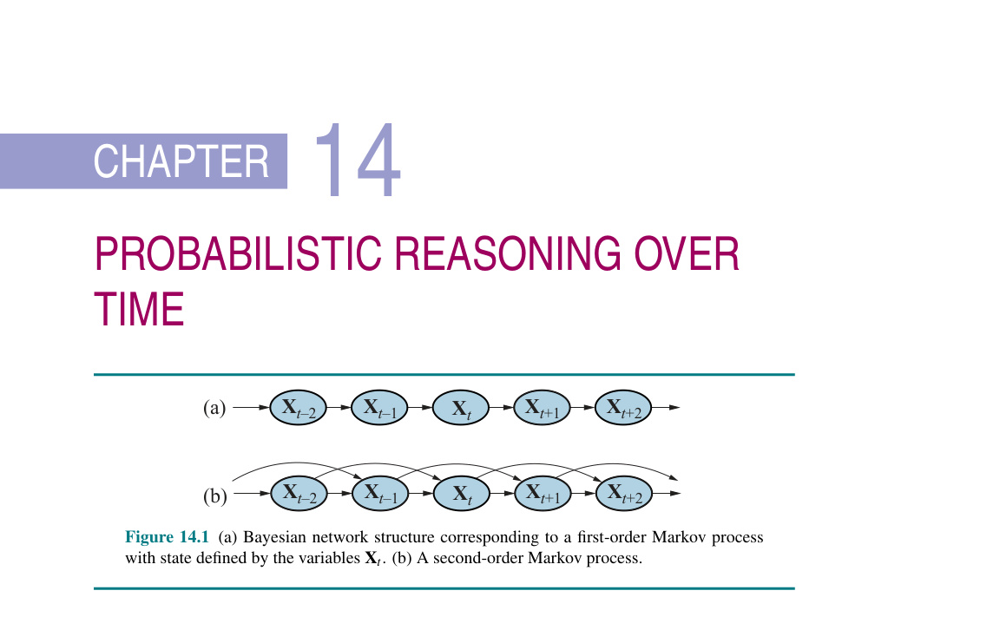
Hình 14.1
mermaid graph LR X_t_minus_2(("Xt-2")) --> X_t_minus_1(("Xt-1")) X_t_minus_1 --> X_t(("Xt")) X_t --> X_t_plus_1(("Xt+1")) X_t_plus_1 --> X_t_plus_2(("Xt+2"))(a) Cấu trúc mạng Bayes tương ứng với quá trình Markov bậc một với trạng thái được định nghĩa bởi các biến $\textbf{X}_t$.
mermaid graph LR X_t_minus_2(("Xt-2")) --> X_t_minus_1(("Xt-1")) X_t_minus_2 -.-> X_t(("Xt")) X_t_minus_1 --> X_t X_t_minus_1 -.-> X_t_plus_1(("Xt+1")) X_t --> X_t_plus_1 X_t -.-> X_t_plus_2(("Xt+2")) X_t_plus_1 --> X_t_plus_2(b) Một quá trình Markov bậc hai.
Do đó, $\textbf{P}(\textbf{E}_t | \textbf{X}_t)$ là mô hình cảm biến của chúng ta (đôi khi được gọi là mô hình quan sát (observation model)). Hình 14.2 cho thấy cả mô hình chuyển đổi và mô hình cảm biến đối với ví dụ chiếc ô. Lưu ý chiều của sự phụ thuộc giữa trạng thái và các cảm biến: các mũi tên đi từ trạng thái thực tế của thế giới đến các giá trị cảm biến bởi vì trạng thái của thế giới khiến (causes) các cảm biến nhận những giá trị cụ thể: trời mưa khiến cho chiếc ô xuất hiện. (Tất nhiên, quá trình suy luận diễn ra theo chiều ngược lại; sự phân biệt giữa hướng của các phụ thuộc được mô hình hóa và hướng của quá trình suy luận là một trong những lợi thế chính của mạng Bayes.)
Ngoài việc chỉ định các mô hình chuyển đổi và cảm biến, chúng ta cần cho biết mọi thứ bắt đầu như thế nào — phân phối xác suất tiên nghiệm (prior probability distribution) tại thời điểm 0, $\textbf{P}(\textbf{X}_0)$. Với những điều đó, chúng ta có một đặc tả cho phân phối đồng thời đầy đủ trên tất cả các biến, sử dụng Công thức (13.2). Đối với bất kỳ bước thời gian $t$ nào,
$\textbf{P}(\textbf{X}{0:t}, \textbf{E}{1:t}) = \textbf{P}(\textbf{X}0) \prod{i=1}^t \textbf{P}(\textbf{X}i | \textbf{X}{i-1}) \textbf{P}(\textbf{E}_i | \textbf{X}_i)$. (14.3)
Ba số hạng ở vế phải lần lượt là mô hình trạng thái ban đầu $\textbf{P}(\textbf{X}0)$, mô hình chuyển đổi $\textbf{P}(\textbf{X}_i | \textbf{X}{i-1})$, và mô hình cảm biến $\textbf{P}(\textbf{E}_i | \textbf{X}_i)$. Công thức này định nghĩa ngữ nghĩa của họ các mô hình thời gian được biểu diễn bởi ba số hạng này. Lưu ý rằng các mạng Bayes tiêu chuẩn không thể biểu diễn các mô hình như vậy bởi vì chúng yêu cầu một tập hợp hữu hạn các biến. Khả năng xử lý một tập hợp vô hạn các biến đến từ hai điều: thứ nhất, định nghĩa tập vô hạn bằng cách sử dụng các chỉ số nguyên; và thứ hai, việc sử dụng phép lượng từ hóa phổ dụng ngầm định (implicit universal quantification - xem Phần 8.2) để định nghĩa các mô hình cảm biến và chuyển đổi cho mọi bước thời gian.
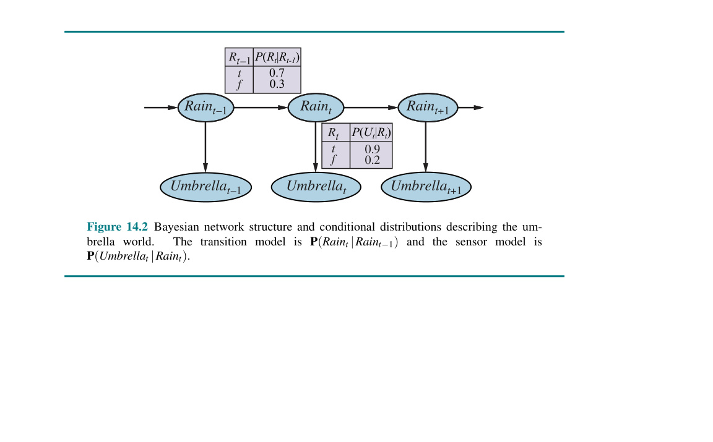
Hình 14.2 | $R_{t-1}$ | $P(R_t \vert R_{t-1})$ | | :--- | :--- | | $t$ | $0.7$ | | $f$ | $0.3$ |
mermaid graph LR R_t_minus_1(("Raint-1")) --> R_t(("Raint")) R_t --> R_t_plus_1(("Raint+1")) R_t_minus_1 --> U_t_minus_1(("Umbrellat-1")) R_t --> U_t(("Umbrellat")) R_t_plus_1 --> U_t_plus_1(("Umbrellat+1"))
$R_t$ $P(U_t \vert R_t)$ $t$ $0.9$ $f$ $0.2$ Hình 14.2 Cấu trúc mạng Bayes và các phân phối có điều kiện mô tả thế giới chiếc ô. Mô hình chuyển đổi là $\textbf{P}(Rain_t | Rain_{t-1})$ và mô hình cảm biến là $\textbf{P}(Umbrella_t | Rain_t)$.
Cấu trúc trong Hình 14.2 là một quá trình Markov bậc một — xác suất trời mưa được giả định là chỉ phụ thuộc vào việc ngày hôm trước trời có mưa hay không. Liệu một giả định như vậy có hợp lý hay không còn tùy thuộc vào chính miền đó. Giả định Markov bậc một nói rằng các biến trạng thái chứa tất cả thông tin cần thiết để mô tả phân phối xác suất cho lát cắt thời gian tiếp theo. Đôi khi giả định này là hoàn toàn đúng — ví dụ, nếu một hạt đang thực hiện một bước đi ngẫu nhiên (random walk) dọc theo trục $x$, thay đổi vị trí của nó bằng $\pm1$ ở mỗi bước thời gian, thì việc sử dụng tọa độ $x$ làm trạng thái sẽ cho ra một quá trình Markov bậc một. Đôi khi giả định này chỉ là xấp xỉ, như trong trường hợp dự đoán mưa chỉ dựa trên cơ sở việc ngày hôm trước có mưa hay không. Có hai cách để cải thiện độ chính xác của phép xấp xỉ này:
Bài tập 14.AUGM yêu cầu bạn chỉ ra rằng giải pháp thứ nhất — tăng bậc — luôn có thể được điều chỉnh lại thành sự gia tăng tập hợp các biến trạng thái, trong khi vẫn giữ nguyên bậc. Lưu ý rằng việc thêm các biến trạng thái có thể cải thiện sức mạnh dự đoán của hệ thống nhưng cũng làm tăng các yêu cầu (requirements) cho dự đoán: giờ đây chúng ta phải dự đoán luôn cả các biến mới. Do đó, chúng ta đang tìm kiếm một tập hợp các biến "tự túc" ("self-sufficient"), điều này thực sự có nghĩa là chúng ta phải hiểu "tính vật lý" ("physics") của quá trình đang được mô hình hóa. Yêu cầu mô hình hóa chính xác quá trình rõ ràng sẽ giảm đi nếu chúng ta có thể bổ sung các cảm biến mới (ví dụ: số đo nhiệt độ và áp suất) nhằm cung cấp thông tin trực tiếp về các biến trạng thái mới.
Chẳng hạn, hãy xem xét bài toán theo dõi một robot đi lang thang ngẫu nhiên trên mặt phẳng X–Y. Có thể đề xuất rằng vị trí và vận tốc là một tập hợp các biến trạng thái đủ tốt: người ta có thể sử dụng các định luật Newton một cách đơn giản để tính vị trí mới, và vận tốc có thể thay đổi không đoán trước được. Tuy nhiên, nếu robot chạy bằng pin, thì sự cạn kiệt pin sẽ có xu hướng gây ra hiệu ứng hệ thống đối với sự thay đổi của vận tốc. Do điều này lại phụ thuộc vào lượng điện đã được tiêu thụ bởi tất cả các thao tác trước đó, nên thuộc tính Markov bị vi phạm.
Chúng ta có thể khôi phục lại thuộc tính Markov bằng cách bao gồm mức sạc $Battery_t$ như một trong các biến trạng thái cấu thành nên $\textbf{X}t$. Việc này giúp dự đoán chuyển động của robot, nhưng đổi lại đòi hỏi một mô hình để dự đoán $Battery_t$ từ $Battery{t-1}$ và vận tốc. Trong một số trường hợp, điều đó có thể được thực hiện một cách đáng tin cậy, nhưng thường thì chúng ta thấy rằng sai số tích lũy theo thời gian. Trong trường hợp đó, độ chính xác có thể được cải thiện bằng cách thêm một cảm biến mới cho mức pin. Chúng ta sẽ quay lại với ví dụ về pin trong Phần 14.5.
Sau khi thiết lập cấu trúc của một mô hình thời gian tổng quát, chúng ta có thể công thức hóa các nhiệm vụ suy luận cơ bản cần phải giải quyết:
Ngoài các nhiệm vụ suy luận này, chúng ta còn có: * Học (Learning): Các mô hình chuyển đổi và cảm biến, nếu chưa biết, có thể được học từ các quan sát. Giống như các mạng Bayes tĩnh, việc học mạng Bayes động có thể được thực hiện như một sản phẩm phụ của suy luận. Suy luận cung cấp một ước lượng về những quá trình chuyển đổi nào đã thực sự xảy ra và những trạng thái nào đã tạo ra các thông số cảm biến, và những ước lượng này có thể được dùng để học các mô hình. Quá trình học có thể vận hành thông qua một thuật toán cập nhật lặp đi lặp lại được gọi là kỳ vọng – cực đại hóa (expectation-maximization - EM), hoặc nó có thể là kết quả của việc cập nhật Bayes các tham số mô hình dựa trên bằng chứng. Xem Chương 21 để biết thêm chi tiết.
Phần còn lại của mục này mô tả các thuật toán chung cho bốn nhiệm vụ suy luận, độc lập với loại mô hình cụ thể được sử dụng. Các cải tiến dành riêng cho mỗi mô hình được mô tả trong các mục tiếp theo.
$^2$ Thuật ngữ "lọc" (filtering) đề cập đến nguồn gốc của bài toán này trong công việc ban đầu về xử lý tín hiệu (signal processing), nơi vấn đề là lọc bỏ nhiễu trong một tín hiệu bằng cách ước tính các thuộc tính cơ bản của nó. $^3$ Đặc biệt, khi theo dõi một vật thể chuyển động bằng các quan sát vị trí thiếu chính xác, việc làm mượt sẽ mang lại quỹ đạo ước tính mượt mà hơn so với việc lọc — do đó có tên gọi này (smoothing).
Như chúng tôi đã chỉ ra trong Phần 7.7.3, một thuật toán lọc hữu ích cần phải duy trì một ước lượng trạng thái hiện tại và cập nhật nó, thay vì phải quay ngược lại toàn bộ lịch sử các nhận thức cho mỗi lần cập nhật. (Nếu không thì, chi phí của mỗi lần cập nhật tăng lên khi thời gian trôi qua.) Nói cách khác, cho biết kết quả của việc lọc đến thời điểm $t$, tác nhân cần tính toán kết quả cho $t+1$ từ bằng chứng mới $\textbf{e}_{t+1}$. Vậy chúng ta có:
$\textbf{P}(\textbf{X}{t+1} | \textbf{e}{1:t+1}) = f(\textbf{e}{t+1}, \textbf{P}(\textbf{X}_t | \textbf{e}{1:t}))$
đối với một hàm $f$ nào đó. Quá trình này được gọi là ước lượng đệ quy (recursive estimation). (Xem thêm Phần 4.4 và 7.7.3.) Chúng ta có thể xem phép tính như được bao gồm hai phần: đầu tiên, phân phối trạng thái hiện tại được chiếu tiếp (projected forward) từ $t$ đến $t+1$; sau đó nó được cập nhật (updated) bằng cách sử dụng bằng chứng mới $\textbf{e}_{t+1}$. Quá trình hai phần này xuất hiện khá đơn giản khi công thức được sắp xếp lại:
$\textbf{P}(\textbf{X}{t+1} | \textbf{e}{1:t+1}) = \textbf{P}(\textbf{X}{t+1} | \textbf{e}{1:t}, \textbf{e}{t+1})$ (chia nhỏ bằng chứng) $= \alpha \textbf{P}(\textbf{e}{t+1} | \textbf{X}{t+1}, \textbf{e}{1:t})\textbf{P}(\textbf{X}{t+1} | \textbf{e}{1:t})$ (sử dụng quy tắc Bayes, cho biết $\textbf{e}_{1:t}$) $= \alpha \underbrace{\textbf{P}(\textbf{e}{t+1} | \textbf{X}{t+1})}{\text{cập nhật (update)}} \underbrace{\textbf{P}(\textbf{X}{t+1} | \textbf{e}{1:t})}{\text{dự đoán (prediction)}}$ (theo giả định cảm biến Markov). (14.4)
Ở đây và trong suốt chương này, $\alpha$ là một hằng số chuẩn hóa được dùng để làm cho các xác suất cộng lại bằng 1. Bây giờ chúng ta thế biểu thức cho dự đoán một bước $\textbf{P}(\textbf{X}{t+1} | \textbf{e}{1:t})$, thu được bằng cách lấy điều kiện trên trạng thái hiện tại $\textbf{X}_t$. Phương trình kết quả cho ước lượng trạng thái mới là kết quả trung tâm trong chương này:
$\textbf{P}(\textbf{X}{t+1} | \textbf{e}{1:t+1}) = \alpha \textbf{P}(\textbf{e}{t+1} | \textbf{X}{t+1}) \sum_{\textbf{x}t} \textbf{P}(\textbf{X}{t+1} | \textbf{x}t, \textbf{e}{1:t}) P(\textbf{x}t | \textbf{e}{1:t})$ $= \alpha \underbrace{\textbf{P}(\textbf{e}{t+1} | \textbf{X}{t+1})}{\text{mô hình cảm biến}} \sum{\textbf{x}t} \underbrace{\textbf{P}(\textbf{X}{t+1} | \textbf{x}t)}{\text{mô hình chuyển đổi}} \underbrace{P(\textbf{x}t | \textbf{e}{1:t})}_{\text{đệ quy}}$ (giả định Markov). (14.5)
Trong biểu thức này, tất cả các số hạng đều đến từ mô hình hoặc từ ước lượng trạng thái trước đó. Vì thế, chúng ta có công thức đệ quy mong muốn. Chúng ta có thể nghĩ về ước lượng đã lọc $\textbf{P}(\textbf{X}t | \textbf{e}{1:t})$ như một "thông báo" ("message") $\textbf{f}_{1:t}$ được lan truyền về phía trước dọc theo chuỗi, được thay đổi bởi mỗi sự chuyển đổi và được cập nhật bởi mỗi quan sát mới. Quá trình này được cho bởi
$\textbf{f}{1:t+1} = \text{FORWARD}(\textbf{f}{1:t}, \textbf{e}_{t+1})$,
trong đó FORWARD thực hiện thao tác cập nhật được mô tả trong Công thức (14.5) và quá trình bắt đầu với $\textbf{f}_{1:0} = \textbf{P}(\textbf{X}_0)$. Khi tất cả các biến trạng thái là rời rạc, thời gian cho mỗi lần cập nhật là hằng số (tức là không phụ thuộc vào $t$), và không gian lưu trữ yêu cầu cũng là hằng số. (Tất nhiên, các hằng số này phụ thuộc vào kích thước của không gian trạng thái và loại mô hình thời gian cụ thể đang xét.) Các yêu cầu về thời gian và không gian cho việc cập nhật phải là hằng số nếu một tác nhân hữu hạn muốn theo dõi phân phối trạng thái hiện tại một cách vô thời hạn.
Hãy minh họa quá trình lọc cho hai bước trong ví dụ về chiếc ô cơ bản (Hình 14.2). Cụ thể, chúng ta sẽ tính $\textbf{P}(R_2 | u_{1:2})$ như sau: * Vào ngày 0, chúng ta không có quan sát nào, chỉ có niềm tin tiên nghiệm của nhân viên bảo vệ; hãy giả sử rằng nó bao gồm $\textbf{P}(R_0) = \langle 0.5, 0.5 \rangle$. * Vào ngày 1, chiếc ô xuất hiện, vì vậy $U_1 = \text{true}$. Dự đoán từ $t=0$ đến $t=1$ là $\textbf{P}(R_1) = \sum_{r_0} \textbf{P}(R_1 | r_0)P(r_0)$ $= \langle 0.7, 0.3 \rangle \times 0.5 + \langle 0.3, 0.7 \rangle \times 0.5 = \langle 0.5, 0.5 \rangle$. Sau đó, bước cập nhật chỉ cần nhân với xác suất của bằng chứng cho $t=1$ và chuẩn hóa, như được thể hiện trong Công thức (14.4): $\textbf{P}(R_1 | u_1) = \alpha \textbf{P}(u_1 | R_1)\textbf{P}(R_1) = \alpha \langle 0.9, 0.2 \rangle \langle 0.5, 0.5 \rangle$ $= \alpha \langle 0.45, 0.1 \rangle \approx \langle 0.818, 0.182 \rangle$. * Vào ngày 2, chiếc ô xuất hiện, vì vậy $U_2 = \text{true}$. Dự đoán từ $t=1$ đến $t=2$ là $\textbf{P}(R_2 | u_1) = \sum_{r_1} \textbf{P}(R_2 | r_1)P(r_1 | u_1)$ $= \langle 0.7, 0.3 \rangle \times 0.818 + \langle 0.3, 0.7 \rangle \times 0.182 \approx \langle 0.627, 0.373 \rangle$, và cập nhật nó với bằng chứng cho $t=2$ sẽ cho ra $\textbf{P}(R_2 | u_1, u_2) = \alpha \textbf{P}(u_2 | R_2)\textbf{P}(R_2 | u_1) = \alpha \langle 0.9, 0.2 \rangle \langle 0.627, 0.373 \rangle$ $= \alpha \langle 0.565, 0.075 \rangle \approx \langle 0.883, 0.117 \rangle$.
Về mặt trực giác, xác suất trời mưa tăng từ ngày 1 lên ngày 2 vì mưa có xu hướng kéo dài. Bài tập 14.CONV(a) yêu cầu bạn nghiên cứu sâu hơn xu hướng này.
Nhiệm vụ dự đoán có thể được xem đơn giản như là việc lọc mà không cần thêm bằng chứng mới. Trên thực tế, quá trình lọc đã kết hợp một dự đoán một bước, và rất dễ để suy ra công thức tính đệ quy sau đây để dự đoán trạng thái tại $t+k+1$ từ một dự đoán cho $t+k$:
$\textbf{P}(\textbf{X}{t+k+1} | \textbf{e}{1:t}) = \sum_{\textbf{x}{t+k}} \underbrace{\textbf{P}(\textbf{X}{t+k+1} | \textbf{x}{t+k})}{\text{mô hình chuyển đổi}} \underbrace{P(\textbf{x}{t+k} | \textbf{e}{1:t})}_{\text{đệ quy}}$. (14.6)
Đương nhiên, tính toán này chỉ liên quan đến mô hình chuyển đổi chứ không liên quan đến mô hình cảm biến.
Thật thú vị khi xem xét những gì sẽ xảy ra khi chúng ta cố gắng dự đoán xa hơn và xa hơn vào tương lai. Như Bài tập 14.CONV(b) chỉ ra, phân phối dự đoán cho việc trời mưa hội tụ về một điểm cố định $\langle 0.5, 0.5 \rangle$, sau đó nó duy trì bất biến cho mọi thời điểm. Đây là phân phối dừng (stationary distribution) của quá trình Markov được định nghĩa bởi mô hình chuyển đổi. (Xem thêm trang 462.) Chúng ta biết được khá nhiều về các đặc tính của những phân phối như vậy và về thời gian hòa trộn (mixing time) — đại khái là thời gian cần thiết để đạt đến điểm cố định. Về mặt thực tế, điều này làm thất bại bất kỳ nỗ lực nào nhằm dự đoán trạng thái thực tế cho một số bước dài hơn một tỷ lệ nhỏ của thời gian trộn, trừ khi bản thân phân phối dừng có đỉnh cực nhọn ở một khu vực nhỏ của không gian trạng thái. Sự không chắc chắn trong mô hình chuyển đổi càng nhiều thì thời gian trộn càng ngắn và tương lai càng bị che khuất.
Ngoài lọc và dự đoán, chúng ta có thể sử dụng phép đệ quy theo chiều thuận để tính likelihood của chuỗi bằng chứng, $P(\textbf{e}{1:t})$. Đây là một đại lượng hữu ích nếu chúng ta muốn so sánh các mô hình thời gian khác nhau có thể đã tạo ra cùng một chuỗi bằng chứng (ví dụ: hai mô hình khác nhau cho sự dai dẳng của cơn mưa). Đối với phép đệ quy này, chúng ta sử dụng thông báo likelihood $\textbf{l}{1:t}(\textbf{X}t) = \textbf{P}(\textbf{X}_t, \textbf{e}{1:t})$. Dễ dàng nhận thấy (Bài tập 14.LIKL) rằng phép tính thông báo giống hệt với phép tính để lọc:
$\textbf{l}{1:t+1} = \text{FORWARD}(\textbf{l}{1:t}, \textbf{e}_{t+1})$.
Sau khi đã tính toán $\textbf{l}_{1:t}$, chúng ta thu được likelihood thực tế bằng cách loại bỏ $\textbf{X}_t$ qua phép tính tổng (summing out):
$L_{1:t} = P(\textbf{e}{1:t}) = \sum{\textbf{x}t} l{1:t}(\textbf{x}_t)$. (14.7)
Lưu ý rằng thông báo likelihood biểu diễn các xác suất của các chuỗi bằng chứng ngày càng dài hơn khi thời gian trôi qua, do đó trở nên nhỏ dần về mặt số học, dẫn đến các vấn đề tràn số dưới (underflow) với số học dấu phẩy động. Đây là một vấn đề quan trọng trong thực tế, nhưng chúng ta sẽ không đi sâu vào các giải pháp ở đây.
Như chúng tôi đã nói trước đó, làm mượt là quá trình tính toán phân phối trên các trạng thái trong quá khứ khi biết bằng chứng tính đến hiện tại — nghĩa là $\textbf{P}(\textbf{X}k | \textbf{e}{1:t})$ đối với $0 \leq k < t$. (Xem Hình 14.3.) Lường trước một cách tiếp cận truyền thông báo đệ quy khác, chúng ta có thể chia tách phép tính thành hai phần — bằng chứng cho đến $k$ và bằng chứng từ $k+1$ đến $t$,
$\textbf{P}(\textbf{X}k | \textbf{e}{1:t}) = \textbf{P}(\textbf{X}k | \textbf{e}{1:k}, \textbf{e}{k+1:t})$ $= \alpha \textbf{P}(\textbf{X}_k | \textbf{e}{1:k})\textbf{P}(\textbf{e}{k+1:t} | \textbf{X}_k, \textbf{e}{1:k})$ (sử dụng quy tắc Bayes, cho biết $\textbf{e}_{1:k}$) $= \alpha \textbf{P}(\textbf{X}k | \textbf{e}{1:k})\textbf{P}(\textbf{e}{k+1:t} | \textbf{X}_k)$ (sử dụng độc lập có điều kiện) $= \alpha \textbf{f}{1:k} \times \textbf{b}_{k+1:t}$. (14.8)
ở đây ký hiệu "$\times$" thể hiện phép nhân từng phần tử của các vectơ. Trong đó chúng ta đã định nghĩa "thông báo chiều ngược" ("backward" message) $\textbf{b}{k+1:t} = \textbf{P}(\textbf{e}{k+1:t} | \textbf{X}k)$, tương tự như thông báo chiều thuận $\textbf{f}{1:k}$. Thông báo chiều thuận $\textbf{f}{1:k}$ có thể được tính bằng cách lọc theo chiều thuận từ $1$ đến $k$, như được cho bởi Công thức (14.5). Hóa ra thông báo chiều ngược $\textbf{b}{k+1:t}$ có thể được tính bằng một quá trình đệ quy chạy ngược (backward) từ $t$:
$\textbf{P}(\textbf{e}{k+1:t} | \textbf{X}_k) = \sum{\textbf{x}{k+1}} \textbf{P}(\textbf{e}{k+1:t} | \textbf{X}k, \textbf{x}{k+1})\textbf{P}(\textbf{x}{k+1} | \textbf{X}_k)$ (lấy điều kiện trên $\textbf{X}_{k+1}$) $= \sum{\textbf{x}{k+1}} \textbf{P}(\textbf{e}{k+1:t} | \textbf{x}{k+1})\textbf{P}(\textbf{x}{k+1} | \textbf{X}k)$ (theo độc lập có điều kiện) $= \sum{\textbf{x}{k+1}} \textbf{P}(\textbf{e}{k+1}, \textbf{e}{k+2:t} | \textbf{x}{k+1})\textbf{P}(\textbf{x}{k+1} | \textbf{X}_k)$ $= \sum{\textbf{x}{k+1}} \underbrace{\textbf{P}(\textbf{e}{k+1} | \textbf{x}{k+1})}{\text{mô hình cảm biến}} \underbrace{\textbf{P}(\textbf{e}{k+2:t} | \textbf{x}{k+1})}{\text{đệ quy}} \underbrace{\textbf{P}(\textbf{x}{k+1} | \textbf{X}k)}{\text{mô hình chuyển đổi}}$, (14.9)
trong đó bước cuối cùng theo sau sự độc lập có điều kiện của $\textbf{e}{k+1}$ và $\textbf{e}{k+2:t}$, khi biết $\textbf{x}_{k+1}$. Trong biểu thức này, tất cả các số hạng đều đến từ mô hình hoặc từ thông báo chiều ngược trước đó. Do đó, chúng ta có công thức đệ quy mong muốn. Dưới dạng thông báo, chúng ta có
$\textbf{b}{k+1:t} = \text{BACKWARD}(\textbf{b}{k+2:t}, \textbf{e}_{k+1})$,
trong đó BACKWARD thực hiện thao tác cập nhật được mô tả trong Công thức (14.9). Tương tự như đệ quy chiều thuận, thời gian và không gian cần thiết cho mỗi lần cập nhật là hằng số và do đó độc lập với $t$.
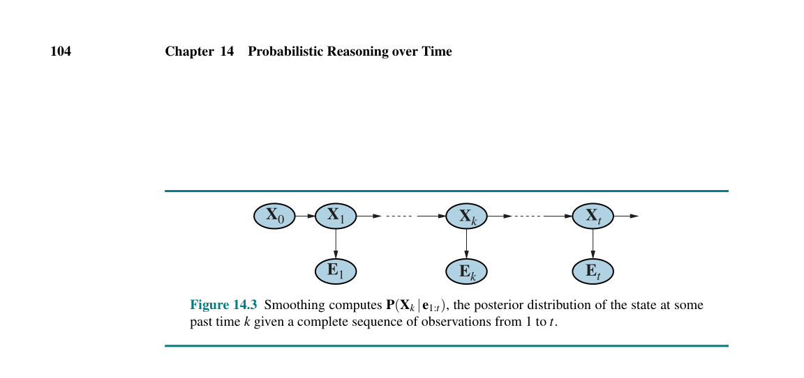
Hình 14.3
mermaid graph LR X_0(("X0")) --> X_1(("X1")) X_1 -.-> X_k(("Xk")) X_k -.-> X_t(("Xt")) X_t --> arrow((" ")) X_1 --> E_1(("E1")) X_k --> E_k(("Ek")) X_t --> E_t(("Et")) style arrow opacity:0;Hình 14.3 Làm mượt (Smoothing) tính toán $\textbf{P}(\textbf{X}k | \textbf{e}{1:t})$, phân phối hậu nghiệm của trạng thái tại một thời điểm $k$ trong quá khứ khi biết chuỗi quan sát đầy đủ từ 1 đến $t$.
Bây giờ chúng ta có thể thấy rằng hai số hạng trong Công thức (14.8) đều có thể được tính bằng cách sử dụng các đệ quy theo thời gian, một chạy theo chiều thuận từ $1$ đến $k$ và sử dụng công thức lọc (14.5), và cái kia chạy theo chiều ngược từ $t$ về $k+1$ và sử dụng Công thức (14.9).
Đối với việc khởi tạo pha chạy ngược, chúng ta có $\textbf{b}{t+1:t} = \textbf{P}(\textbf{e}{t+1:t} | \textbf{X}t) = \textbf{P}(\text{rỗng} | \textbf{X}_t) = \textbf{1}$, trong đó $\textbf{1}$ là một vectơ toàn các số 1. Lý do cho việc này là $\textbf{e}{t+1:t}$ là một chuỗi rỗng, nên xác suất quan sát được nó bằng 1.
Hãy áp dụng thuật toán này vào ví dụ chiếc ô, tính ước lượng đã được làm mượt cho xác suất có mưa ở thời điểm $k=1$, cho biết các quan sát về chiếc ô trong ngày 1 và 2. Theo Công thức (14.8), điều này được tính bởi
$\textbf{P}(R_1 | u_1, u_2) = \alpha \textbf{P}(R_1 | u_1)\textbf{P}(u_2 | R_1)$. (14.10)
Số hạng thứ nhất chúng ta đã biết là $\langle .818, .182 \rangle$, từ quá trình lọc chiều thuận được mô tả trước đó. Số hạng thứ hai có thể được tính bằng cách áp dụng đệ quy chiều ngược ở Công thức (14.9):
$\textbf{P}(u_2 | R_1) = \sum_{r_2} \textbf{P}(u_2 | r_2)P(\text{rỗng} | r_2)\textbf{P}(r_2 | R_1)$ $= (0.9 \times 1 \times \langle 0.7, 0.3 \rangle) + (0.2 \times 1 \times \langle 0.3, 0.7 \rangle) = \langle 0.69, 0.41 \rangle$.
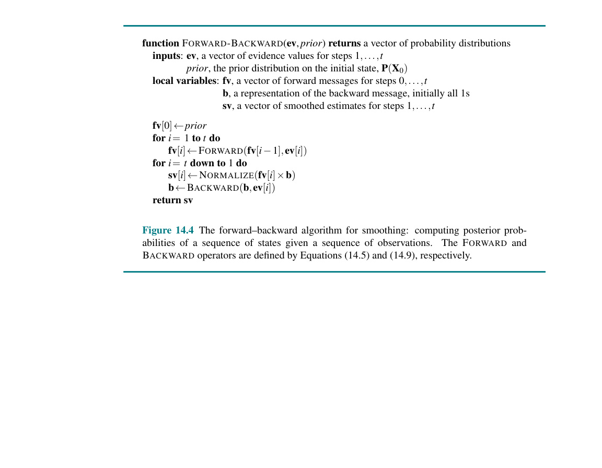
Hình 14.4 function FORWARD-BACKWARD($\textbf{ev}$, prior) returns một vectơ các phân phối xác suất inputs: $\textbf{ev}$, một vectơ của các giá trị bằng chứng cho các bước $1, \dots, t$ prior, phân phối tiên nghiệm trên trạng thái ban đầu, $\textbf{P}(\textbf{X}_0)$ local variables: $\textbf{fv}$, một vectơ của các thông báo chiều thuận cho các bước $0, \dots, t$ $\textbf{b}$, một biểu diễn của thông báo chiều ngược, khởi tạo toàn các số 1 $\textbf{sv}$, một vectơ của các ước lượng làm mượt cho các bước $1, \dots, t$
$\textbf{fv}[0] \leftarrow$ prior for $i = 1$ to $t$ do $\textbf{fv}[i] \leftarrow \text{FORWARD}(\textbf{fv}[i-1], \textbf{ev}[i])$ for $i = t$ down to $1$ do $\textbf{sv}[i] \leftarrow \text{NORMALIZE}(\textbf{fv}[i] \times \textbf{b})$ $\textbf{b} \leftarrow \text{BACKWARD}(\textbf{b}, \textbf{ev}[i])$ return $\textbf{sv}$
Hình 14.4 Thuật toán forward-backward để làm mượt: tính toán các xác suất hậu nghiệm của một chuỗi các trạng thái khi biết một chuỗi các quan sát. Các toán tử FORWARD và BACKWARD được định nghĩa tương ứng bởi các Công thức (14.5) và (14.9).
Thế các kết quả vào Công thức (14.10), chúng ta tìm thấy ước lượng làm mượt đối với việc có mưa vào ngày 1 là
$\textbf{P}(R_1 | u_1, u_2) = \alpha \langle 0.818, 0.182 \rangle \times \langle 0.69, 0.41 \rangle \approx \langle 0.883, 0.117 \rangle$.
Do đó, ước lượng làm mượt cho việc mưa vào ngày 1 cao hơn ước lượng được lọc ($0.818$) trong trường hợp này. Điều này là vì có chiếc ô ở ngày 2 làm cho nhiều khả năng đã có mưa vào ngày 2 hơn; đến lượt nó, vì mưa có xu hướng dai dẳng, làm cho nhiều khả năng đã có mưa vào ngày 1 hơn.
Cả hai phép đệ quy thuận và ngược đều cần một lượng thời gian không đổi cho mỗi bước; do đó, độ phức tạp thời gian của việc làm mượt theo bằng chứng $\textbf{e}_{1:t}$ là $O(t)$. Đây là độ phức tạp cho việc làm mượt ở một thời điểm $k$ cụ thể. Nếu chúng ta muốn làm mượt trên toàn bộ chuỗi, một phương pháp rõ ràng là chỉ cần chạy toàn bộ quá trình làm mượt một lần cho mỗi lát cắt thời gian cần được làm mượt. Việc này dẫn đến độ phức tạp thời gian là $O(t^2)$.
Một phương pháp tốt hơn sử dụng ứng dụng đơn giản của quy hoạch động (dynamic programming) để giảm độ phức tạp xuống $O(t)$. Một đầu mối xuất hiện trong phân tích trước đây về ví dụ chiếc ô, nơi chúng ta có thể tái sử dụng kết quả của pha lọc chiều thuận. Chìa khóa cho thuật toán thời gian tuyến tính là lưu trữ lại kết quả của việc lọc chiều thuận dọc theo toàn bộ chuỗi. Sau đó chúng ta chạy phép đệ quy chiều ngược từ $t$ lùi xuống $1$, tính toán ước lượng làm mượt ở mỗi bước $k$ từ thông báo chiều ngược đã tính $\textbf{b}{k+1:t}$ và thông báo chiều thuận đã lưu $\textbf{f}{1:k}$. Thuật toán này, được đặt tên rất phù hợp là thuật toán forward–backward, được thể hiện trong Hình 14.4.
Người đọc tinh ý hẳn sẽ nhận ra rằng cấu trúc mạng Bayes được hiển thị trong Hình 14.3 là một cây nhiều gốc (polytree) như đã định nghĩa ở trang 451. Điều này có nghĩa là một sự ứng dụng thẳng thuật toán phân cụm (clustering algorithm) cũng tạo ra một thuật toán thời gian tuyến tính tính toán các ước lượng đã làm mượt cho toàn bộ chuỗi. Người ta hiện đã hiểu rằng thuật toán forward–backward trên thực tế là một trường hợp đặc biệt của thuật toán truyền polytree (polytree propagation algorithm) được sử dụng với các phương pháp phân cụm (mặc dù hai thuật toán được phát triển độc lập).
Thuật toán forward–backward tạo thành xương sống tính toán cho nhiều ứng dụng xử lý với chuỗi các quan sát có nhiễu. Như được mô tả từ nãy đến giờ, nó có hai hạn chế thực tiễn. Điểm đầu tiên là độ phức tạp không gian (space complexity) của nó có thể quá cao khi không gian trạng thái lớn và các chuỗi dài. Nó sử dụng lượng không gian là $O(|\textbf{f}|t)$ trong đó $|\textbf{f}|$ là kích thước của biểu diễn cho thông báo chiều thuận. Yêu cầu không gian có thể giảm xuống $O(|\textbf{f}| \log t)$ với sự gia tăng độ phức tạp thời gian tương ứng theo hệ số $\log t$, như được chỉ ra trong Bài tập 14.ISLE. Trong một vài trường hợp (xem Phần 14.3), có thể sử dụng thuật toán không gian hằng số (constant-space algorithm).
Hạn chế thứ hai của thuật toán cơ bản là nó cần phải được sửa đổi để hoạt động trong thiết lập trực tuyến (online setting), nơi các ước lượng làm mượt phải được tính cho các lát cắt thời gian trước đó do các quan sát mới liên tục được thêm vào cuối chuỗi. Yêu cầu phổ biến nhất là làm mượt với độ trễ cố định (fixed-lag smoothing), yêu cầu tính toán ước lượng làm mượt $\textbf{P}(\textbf{X}{t-d} | \textbf{e}{1:t})$ đối với độ trễ $d$ cố định. Tức là, việc làm mượt được thực hiện cho lát cắt thời gian trễ $d$ bước so với thời gian hiện tại $t$; khi $t$ tăng, việc làm mượt phải theo kịp. Rõ ràng, chúng ta có thể chạy thuật toán forward-backward trên "cửa sổ" kích thước $d$ bước ( $d$-step window) khi mỗi quan sát mới được bổ sung, nhưng điều này có vẻ kém hiệu quả. Trong Phần 14.3, chúng ta sẽ thấy rằng trong một vài trường hợp, có thể thực hiện làm mượt với độ trễ cố định trong thời gian hằng số cho mỗi lần cập nhật, độc lập với độ trễ $d$.
Giả sử rằng $[\text{true}, \text{true}, \text{false}, \text{true}, \text{true}]$ là chuỗi quan sát chiếc ô trong năm ngày làm việc đầu tiên của nhân viên bảo vệ. Chuỗi thời tiết nào có khả năng nhất để giải thích điều này? Việc chiếc ô vắng mặt vào ngày 3 có nghĩa là trời không mưa, hay do giám đốc quên mang theo? Nếu trời không mưa vào ngày 3, có lẽ (vì thời tiết có xu hướng dai dẳng) trời cũng không mưa vào ngày 4, nhưng giám đốc đã mang ô đề phòng. Tổng cộng, có $2^5$ chuỗi thời tiết có thể có mà chúng ta có thể chọn. Liệu có cách nào để tìm ra chuỗi có khả năng nhất, mà không cần phải liệt kê ra hết và tính toán likelihood của tất cả chúng?
Chúng ta có thể thử quy trình tính thời gian tuyến tính sau: sử dụng làm mượt để tìm phân phối hậu nghiệm cho thời tiết ở mỗi bước thời gian; sau đó cấu trúc nên chuỗi bằng cách ở mỗi bước sử dụng thời tiết có khả năng xảy ra nhất theo phân phối hậu nghiệm. Kiểu tiếp cận này đáng lẽ phải gióng lên hồi chuông cảnh báo trong đầu người đọc, bởi vì phân phối hậu nghiệm do việc làm mượt tính toán ra là phân phối trên các bước thời gian đơn lẻ, trong khi để tìm ra chuỗi có khả năng nhất, chúng ta phải xem xét xác suất đồng thời trên tất cả các bước thời gian. Kết quả thực tế có thể hoàn toàn khác nhau. (Xem Bài tập 14.VITE.)
Có một thuật toán thời gian tuyến tính để tìm ra chuỗi có khả năng nhất, nhưng nó đòi hỏi phải suy nghĩ nhiều hơn. Nó dựa vào cùng một thuộc tính Markov đã cho ra các thuật toán hiệu quả để lọc và làm mượt. Ý tưởng là xem mỗi chuỗi như một đường đi (path) xuyên qua một đồ thị mà các nút (nodes) của nó là các trạng thái có thể có ở mỗi bước thời gian. Một đồ thị như vậy đối với thế giới chiếc ô được hiển thị trong Hình 14.5(a). Bây giờ hãy xem xét nhiệm vụ tìm con đường có khả năng nhất đi qua đồ thị này, trong đó likelihood của một đường đi bất kỳ là tích của các xác suất chuyển đổi dọc theo con đường đó và xác suất của các quan sát được cung cấp ở mỗi trạng thái.
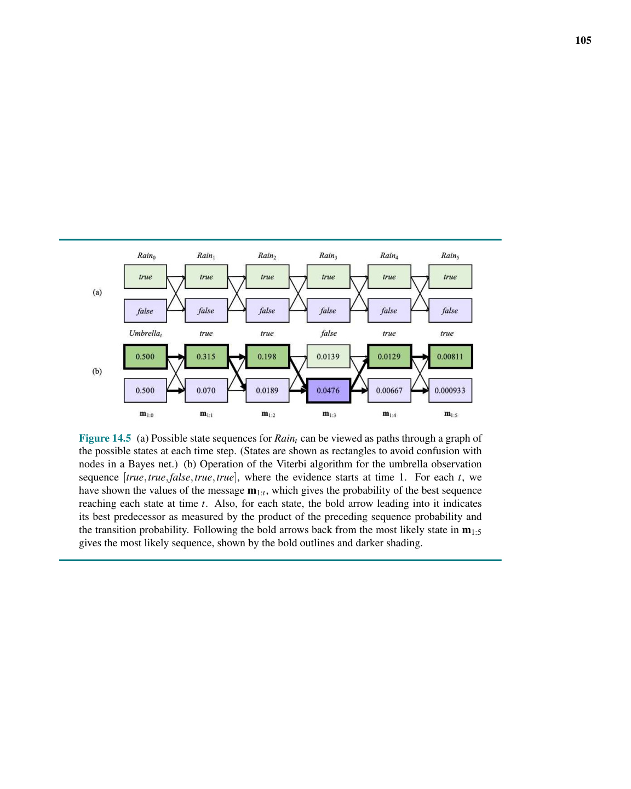
Hình 14.5 (a) ```mermaid graph LR R0_T[true] --- R1_T[true] R0_T --- R1_F[false] R0_F[false] --- R1_T R0_F --- R1_F
R1_T --- R2_T[true] R1_T --- R2_F[false] R1_F --- R2_T R1_F --- R2_F R2_T --- R3_T[true] R2_T --- R3_F[false] R2_F --- R3_T R2_F --- R3_F R3_T --- R4_T[true] R3_T --- R4_F[false] R3_F --- R4_T R3_F --- R4_F R4_T --- R5_T[true] R4_T --- R5_F[false] R4_F --- R5_T R4_F --- R5_F
*(b)*mermaid graph LR R0_T["0.500"] ==> R1_T["0.315"] R0_F["0.500"] --> R1_T R0_T --> R1_F["0.070"] R0_F ==> R1_FR1_T ==> R2_T["0.198"] R1_F --> R2_T R1_T --> R2_F["0.0189"] R1_F ==> R2_F R2_T ==> R3_T["0.0139"] R2_F --> R3_T R2_T --> R3_F["0.0476"] R2_F ==> R3_F R3_T ==> R4_T["0.0129"] R3_F --> R4_T R3_T --> R4_F["0.00667"] R3_F ==> R4_F R4_T ==> R5_T["0.00811"] R4_F --> R5_T R4_T --> R5_F["0.000933"] R4_F ==> R5_F``` (Bảng các số liệu cho $m_{1:0}$ đến $m_{1:5}$ tương ứng với các ô bên dưới đồ thị ở hình gốc)
Hình 14.5 (a) Chuỗi các trạng thái có thể có đối với $Rain_t$ có thể được xem như các đường đi qua một đồ thị biểu diễn trạng thái có thể có ở mỗi thời điểm. (Các trạng thái được biểu diễn dưới dạng hình chữ nhật để tránh nhầm lẫn với các nút trong Bayes net.) (b) Sự vận hành của thuật toán Viterbi đối với chuỗi quan sát chiếc ô $[\text{true}, \text{true}, \text{false}, \text{true}, \text{true}]$, trong đó bằng chứng bắt đầu ở $t=1$. Đối với mỗi $t$, chúng tôi đã thể hiện các giá trị của thông báo $\textbf{m}{1:t}$, xác định xác suất của chuỗi tốt nhất đạt đến từng trạng thái tại thời điểm $t$. Ngoài ra, đối với mỗi trạng thái, mũi tên đậm đi vào nó chỉ định nút tiền nhiệm tốt nhất của nó như được đo lường bằng tích của xác suất chuỗi ưu tiên và xác suất chuyển đổi. Theo sát các mũi tên đậm lùi từ trạng thái có khả năng nhất trong $\textbf{m}{1:5}$ cho ra chuỗi có khả năng nhất, được thể hiện bằng viền đậm và bóng râm tối hơn.
Hãy tập trung cụ thể vào các đường đi tiếp cận trạng thái $Rain_5 = \text{true}$. Vì tính chất Markov, dễ dàng suy ra rằng con đường có khả năng xảy ra nhất dẫn đến trạng thái $Rain_5 = \text{true}$ bao gồm con đường có khả năng xảy ra nhất dẫn đến một trạng thái nào đó ở thời điểm 4 theo sau đó là bước chuyển đổi sang $Rain_5 = \text{true}$; và trạng thái ở thời điểm 4 trở thành một phần của đường đi tới $Rain_5 = \text{true}$ chính là trạng thái nào tối đa hóa được likelihood của toàn bộ đường đi đó. Nói cách khác, có một mối quan hệ đệ quy giữa những đường đi có khả năng xảy ra nhất dẫn đến mỗi trạng thái $\textbf{x}_{t+1}$ và những đường đi có khả năng xảy ra nhất dẫn đến mỗi trạng thái $\textbf{x}_t$.
Chúng ta có thể sử dụng thuộc tính này một cách trực tiếp để cấu trúc thuật toán đệ quy tính toán chuỗi có khả năng nhất khi biết bằng chứng. Chúng ta sẽ sử dụng một thông báo được tính toán đệ quy $\textbf{m}{1:t}$, giống như thông báo chiều thuận $\textbf{f}{1:t}$ trong thuật toán lọc. Thông báo được định nghĩa như sau: $^5$
$\textbf{m}{1:t} = \max{\textbf{x}{1:t-1}} \textbf{P}(\textbf{x}{1:t-1}, \textbf{X}t, \textbf{e}{1:t})$.
Để có được mối quan hệ đệ quy giữa $\textbf{m}{1:t+1}$ và $\textbf{m}{1:t}$, chúng ta có thể lặp lại nhiều hay ít các bước tương tự như chúng ta đã làm cho Công thức (14.5):
$\textbf{m}{1:t+1} = \max{\textbf{x}{1:t}} \textbf{P}(\textbf{x}{1:t}, \textbf{X}{t+1}, \textbf{e}{1:t+1}) = \max_{\textbf{x}{1:t}} \textbf{P}(\textbf{x}{1:t}, \textbf{X}{t+1}, \textbf{e}{1:t}, \textbf{e}{t+1})$ $= \max{\textbf{x}{1:t}} \textbf{P}(\textbf{e}{t+1} | \textbf{x}{1:t}, \textbf{X}{t+1}, \textbf{e}{1:t})\textbf{P}(\textbf{x}{1:t}, \textbf{X}{t+1}, \textbf{e}{1:t})$ $= \textbf{P}(\textbf{e}{t+1} | \textbf{X}{t+1}) \max_{\textbf{x}{1:t}} \textbf{P}(\textbf{X}{t+1} | \textbf{x}t)\textbf{P}(\textbf{x}{1:t}, \textbf{e}{1:t})$ $= \textbf{P}(\textbf{e}{t+1} | \textbf{X}{t+1}) \max{\textbf{x}t} \textbf{P}(\textbf{X}{t+1} | \textbf{x}t) \max{\textbf{x}{1:t-1}} \textbf{P}(\textbf{x}{1:t-1}, \textbf{x}t, \textbf{e}{1:t})$ (14.11)
trong đó phần cuối cùng $\max_{\textbf{x}{1:t-1}} \textbf{P}(\textbf{x}{1:t-1}, \textbf{x}t, \textbf{e}{1:t})$ chính là giá trị tại trạng thái cụ thể $\textbf{x}t$ trong vectơ thông báo $\textbf{m}{1:t}$. Công thức (14.11) về cơ bản y hệt với phương trình lọc (14.5), ngoại trừ việc lấy tổng trên $\textbf{x}t$ trong Công thức (14.5) được thay bằng việc lấy cực đại (maximization) trên $\textbf{x}_t$ ở Công thức (14.11), và không có hằng số chuẩn hóa $\alpha$ nào trong Công thức (14.11). Do đó, thuật toán để tính chuỗi có khả năng nhất tương tự như quá trình lọc: nó bắt đầu ở thời điểm 0 với điều kiện tiên nghiệm $\textbf{m}{1:0} = \textbf{P}(\textbf{X}_0)$ và sau đó chạy dọc về phía trước, tính toán thông báo $\textbf{m}$ ở mỗi bước thời gian bằng Công thức (14.11). Tiến trình tính toán này được minh họa trong Hình 14.5(b).
$^5$ Lưu ý rằng các xác suất này không hẳn là xác suất của các đường đi có khả năng xảy ra nhất dẫn đến trạng thái $\textbf{X}t$ nếu có bằng chứng, bởi lẽ đó sẽ là các xác suất có điều kiện $\max{\textbf{x}{1:t-1}} \textbf{P}(\textbf{x}{1:t-1}, \textbf{X}t | \textbf{e}{1:t})$; nhưng hai vectơ này được liên hệ bởi một hằng số $P(\textbf{e}{1:t})$. Sự khác biệt không quan trọng bởi vì toán tử $\max$ không quan tâm đến các hằng số phụ. Chúng ta nhận được một phép đệ quy đơn giản hơn một chút với $\textbf{m}{1:t}$ được định nghĩa theo cách này.
Vào cuối chuỗi quan sát, $\textbf{m}_{1:t}$ sẽ chứa xác suất của chuỗi có khả năng xảy ra nhất đạt đến mỗi trạng thái trong số các trạng thái cuối cùng. Do đó, người ta có thể dễ dàng chọn trạng thái cuối cùng của chuỗi có khả năng xảy ra nhất một cách tổng thể (trạng thái được tô viền đậm ở bước 5). Để xác định chuỗi thực tế, trái ngược với việc chỉ cần tính ra xác suất của nó, thuật toán cũng sẽ cần lưu lại, đối với mỗi trạng thái, trạng thái tốt nhất dẫn đến nó; chúng được biểu thị bằng các mũi tên đậm trong Hình 14.5(b). Chuỗi tối ưu được xác định bằng cách theo các mũi tên đậm đó lùi về từ trạng thái cuối cùng tốt nhất.
Thuật toán mà chúng ta vừa mô tả được gọi là thuật toán Viterbi (Viterbi algorithm), theo tên nhà phát minh ra nó, Andrew Viterbi. Giống như thuật toán lọc, độ phức tạp thời gian của nó tuyến tính theo $t$, độ dài của chuỗi. Khác với lọc, vốn sử dụng không gian là hằng số, yêu cầu về không gian của Viterbi cũng tuyến tính theo $t$. Điều này là do thuật toán Viterbi cần lưu các con trỏ (pointers) xác định chuỗi tốt nhất dẫn đến mỗi trạng thái.
Một điểm lưu ý thực tiễn cuối cùng: tràn số dưới (numerical underflow) là một vấn đề nghiêm trọng đối với thuật toán Viterbi. Trong Hình 14.5(b), các xác suất ngày càng nhỏ dần — và đây mới chỉ là một ví dụ đồ chơi (toy example). Các ứng dụng thực tế trong phân tích DNA hoặc giải mã thông báo có thể có hàng nghìn hoặc hàng triệu bước. Một giải pháp khả thi chỉ đơn giản là chuẩn hóa $\textbf{m}$ ở mỗi bước; sự thay đổi tỷ lệ này không ảnh hưởng đến tính đúng đắn bởi vì $\max(cx, cy) = c \cdot \max(x, y)$. Một giải pháp thứ hai là sử dụng các xác suất theo lôgarit (log probabilities) ở khắp nơi và thay phép nhân bằng phép cộng. Một lần nữa, tính đúng đắn không bị ảnh hưởng vì hàm logarit là hàm đơn điệu, do đó $\max(\log x, \log y) = \log \max(x, y)$.
Mục trước đã phát triển các thuật toán cho suy luận xác suất theo thời gian bằng cách sử dụng một khung khái quát độc lập với dạng thức cụ thể của mô hình chuyển đổi và cảm biến, cũng như độc lập với bản chất của các biến trạng thái và bằng chứng. Trong mục này và hai mục tiếp theo, chúng ta thảo luận về các mô hình và ứng dụng cụ thể hơn để minh họa cho sức mạnh của các thuật toán cơ bản, và trong một vài trường hợp, cho phép có những cải tiến xa hơn.
Chúng ta bắt đầu với mô hình Markov ẩn (hidden Markov model), hay HMM. HMM là một mô hình xác suất thời gian trong đó trạng thái của quá trình được mô tả bằng một biến ngẫu nhiên rời rạc, đơn lẻ. Các giá trị có thể có của biến đó là các trạng thái có thể có của thế giới. Do đó, ví dụ chiếc ô được mô tả trong mục trước là một HMM, do nó chỉ có một biến trạng thái: $Rain_t$. Điểu gì sẽ xảy ra nếu bạn có một mô hình với hai hoặc nhiều biến trạng thái? Bạn vẫn có thể khớp nó vào trong khung HMM bằng cách kết hợp các biến thành một "siêu biến" ("megavariable") duy nhất có các giá trị là mọi tuple gồm các giá trị của những biến trạng thái riêng lẻ. Chúng ta sẽ thấy rằng cấu trúc hạn chế của các HMM cho phép thực hiện một cách cài đặt bằng ma trận đơn giản và thanh lịch cho mọi thuật toán cơ bản.$^6$
Mặc dù HMM yêu cầu trạng thái phải là một biến rời rạc duy nhất, nhưng lại không có hạn chế tương ứng nào đối với các biến bằng chứng (evidence variables). Điều này là do các biến bằng chứng luôn được quan sát thấy, nghĩa là không cần phải theo dõi bất kỳ sự phân phối nào trên các giá trị của chúng. (Nếu một biến không được quan sát, nó đơn giản có thể được bỏ khỏi mô hình cho bước thời gian đó.) Có thể có nhiều biến bằng chứng, cả rời rạc và liên tục.
$^6$ Nếu bạn đọc chưa quen với các phép toán cơ bản trên vectơ và ma trận, hãy tham khảo Phụ lục A trước khi tiếp tục mục này.
Với một biến trạng thái rời rạc duy nhất $\textbf{X}t$, chúng ta có thể đưa ra dạng cụ thể cho các biểu diễn của mô hình chuyển đổi, mô hình cảm biến, và các thông báo chiều thuận và chiều ngược. Giả sử biến trạng thái $\textbf{X}_t$ nhận các giá trị được biểu thị bằng các số nguyên $1, \dots, S$, trong đó $S$ là số lượng các trạng thái có thể có. Mô hình chuyển đổi $\textbf{P}(\textbf{X}_t | \textbf{X}{t-1})$ trở thành một ma trận $\textbf{T}$ kích thước $S \times S$, với
$\textbf{T}{ij} = P(\textbf{X}_t = j | \textbf{X}{t-1} = i)$.
Tức là, $\textbf{T}_{ij}$ là xác suất của một sự chuyển đổi từ trạng thái $i$ sang trạng thái $j$. Ví dụ, nếu chúng ta đánh số các trạng thái $Rain = \text{true}$ và $Rain = \text{false}$ tương ứng là 1 và 2, thì ma trận chuyển đổi cho thế giới chiếc ô được định nghĩa trong Hình 14.2 là
$\textbf{T} = \textbf{P}(\textbf{X}t | \textbf{X}{t-1}) = \begin{pmatrix} 0.7 & 0.3 \ 0.3 & 0.7 \end{pmatrix}$.
Chúng ta cũng đặt mô hình cảm biến dưới dạng ma trận. Trong trường hợp này, vì giá trị của biến bằng chứng $\textbf{E}_t$ đã được biết tại thời điểm $t$ (gọi nó là $\textbf{e}_t$), chúng ta chỉ cần chỉ định, cho mỗi trạng thái, khả năng mà trạng thái đó gây ra việc $\textbf{e}_t$ xuất hiện: chúng ta cần $P(\textbf{e}_t | \textbf{X}_t = i)$ đối với mỗi trạng thái $i$. Để thuận tiện cho toán học, chúng ta đặt các giá trị này vào trong một ma trận quan sát (observation matrix) $\textbf{O}_t$ có dạng đường chéo kích thước $S \times S$, mỗi ma trận cho một bước thời gian. Phần tử đường chéo thứ $i$ của $\textbf{O}_t$ là $P(\textbf{e}_t | \textbf{X}_t = i)$ và các thành phần khác bằng 0. Ví dụ, vào ngày 1 trong thế giới chiếc ô ở Hình 14.5, $U_1 = \text{true}$, và vào ngày 3, $U_3 = \text{false}$, do đó chúng ta có
$\textbf{O}_1 = \begin{pmatrix} 0.9 & 0 \ 0 & 0.2 \end{pmatrix}; \quad \textbf{O}_3 = \begin{pmatrix} 0.1 & 0 \ 0 & 0.8 \end{pmatrix}$.
Bây giờ, nếu chúng ta sử dụng các vectơ cột để biểu diễn các thông báo chiều thuận và chiều ngược, mọi tính toán đều trở thành các phép toán ma trận-vectơ đơn giản. Phương trình chiều thuận (14.5) trở thành
$\textbf{f}{1:t+1} = \alpha \textbf{O}{t+1} \textbf{T}^\top \textbf{f}_{1:t}$ (14.12)
và phương trình chiều ngược (14.9) trở thành
$\textbf{b}{k+1:t} = \textbf{T} \textbf{O}{k+1} \textbf{b}_{k+2:t}$. (14.13)
Từ các phương trình này, chúng ta có thể thấy rằng độ phức tạp thời gian của thuật toán forward-backward (Hình 14.4) áp dụng cho một chuỗi có độ dài $t$ là $O(S^2t)$, do mỗi bước đòi hỏi phải nhân một vectơ gồm $S$ phần tử với một ma trận $S \times S$. Yêu cầu về không gian là $O(St)$, bởi vì pha chiều thuận (forward pass) lưu trữ $t$ vectơ có kích thước $S$.
Ngoài việc cung cấp một mô tả thanh lịch cho các thuật toán lọc và làm mượt cho HMM, công thức bằng ma trận còn hé lộ các cơ hội cho những thuật toán cải tiến. Điều đầu tiên là một biến thể đơn giản trên thuật toán forward-backward cho phép việc làm mượt được thực hiện trong không gian hằng số, không phụ thuộc vào độ dài của chuỗi. Ý tưởng là việc làm mượt cho bất kỳ lát cắt thời gian $k$ nào cũng đòi hỏi sự hiện diện đồng thời của cả thông báo chiều thuận và chiều ngược, $\textbf{f}{1:k}$ và $\textbf{b}{k+1:t}$, theo Công thức (14.8). Thuật toán forward-backward đạt được điều này bằng cách lưu trữ các vectơ $\textbf{f}$ đã được tính trong pha chiều thuận để chúng luôn sẵn có trong pha chiều ngược. Một cách khác để đạt được điều này là với một đường truyền đơn duy nhất lan truyền cả $\textbf{f}$ và $\textbf{b}$ theo cùng một hướng. Ví dụ, thông báo "chiều thuận" $\textbf{f}$ có thể được lan truyền về phía sau (backward) nếu chúng ta biến đổi Công thức (14.12) để làm việc theo hướng ngược lại:
$\textbf{f}{1:t} = \alpha' (\textbf{T}^\top)^{-1} \textbf{O}{t+1}^{-1} \textbf{f}_{1:t+1}$.
Thuật toán làm mượt sửa đổi này hoạt động bằng cách trước tiên chạy đường truyền chiều thuận chuẩn để tính toán $\textbf{f}_{1:t}$ (và quên đi tất cả các kết quả trung gian), sau đó chạy đường truyền chiều ngược cho cả $\textbf{b}$ và $\textbf{f}$ cùng nhau, sử dụng chúng để tính toán ước lượng làm mượt ở mỗi bước. Vì chỉ cần một bản sao của mỗi thông báo, nên yêu cầu lưu trữ là hằng số (tức là không phụ thuộc vào $t$, độ dài của chuỗi). Có hai hạn chế đáng chú ý đối với thuật toán này: nó đòi hỏi ma trận chuyển đổi phải có thể nghịch đảo (invertible) và mô hình cảm biến không chứa các số 0 — nghĩa là, mọi quan sát đều có thể xảy ra ở mọi trạng thái.
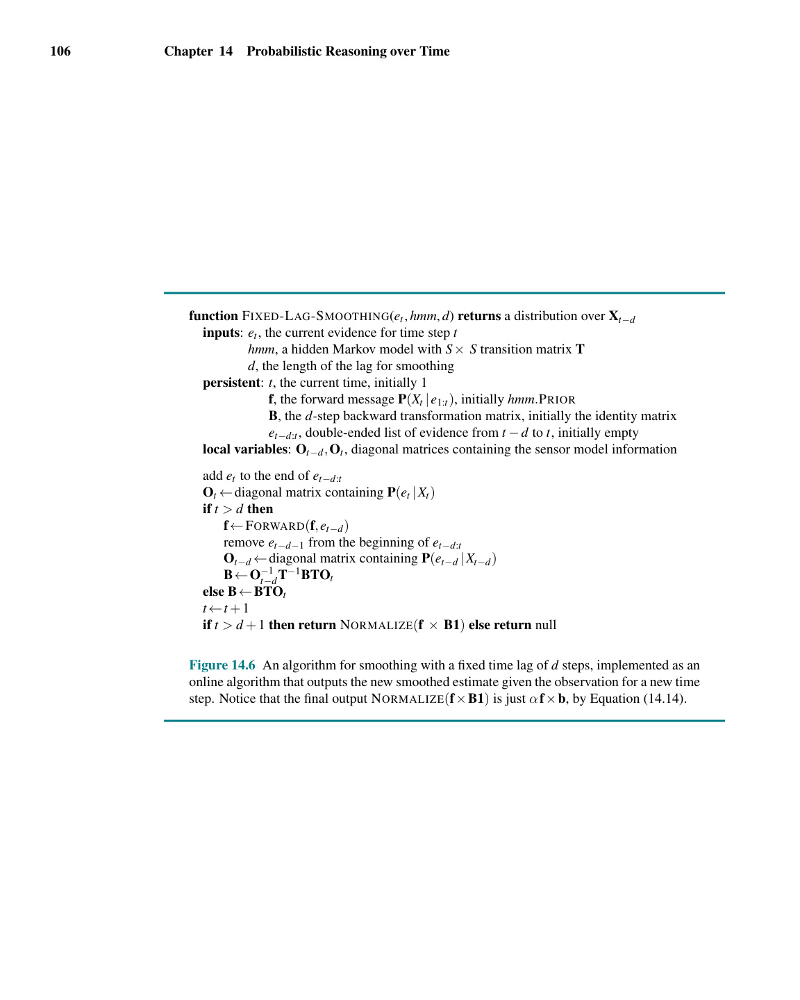
Hình 14.6 function FIXED-LAG-SMOOTHING($e_t, hmm, d$) returns một phân phối trên $\textbf{X}{t-d}$ inputs: $e_t$, bằng chứng hiện tại ở bước thời gian $t$ $hmm$, một mô hình Markov ẩn với ma trận chuyển đổi kích thước $S \times S$ là $\textbf{T}$ $d$, độ dài của độ trễ cho việc làm mượt persistent: $t$, thời gian hiện tại, khởi tạo bằng 1 $\textbf{f}$, thông báo chiều thuận $\textbf{P}(\textbf{X}_t | \textbf{e}{1:t})$, khởi tạo bằng $hmm.\text{PRIOR}$ $\textbf{B}$, ma trận chuyển đổi chiều ngược $d$-bước, khởi tạo bằng ma trận đơn vị $\textbf{e}{t-d:t}$, danh sách bằng chứng hai đầu từ $t-d$ đến $t$, khởi tạo là rỗng local variables: $\textbf{O}{t-d}, \textbf{O}_t$, các ma trận đường chéo chứa thông tin mô hình cảm biến
thêm $e_t$ vào cuối $\textbf{e}{t-d:t}$ $\textbf{O}_t \leftarrow$ ma trận đường chéo chứa $\textbf{P}(e_t | \textbf{X}_t)$ if $t > d$ then $\textbf{f} \leftarrow \text{FORWARD}(\textbf{f}, e{t-d})$ loại bỏ $e_{t-d-1}$ từ phía trước $\textbf{e}{t-d:t}$ $\textbf{O}{t-d} \leftarrow$ ma trận đường chéo chứa $\textbf{P}(e_{t-d} | \textbf{X}{t-d})$ $\textbf{B} \leftarrow \textbf{O}{t-d}^{-1} \textbf{T}^{-1} \textbf{B} \textbf{T} \textbf{O}_t$ else $\textbf{B} \leftarrow \textbf{B} \textbf{T} \textbf{O}_t$ $t \leftarrow t + 1$ if $t > d + 1$ then return $\text{NORMALIZE}(\textbf{f} \times \textbf{B1})$ else return null
Hình 14.6 Một thuật toán để làm mượt với độ trễ thời gian cố định $d$ bước, được triển khai dưới dạng thuật toán trực tuyến, xuất ra ước lượng đã làm mượt mới khi biết quan sát cho một bước thời gian mới. Lưu ý rằng đầu ra cuối cùng $\text{NORMALIZE}(\textbf{f} \times \textbf{B1})$ chỉ là $\alpha \textbf{f} \times \textbf{b}$, theo Công thức (14.14).
Lĩnh vực thứ hai mà dạng công thức ma trận thể hiện sự cải thiện là trong làm mượt trực tuyến với độ trễ cố định (online fixed-lag smoothing). Việc có thể làm mượt trong không gian hằng số ngụ ý rằng hẳn phải tồn tại một thuật toán đệ quy hiệu quả cho việc làm mượt trực tuyến — tức là, một thuật toán có độ phức tạp thời gian độc lập với độ dài của độ trễ. Hãy giả sử độ trễ là $d$; nghĩa là, chúng ta đang làm mượt ở lát cắt thời gian $t - d$, khi thời gian hiện tại là $t$. Theo Công thức (14.8), chúng ta cần tính
$\alpha \textbf{f}{1:t-d} \times \textbf{b}{t-d+1:t}$
cho lát cắt $t - d$. Kế đó, khi một quan sát mới đến, chúng ta cần tính
$\alpha \textbf{f}{1:t-d+1} \times \textbf{b}{t-d+2:t+1}$
cho lát cắt $t - d + 1$. Làm sao để thực hiện việc này theo phương pháp tăng dần (incrementally)? Trước tiên, chúng ta có thể tính $\textbf{f}{1:t-d+1}$ từ $\textbf{f}{1:t-d}$, sử dụng quá trình lọc chuẩn, Công thức (14.5).
Việc tính thông báo chiều ngược tăng dần thì phức tạp hơn, bởi vì không có mối quan hệ đơn giản nào giữa thông báo chiều ngược cũ $\textbf{b}{t-d+1:t}$ và thông báo chiều ngược mới $\textbf{b}{t-d+2:t+1}$. Thay vào đó, chúng ta sẽ kiểm tra mối quan hệ giữa thông báo chiều ngược cũ $\textbf{b}{t-d+1:t}$ và thông báo chiều ngược ở phía trước của chuỗi, $\textbf{b}{t+1:t}$. Để làm điều này, chúng ta áp dụng Công thức (14.13) $d$ lần để có được
$\textbf{b}{t-d+1:t} = \left( \prod{i=t-d+1}^t \textbf{T} \textbf{O}i \right) \textbf{b}{t+1:t} = \textbf{B}_{t-d+1:t} \textbf{1}$, (14.14)
trong đó ma trận $\textbf{B}_{t-d+1:t}$ là tích của chuỗi các ma trận $\textbf{T}$ và $\textbf{O}$, và $\textbf{1}$ là một vectơ toàn các số 1. $\textbf{B}$ có thể được coi là một "toán tử biến đổi" ("transformation operator") nhằm biến đổi một thông báo chiều ngược ở giai đoạn sau thành một thông báo ở giai đoạn sớm hơn. Một phương trình tương tự cũng áp dụng cho các thông báo chiều ngược mới sau khi có quan sát tiếp theo đến:
$\textbf{b}{t-d+2:t+1} = \left( \prod{i=t-d+2}^{t+1} \textbf{T} \textbf{O}i \right) \textbf{b}{t+2:t+1} = \textbf{B}_{t-d+2:t+1} \textbf{1}$. (14.15)
Kiểm tra các biểu thức của phép tính tích ở các Công thức (14.14) và (14.15), chúng ta thấy rằng chúng có một mối liên hệ đơn giản: để có được phép tính tích thứ hai, hãy "chia" phép tính tích đầu tiên cho phần tử đầu tiên $\textbf{T}\textbf{O}{t-d+1}$, và nhân với phần tử mới cuối cùng $\textbf{T}\textbf{O}{t+1}$. Bằng ngôn ngữ ma trận, do đó có một mối quan hệ đơn giản giữa các ma trận $\textbf{B}$ cũ và mới:
$\textbf{B}{t-d+2:t+1} = \textbf{O}{t-d+1}^{-1} \textbf{T}^{-1} \textbf{B}{t-d+1:t} \textbf{T} \textbf{O}{t+1}$. (14.16)
Phương trình này cung cấp một cập nhật tăng dần cho ma trận $\textbf{B}$, đến lượt nó (thông qua Công thức (14.15)) cho phép chúng ta tính toán thông báo chiều ngược mới $\textbf{b}_{t-d+2:t+1}$. Thuật toán hoàn chỉnh, đòi hỏi lưu trữ và cập nhật $\textbf{f}$ và $\textbf{B}$, được trình bày trong Hình 14.6.
Trên trang 151, chúng tôi đã giới thiệu một dạng đơn giản của bài toán định vị (localization) cho thế giới máy hút bụi. Trong phiên bản đó, robot có một hành động Move đơn giản không tất định và các cảm biến của nó báo cáo một cách hoàn hảo việc có hay không có chướng ngại vật nằm ngay hướng bắc, nam, đông, tây; trạng thái niềm tin của robot là tập hợp các vị trí có thể mà nó có thể đang đứng.
Ở đây chúng ta làm cho vấn đề thực tế hơn đôi chút bằng cách cho phép xuất hiện nhiễu (noise) trong các cảm biến, và định dạng lại ý tưởng rằng robot di chuyển ngẫu nhiên — tức là có cùng khả năng di chuyển đến bất kỳ ô vuông trống nào lân cận. Biến trạng thái $\textbf{X}_t$ biểu diễn vị trí của robot trên một lưới rời rạc; không gian giá trị (domain) của biến này là tập hợp các ô trống, mà chúng ta sẽ đánh nhãn bằng các số nguyên ${1, \dots, S}$. Cho $\text{NEIGHBORS}(i)$ là tập hợp các ô trống kề với ô $i$ và gọi $N(i)$ là số lượng ô của tập đó. Khi đó mô hình chuyển đổi cho hành động Move nói rằng robot có khả năng dừng lại ở bất kỳ ô vuông lân cận nào ngang bằng nhau:
$P(\textbf{X}{t+1} = j | \textbf{X}_t = i) = \textbf{T}{ij} = \begin{cases} 1/N(i) & \text{nếu } j \in \text{NEIGHBORS}(i) \ 0 & \text{trong các trường hợp khác.} \end{cases}$
Chúng ta không biết robot khởi đầu từ đâu, vì vậy sẽ giả định một phân phối đồng đều (uniform distribution) trên tất cả các ô; nghĩa là $P(\textbf{X}_0 = i) = 1/S$. Đối với môi trường cụ thể mà chúng ta đang xét (Hình 14.7), $S=42$ và ma trận chuyển đổi $\textbf{T}$ có kích thước $42 \times 42 = 1764$ phần tử.
Biến cảm biến $\textbf{E}t$ có 16 giá trị có thể, mỗi giá trị là một chuỗi 4-bit thông báo sự hiện diện hay vắng mặt của một chướng ngại vật ở mỗi phương NESW (Bắc, Đông, Nam, Tây). Ví dụ, 1010 nghĩa là cảm biến hướng bắc và hướng nam báo cáo có chướng ngại vật và hướng đông, tây thì không. Giả sử rằng tỷ lệ lỗi của mỗi cảm biến là $\epsilon$ và các lỗi xuất hiện một cách độc lập cho bốn hướng cảm biến. Khi đó, xác suất để nhận được tất cả bốn bit đều đúng là $(1-\epsilon)^4$ và xác suất để nhận được tất cả bốn bit đều sai là $\epsilon^4$. Hơn nữa, nếu $d{it}$ là sự sai biệt (discrepancy) — số lượng bit khác biệt — giữa các giá trị thực đối với ô vuông $i$ và thông số đọc thực tế $\textbf{e}_t$, thì xác suất mà một con robot ở ô vuông $i$ sẽ nhận được thông số đọc cảm biến $\textbf{e}_t$ là
$P(\textbf{E}t = \textbf{e}_t | \textbf{X}_t = i) = (\textbf{O}_t){ii} = (1-\epsilon)^{4-d_{it}} \epsilon^{d_{it}}$.
Ví dụ, xác suất để một ô vuông có chướng ngại vật hướng bắc và nam sẽ cho ra thông số cảm biến 1110 là $(1-\epsilon)^3 \epsilon^1$.
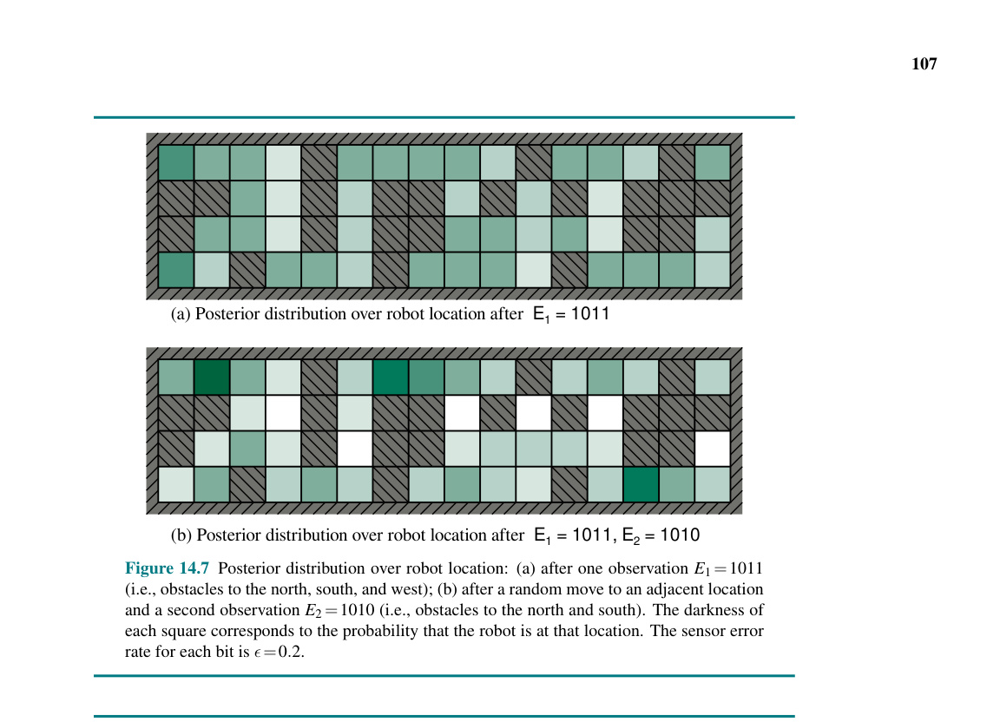
Hình 14.7 (a) Phân phối hậu nghiệm trên vị trí robot sau $\textbf{E}_1 = 1011$ (b) Phân phối hậu nghiệm trên vị trí robot sau $\textbf{E}_1 = 1011, \textbf{E}_2 = 1010$
Hình 14.7 Phân phối hậu nghiệm trên vị trí của robot: (a) sau một quan sát $\textbf{E}_1 = 1011$ (tức là chướng ngại vật ở hướng bắc, nam và tây); (b) sau khi di chuyển ngẫu nhiên tới một vị trí liền kề và một quan sát thứ hai $\textbf{E}_2 = 1010$ (tức là chướng ngại vật ở hướng bắc và nam). Độ đậm màu của mỗi hình vuông tương ứng với xác suất robot đang ở vị trí đó. Tỷ lệ lỗi cảm biến cho mỗi bit là $\epsilon = 0.2$.
Cho trước các ma trận $\textbf{T}$ và $\textbf{O}_t$, robot có thể sử dụng Công thức (14.12) để tính phân phối hậu nghiệm trên các vị trí — tức là, để giải ra nó đang ở đâu. Hình 14.7 cho thấy các phân phối $\textbf{P}(\textbf{X}_1 | \textbf{E}_1 = 1011)$ và $\textbf{P}(\textbf{X}_2 | \textbf{E}_1 = 1011, \textbf{E}_2 = 1010)$. Đây cũng chính là mê cung mà chúng ta đã thấy trước đây trong Hình 4.18 (trang 152), nhưng ở đó chúng ta đã dùng bộ lọc logic (logical filtering) để tìm ra những vị trí có thể xảy ra (possible), giả sử cảm biến hoàn hảo. Cùng những vị trí đó hiện vẫn là có khả năng cao nhất (most likely) với điều kiện cảm biến có nhiễu, nhưng bây giờ mọi vị trí đều mang một lượng xác suất khác 0 nào đó, bởi lẽ mọi vị trí đều có thể tạo ra được bất kỳ giá trị cảm biến nào.
Ngoài việc lọc để ước tính vị trí hiện tại của nó, robot có thể sử dụng làm mượt (Công thức (14.13)) để giải ra xem nó đã từng ở đâu tại bất kỳ thời điểm nào trong quá khứ — ví dụ, nơi nó bắt đầu lúc $t=0$ — và nó có thể dùng thuật toán Viterbi để giải ra con đường có khả năng cao nhất mà nó đã đi để tới chỗ hiện tại. Hình 14.8 cho thấy độ lỗi định vị (localization error) và độ lỗi đường đi Viterbi (Viterbi path error) cho các giá trị khác nhau của tỷ lệ lỗi cảm biến trên mỗi bit $\epsilon$. Thậm chí khi $\epsilon$ là $0.20$ — có nghĩa là đọc số chung của cảm biến là sai trong $59\%$ số thời gian — robot thường vẫn có khả năng giải ra được vị trí của nó sai số trong vòng hai ô vuông sau $20$ quan sát. Điều này là do khả năng của thuật toán cho phép tích hợp các bằng chứng theo thời gian và nhờ việc cân nhắc đến các giới hạn xác suất được đặt lên chuỗi vị trí bởi mô hình chuyển đổi. Khi $\epsilon$ từ $0.10$ trở xuống, robot chỉ cần một vài quan sát để tìm ra nó đang ở đâu và để theo dõi vị trí của nó một cách chính xác. Khi $\epsilon$ bằng $0.40$, cả độ lỗi định vị và độ lỗi đường đi Viterbi vẫn ở mức lớn; nói cách khác, con robot đang bị lạc. Đây là do một cảm biến với xác suất lỗi $0.40$ cung cấp quá ít thông tin để làm đối trọng được với sự mất mát thông tin về vị trí robot bắt nguồn từ các chuyển động ngẫu nhiên không dự đoán trước được.
Biến trạng thái cho ví dụ mà chúng ta vừa xem xét trong phần này là một vị trí vật lý trong thế giới. Những bài toán khác hoàn toàn có thể kết hợp các khía cạnh khác của thế giới. Bài tập 14.ROOM yêu cầu bạn xem xét một phiên bản robot hút bụi có nguyên tắc là sẽ đi thẳng chừng nào nó có thể; chỉ khi chạm phải một chướng ngại vật, nó mới đổi sang hướng đi (heading) mới. Để mô hình robot này, mỗi trạng thái trong mô hình sẽ bao gồm một cặp (vị trí, hướng đi). Đối với môi trường ở Hình 14.7, có 42 ô vuông trống, điều này dẫn tới 168 trạng thái và một ma trận chuyển đổi có $168^2 = 28,224$ phần tử — vẫn là một con số có thể xử lý được.
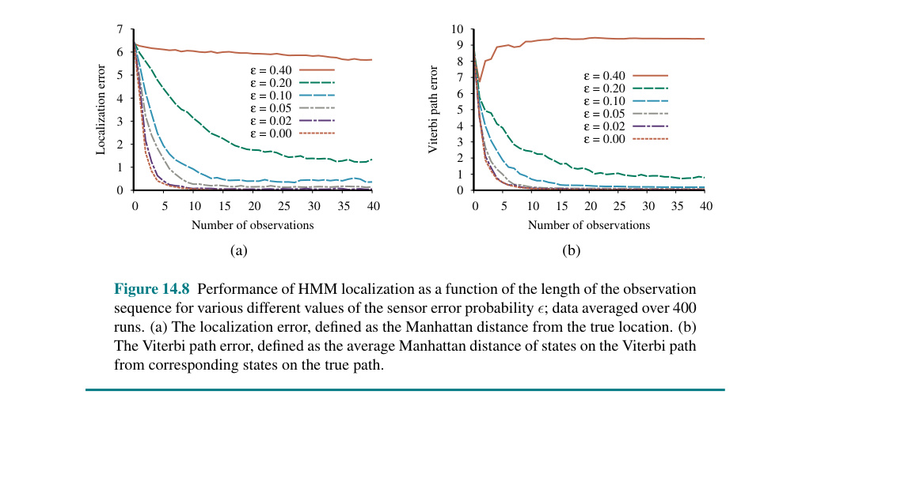
Hình 14.8 (Đồ thị biểu diễn Localization error và Viterbi path error dựa trên Số lượng quan sát đối với các giá trị $\epsilon$ khác nhau: 0.40, 0.20, 0.10, 0.05, 0.02, 0.00)
Hình 14.8 Hiệu suất của tính năng định vị HMM dưới dạng hàm của độ dài chuỗi quan sát đối với các giá trị khác nhau của xác suất lỗi cảm biến $\epsilon$; dữ liệu được lấy trung bình trên 400 lần chạy. (a) Sai số định vị (Localization error), được định nghĩa là khoảng cách Manhattan so với vị trí thực. (b) Sai số đường đi Viterbi (Viterbi path error), được định nghĩa là khoảng cách Manhattan trung bình của các trạng thái trên đường đi Viterbi so với các trạng thái tương ứng trên đường đi thực.
Nếu chúng ta thêm vào khả năng có bụi bẩn trong từng ô vuông trong số 42 ô vuông, số lượng các trạng thái được nhân lên $2^{42}$ và ma trận chuyển đổi có hơn $10^{29}$ phần tử — không còn là một con số có thể xử lý được nữa. Nói chung, nếu trạng thái được kết hợp từ $n$ biến rời rạc, mỗi biến có tối đa $d$ giá trị, thì ma trận chuyển đổi HMM tương ứng sẽ có kích thước $O(d^{2n})$ và thời gian tính toán cập nhật cũng sẽ là $O(d^{2n})$.
Vì những lý do này, mặc dù HMM có nhiều công dụng trong các lĩnh vực từ nhận dạng giọng nói đến sinh học phân tử, nhưng chúng bị giới hạn về cơ bản ở khả năng đại diện cho các quy trình phức tạp. Theo thuật ngữ được giới thiệu trong Chương 2, HMM là một dạng biểu diễn nguyên tử (atomic representation): các trạng thái của thế giới không có cấu trúc nội tại và chỉ đơn giản được gán nhãn bằng các số nguyên. Mục 14.5 chỉ ra cách sử dụng mạng Bayes động — một biểu diễn có hệ số (factored representation) — để mô hình hóa các miền có nhiều biến trạng thái. Mục tiếp theo chỉ ra cách xử lý các miền có các biến trạng thái liên tục, mà tất nhiên sẽ dẫn đến một không gian trạng thái vô hạn.
Hãy tưởng tượng bạn đang quan sát một chú chim nhỏ bay qua những tán lá rậm rạp của khu rừng rậm vào lúc hoàng hôn: bạn nhìn thấy những khoảnh khắc chuyển động vụt qua, ngắt quãng; bạn cố gắng đoán xem con chim đang ở đâu và nó sẽ xuất hiện ở đâu tiếp theo để bạn không bị mất dấu nó. Hay tưởng tượng bạn là một người điều khiển radar trong Thế chiến II, đang căng mắt nhìn một đốm sáng mờ nhạt, đi lạc hướng xuất hiện cứ sau mỗi 10 giây trên màn hình. Hoặc, quay lại xa hơn nữa trong quá khứ, hãy tưởng tượng bạn là Kepler đang cố gắng xây dựng lại chuyển động của các hành tinh từ một tập hợp những quan sát góc rất thiếu chính xác, được thực hiện ở các khoảng thời gian không đều và đo đạc không chuẩn xác.
Trong tất cả các trường hợp này, bạn đang thực hiện công việc lọc (filtering): ước lượng các biến trạng thái (ở đây là vị trí và vận tốc của một vật thể chuyển động) từ các quan sát có nhiễu (noisy observations) theo thời gian. Nếu các biến là rời rạc, chúng ta có thể mô hình hóa hệ thống bằng mô hình Markov ẩn. Mục này xem xét các phương pháp xử lý các biến liên tục, sử dụng một thuật toán được gọi là lọc Kalman (Kalman filtering), theo tên một trong những nhà phát minh ra nó, Rudolf Kalman.
Đường bay của con chim có thể được xác định bằng sáu biến liên tục ở mỗi thời điểm; ba biến cho vị trí $(X_t, Y_t, Z_t)$ và ba biến cho vận tốc $(\dot{X}t, \dot{Y}_t, \dot{Z}_t)$. Chúng ta sẽ cần các hàm mật độ có điều kiện phù hợp để biểu diễn các mô hình chuyển đổi và cảm biến; giống như trong Chương 13, chúng ta sẽ sử dụng các phân phối tuyến tính-Gaussian (linear-Gaussian). Điều này có nghĩa là trạng thái tiếp theo $\textbf{X}{t+1}$ phải là một hàm tuyến tính của trạng thái hiện tại $\textbf{X}t$, cộng với một số nhiễu Gaussian, một điều kiện hóa ra lại khá hợp lý trong thực tế. Ví dụ, hãy xem xét tọa độ X của con chim, tạm bỏ qua các tọa độ khác lúc này. Giả sử khoảng thời gian giữa các lần quan sát là $\Delta$, và giả định vận tốc là không đổi trong suốt khoảng thời gian đó; khi đó vị trí được cập nhật bằng $X{t+\Delta} = X_t + \dot{X}\Delta$. Bằng cách thêm vào nhiễu Gaussian (để tính đến những thay đổi do gió, v.v.), chúng ta thu được mô hình chuyển đổi tuyến tính-Gaussian:
$P(X_{t+\Delta} = x_{t+\Delta} | X_t = x_t, \dot{X}t = \dot{x}_t) = \mathcal{N}(x{t+\Delta}; x_t + \dot{x}_t \Delta, \sigma^2)$.
Cấu trúc mạng Bayes cho một hệ thống có vectơ vị trí $\textbf{X}_t$ và vận tốc $\dot{\textbf{X}}_t$ được thể hiện trong Hình 14.9. Lưu ý rằng đây là một dạng rất cụ thể của mô hình tuyến tính-Gaussian; dạng tổng quát sẽ được mô tả ở phần sau trong mục này và bao quát một phạm vi rộng lớn các ứng dụng vượt ra ngoài những ví dụ đơn giản về chuyển động ở đoạn đầu. Người đọc có thể muốn tham khảo Phụ lục A đối với một số đặc tính toán học của phân phối Gaussian; đối với các mục đích trước mắt của chúng ta, điều quan trọng nhất là một phân phối Gaussian đa biến (multivariate Gaussian) đối với $d$ biến được xác định bởi một giá trị trung bình (mean) gồm $d$ phần tử là $\mu$ và một ma trận hiệp phương sai (covariance matrix) $d \times d$ là $\Sigma$.
Trong Chương 13 ở trang 441, chúng tôi đã đề cập tới một thuộc tính then chốt của họ các phân phối tuyến tính-Gaussian: nó luôn đóng trong phép cập nhật Bayes (Bayesian updating). (Nghĩa là, nếu biết bất kỳ bằng chứng nào, phân phối hậu nghiệm vẫn nằm trong họ phân phối tuyến tính-Gaussian.) Ở đây, chúng tôi cụ thể hóa tuyên bố này trong bối cảnh lọc ở một mô hình xác suất thời gian. Các thuộc tính bắt buộc tương ứng với quá trình lọc hai bước trong Công thức (14.5):
$\textbf{P}(\textbf{X}{t+1} | \textbf{e}{1:t}) = \int_{\textbf{x}t} \textbf{P}(\textbf{X}{t+1} | \textbf{x}t)\textbf{P}(\textbf{x}_t | \textbf{e}{1:t}) d\textbf{x}_t$ (14.17)
cũng là một phân phối Gaussian.
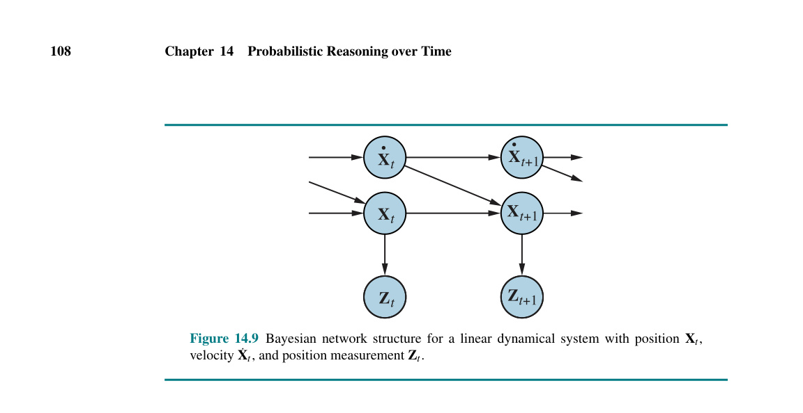
Hình 14.9 ```mermaid graph LR X_dot_t(("Ẋt")) --> X_dot_t_plus_1(("Ẋt+1")) X_dot_t --> X_t_plus_1(("Xt+1")) X_t(("Xt")) --> X_t_plus_1
X_t --> Z_t(("Zt")) X_t_plus_1 --> Z_t_plus_1(("Zt+1"))``` Hình 14.9 Cấu trúc mạng Bayes cho một hệ thống động học tuyến tính với vị trí $\textbf{X}_t$, vận tốc $\dot{\textbf{X}}_t$, và sự đo lường vị trí $\textbf{Z}_t$.
$\textbf{P}(\textbf{X}{t+1} | \textbf{e}{1:t+1}) = \alpha \textbf{P}(\textbf{e}{t+1} | \textbf{X}{t+1})\textbf{P}(\textbf{X}{t+1} | \textbf{e}{1:t})$ (14.18)
cũng là một phân phối Gaussian.
Do đó, toán tử FORWARD đối với bộ lọc Kalman nhận một thông báo chiều thuận dạng Gaussian $\textbf{f}{1:t}$, được xác định bằng một giá trị trung bình $\mu_t$ và hiệp phương sai $\Sigma_t$, và tạo ra một thông báo chiều thuận Gaussian đa biến mới $\textbf{f}{1:t+1}$, được xác định bởi một giá trị trung bình $\mu_{t+1}$ và hiệp phương sai $\Sigma_{t+1}$. Vì vậy, nếu chúng ta bắt đầu bằng một tiên nghiệm dạng Gaussian $\textbf{f}_{1:0} = \textbf{P}(\textbf{X}_0) = \mathcal{N}(\mu_0, \Sigma_0)$, thì quá trình lọc với một mô hình tuyến tính-Gaussian tạo ra một phân phối trạng thái Gaussian mọi thời điểm.
Điều này có vẻ như là một kết quả tốt đẹp và thanh lịch, nhưng tại sao nó lại quan trọng như vậy? Lý do là ngoại trừ một số ít trường hợp đặc biệt như trường hợp này, lọc đối với các mạng liên tục hoặc lai (rời rạc và liên tục) tạo ra các phân phối trạng thái mà biểu diễn của chúng phát triển không có giới hạn theo thời gian. Tuyên bố này thường không dễ để chứng minh, nhưng Bài tập 14.KFSW sẽ cho thấy những gì xảy ra đối với một ví dụ đơn giản.
Chúng tôi đã nói rằng toán tử FORWARD đối với bộ lọc Kalman ánh xạ một Gaussian thành một Gaussian mới. Việc này chuyển đổi thành việc tính toán một giá trị trung bình và hiệp phương sai mới từ giá trị trung bình và hiệp phương sai ở bước trước đó. Việc suy ra quy tắc cập nhật trong trường hợp đa biến tổng quát đòi hỏi phải dùng đến khá nhiều đại số tuyến tính, vì vậy chúng ta sẽ chỉ bám sát vào trường hợp một biến siêu đơn giản vào lúc này, và sau đó đưa ra kết quả cho trường hợp tổng quát. Kể cả đối với trường hợp một biến (univariate), các phép tính cũng hơi tẻ nhạt, nhưng chúng tôi cho rằng chúng đáng để xem vì sự hữu dụng của bộ lọc Kalman gắn bó mật thiết với các đặc tính toán học của phân phối Gaussian.
Mô hình thời gian mà chúng ta xem xét mô tả một bước đi ngẫu nhiên (random walk) của một biến trạng thái liên tục duy nhất $X_t$ cùng một quan sát có nhiễu $Z_t$. Một ví dụ có thể là chỉ số "niềm tin người tiêu dùng", có thể được mô hình hóa là trải qua một sự thay đổi ngẫu nhiên phân bố chuẩn (Gaussian) hàng tháng và được đo lường bằng một cuộc khảo sát ngẫu nhiên với người tiêu dùng mà cuộc khảo sát này lại đưa thêm nhiễu lấy mẫu (sampling noise) dạng Gaussian vào. Phân phối tiên nghiệm được giả định là dạng Gaussian với phương sai $\sigma_0^2$:
$P(x_0) = \alpha e^{-\frac{1}{2}\left(\frac{x_0-\mu_0}{\sigma_0}\right)^2}$.
(Để đơn giản, chúng ta dùng chung một ký hiệu $\alpha$ cho mọi hằng số chuẩn hóa trong phần này.) Mô hình chuyển đổi cộng thêm vào một nhiễu loạn Gaussian có phương sai không đổi $\sigma_x^2$ cho trạng thái hiện tại:
$P(x_{t+1} | x_t) = \alpha e^{-\frac{1}{2}\left(\frac{x_{t+1}-x_t}{\sigma_x}\right)^2}$.
Mô hình cảm biến giả định có nhiễu Gaussian với phương sai $\sigma_z^2$:
$P(z_t | x_t) = \alpha e^{-\frac{1}{2}\left(\frac{z_t-x_t}{\sigma_z}\right)^2}$.
Bây giờ, nếu có được tiên nghiệm $P(\textbf{X}_0)$, phân phối dự đoán trước một bước lấy từ Công thức (14.17):
$P(x_1) = \int_{-\infty}^{\infty} P(x_1 | x_0)P(x_0) dx_0 = \alpha \int_{-\infty}^{\infty} e^{-\frac{1}{2}\left(\frac{x_1-x_0}{\sigma_x}\right)^2} e^{-\frac{1}{2}\left(\frac{x_0-\mu_0}{\sigma_0}\right)^2} dx_0$ $= \alpha \int_{-\infty}^{\infty} e^{-\frac{1}{2}\left( \frac{\sigma_0^2 (x_1-x_0)^2 + \sigma_x^2 (x_0-\mu_0)^2}{\sigma_0^2 \sigma_x^2} \right)} dx_0$.
Tích phân này trông khá là phức tạp. Chìa khóa để tiến triển nằm ở việc chú ý thấy phần số mũ là tổng của hai biểu thức có dạng bậc hai đối với $x_0$ và vì vậy bản thân nó cũng là dạng bậc hai của $x_0$. Một mẹo nhỏ được gọi là điền thêm vào bình phương (completing the square) cho phép viết lại bất kỳ phương trình bậc hai $ax_0^2 + bx_0 + c$ nào dưới dạng tổng của một thành phần bình phương $a(x_0 - \frac{-b}{2a})^2$ và một thành phần dư $c - \frac{b^2}{4a}$ độc lập với $x_0$. Trong trường hợp này, chúng ta có $a = (\sigma_0^2 + \sigma_x^2) / (\sigma_0^2 \sigma_x^2)$, $b = -2(\sigma_0^2 x_1 + \sigma_x^2 \mu_0) / (\sigma_0^2 \sigma_x^2)$, và $c = (\sigma_0^2 x_1^2 + \sigma_x^2 \mu_0^2) / (\sigma_0^2 \sigma_x^2)$. Thành phần dư có thể được đưa ra ngoài tích phân, cung cấp cho chúng ta
$P(x_1) = \alpha e^{-\frac{1}{2}\left( c - \frac{b^2}{4a} \right)} \int_{-\infty}^{\infty} e^{-\frac{1}{2}\left( a(x_0 - \frac{-b}{2a})^2 \right)} dx_0$.
Bây giờ phần tích phân chỉ là tích phân của một hàm Gaussian trên toàn bộ phạm vi của nó, đơn giản bằng 1. Do đó, chúng ta chỉ còn lại số hạng dư từ biểu thức bậc hai. Thay ngược lại các biểu thức của $a$, $b$, và $c$ và làm đơn giản, chúng ta thu được
$P(x_1) = \alpha e^{-\frac{1}{2}\left(\frac{x_1-\mu_0}{\sqrt{\sigma_0^2 + \sigma_x^2}}\right)^2}$.
Tức là, phân phối dự đoán trước một bước là một phân phối Gaussian có cùng giá trị trung bình $\mu_0$ và phương sai bằng tổng của phương sai ban đầu $\sigma_0^2$ và phương sai chuyển đổi $\sigma_x^2$.
Để hoàn thành bước cập nhật, chúng ta cần lấy điều kiện trên quan sát ở bước thời gian đầu tiên, cụ thể là $z_1$. Từ Công thức (14.18), điều này được cho bởi
$P(x_1 | z_1) = \alpha P(z_1 | x_1) P(x_1)$ $= \alpha e^{-\frac{1}{2}\left(\frac{z_1-x_1}{\sigma_z}\right)^2} e^{-\frac{1}{2}\left(\frac{x_1-\mu_0}{\sqrt{\sigma_0^2+\sigma_x^2}}\right)^2}$.
Một lần nữa, chúng ta gom phần số mũ và thực hiện thao tác điền vào bình phương (Bài tập 14.KALM), thu được biểu thức sau cho hậu nghiệm:
$P(x_1 | z_1) = \alpha e^{-\frac{1}{2}\frac{\left(x_1 - \frac{(\sigma_0^2 + \sigma_x^2)z_1 + \sigma_z^2 \mu_0}{\sigma_0^2 + \sigma_x^2 + \sigma_z^2}\right)^2}{(\sigma_0^2 + \sigma_x^2)\sigma_z^2 / (\sigma_0^2 + \sigma_x^2 + \sigma_z^2)}}$. (14.19)
Do đó, sau một chu kỳ cập nhật, chúng ta có một phân phối Gaussian mới cho biến trạng thái.
Từ công thức Gaussian ở (14.19), chúng ta thấy rằng giá trị trung bình và độ lệch chuẩn mới có thể được tính toán từ giá trị trung bình và độ lệch chuẩn cũ như sau:
$\mu_{t+1} = \frac{(\sigma_t^2 + \sigma_x^2)z_{t+1} + \sigma_z^2 \mu_t}{\sigma_t^2 + \sigma_x^2 + \sigma_z^2} \quad \text{và} \quad \sigma_{t+1}^2 = \frac{(\sigma_t^2 + \sigma_x^2)\sigma_z^2}{\sigma_t^2 + \sigma_x^2 + \sigma_z^2}$. (14.20)
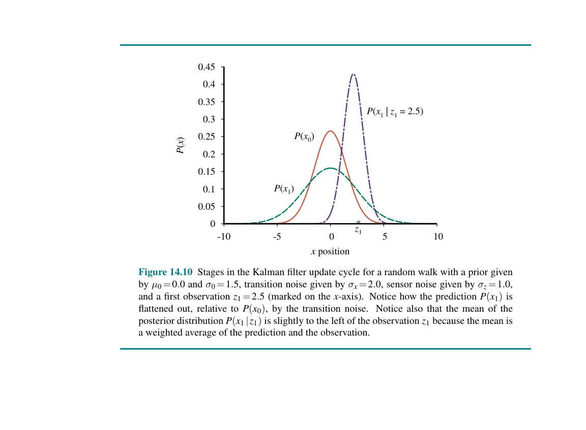
Hình 14.10 (Đồ thị mô tả chu kỳ cập nhật của bộ lọc Kalman) Hình 14.10 Các giai đoạn trong chu kỳ cập nhật của bộ lọc Kalman cho một bước đi ngẫu nhiên với tiên nghiệm được cho bởi $\mu_0=0.0$ và $\sigma_0=1.5$, nhiễu chuyển đổi cho bởi $\sigma_x=2.0$, nhiễu cảm biến cho bởi $\sigma_z=1.0$, và một quan sát đầu tiên $z_1=2.5$ (được đánh dấu trên trục x). Lưu ý cách mà dự đoán $P(x_1)$ bị là phẳng ra (flattened out), liên quan đến $P(x_0)$, do nhiễu chuyển đổi. Đồng thời lưu ý rằng giá trị trung bình của phân phối hậu nghiệm $P(x_1 | z_1)$ nằm hơi về bên trái so với quan sát $z_1$ bởi vì giá trị trung bình đó là trung bình có trọng số của phần dự đoán và phần quan sát.
Hình 14.10 cho thấy một chu kỳ cập nhật của bộ lọc Kalman trong trường hợp một chiều đối với một số giá trị đặc biệt của mô hình chuyển đổi và cảm biến.
Công thức (14.20) đóng vai trò chính xác tương tự như phương trình lọc tổng quát (14.5) hoặc phương trình lọc HMM (14.12). Tuy nhiên, vì bản chất đặc biệt của phân phối Gaussian, các phương trình có một số thuộc tính bổ sung rất thú vị.
Thứ nhất, chúng ta có thể hiểu tính toán đối với giá trị trung bình mới $\mu_{t+1}$ như một trung bình có trọng số (weighted mean) của quan sát mới $z_{t+1}$ và giá trị trung bình cũ $\mu_t$. Nếu quan sát không đáng tin cậy, thì $\sigma_z^2$ sẽ lớn và chúng ta chú ý nhiều hơn đến giá trị trung bình cũ; nếu giá trị trung bình cũ không đáng tin cậy ($\sigma_t^2$ lớn) hoặc quá trình khó đoán cao ($\sigma_x^2$ lớn), thì chúng ta chú ý nhiều hơn đến quan sát.
Thứ hai, hãy chú ý rằng phần cập nhật của phương sai $\sigma_{t+1}^2$ là độc lập với quan sát. Do đó chúng ta có thể tính trước được chuỗi giá trị của phương sai sẽ là như thế nào. Thứ ba, chuỗi các giá trị phương sai nhanh chóng hội tụ về một giá trị cố định chỉ phụ thuộc vào $\sigma_x^2$ và $\sigma_z^2$, do vậy làm đơn giản đáng kể các tính toán tiếp theo. (Xem Bài tập 14.VARI.)
Sự dẫn xuất phần trước minh họa một đặc tính then chốt của các phân phối Gaussian cho phép bộ lọc Kalman hoạt động: một sự thật là phần số mũ là một dạng bậc hai. Điều này đúng không chỉ cho trường hợp một chiều; mà toàn bộ phân phối Gaussian đa chiều sẽ có định dạng
$\mathcal{N}(\textbf{x}; \mu, \Sigma) = \alpha e^{-\frac{1}{2} ( (\textbf{x}-\mu)^\top \Sigma^{-1} (\textbf{x}-\mu) )}$.
Nhân tung các số hạng ở phần số mũ ra, chúng ta thấy rằng phần mũ cũng là một hàm bậc hai đối với các giá trị $x_i$ trong $\textbf{x}$. Do đó, việc lọc sẽ bảo tồn được bản chất Gaussian của phân phối trạng thái.
Trước hết, hãy định nghĩa mô hình thời gian tổng quát được dùng với lọc Kalman. Cả mô hình chuyển đổi và mô hình cảm biến đều được yêu cầu là một phép biến đổi tuyến tính với nhiễu Gaussian cộng vào (additive Gaussian noise). Vì vậy, chúng ta có
$P(\textbf{x}{t+1} | \textbf{x}_t) = \mathcal{N}(\textbf{x}{t+1}; \textbf{F}\textbf{x}_t, \Sigma_x)$ $P(\textbf{z}_t | \textbf{x}_t) = \mathcal{N}(\textbf{z}_t; \textbf{H}\textbf{x}_t, \Sigma_z)$, (14.21)
trong đó $\textbf{F}$ và $\Sigma_x$ là các ma trận mô tả hiệp phương sai nhiễu chuyển đổi và mô hình chuyển đổi tuyến tính, và $\textbf{H}$ cùng $\Sigma_z$ là các ma trận tương ứng cho mô hình cảm biến. Lúc này các phương trình cập nhật cho giá trị trung bình và hiệp phương sai, trong sự đáng sợ nguyên thủy của chúng (full hairy horribleness), là
$\mu_{t+1} = \textbf{F}\mu_t + \textbf{K}{t+1}(\textbf{z}{t+1} - \textbf{H}\textbf{F}\mu_t)$ $\Sigma_{t+1} = (\textbf{I} - \textbf{K}_{t+1}\textbf{H})(\textbf{F}\Sigma_t\textbf{F}^\top + \Sigma_x)$, (14.22)
trong đó $\textbf{K}{t+1} = (\textbf{F}\Sigma_t\textbf{F}^\top + \Sigma_x)\textbf{H}^\top(\textbf{H}(\textbf{F}\Sigma_t\textbf{F}^\top + \Sigma_x)\textbf{H}^\top + \Sigma_z)^{-1}$ là ma trận độ lợi Kalman (Kalman gain matrix). Dù tin hay không, những phương trình này có thể hiểu được theo cách trực quan. Lấy ví dụ, xem xét thành phần cập nhật cho ước lượng trạng thái trung bình $\mu$. Số hạng $\textbf{F}\mu_t$ là trạng thái được dự đoán tại $t+1$, vì vậy $\textbf{H}\textbf{F}\mu_t$ là phần quan sát được dự đoán. Do đó, số hạng $\textbf{z}{t+1} - \textbf{H}\textbf{F}\mu_t$ đại diện cho sai số ở phần quan sát được dự đoán. Giá trị này được nhân với $\textbf{K}{t+1}$ để sửa chữa trạng thái được dự đoán; do đó, $\textbf{K}{t+1}$ là một thước đo của việc cần đánh giá nghiêm túc quan sát mới ra sao so với dự đoán. Cũng như trong Công thức (14.20), chúng ta cũng có đặc tính là cập nhật phương sai độc lập với các quan sát. Vì thế chuỗi giá trị của $\Sigma_t$ và $\textbf{K}_t$ có thể được tính offline (trước khi chạy), và việc tính toán thực tế cần làm trong quá trình tracking trực tuyến là khá khiêm tốn.
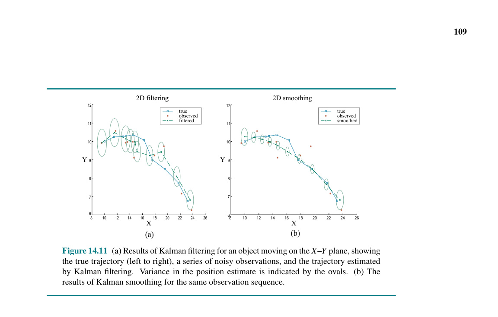
Hình 14.11 (a) 2D filtering (b) 2D smoothing Hình 14.11 (a) Kết quả của quá trình lọc Kalman cho một đối tượng di chuyển trên mặt phẳng X-Y, hiển thị quỹ đạo thực (true trajectory) (từ trái sang phải), một loạt quan sát có nhiễu (noisy observations), và quỹ đạo được ước lượng bởi bộ lọc Kalman. Phương sai trong ước lượng vị trí được thể hiện bằng các hình bầu dục. (b) Các kết quả của làm mượt Kalman cho cùng một chuỗi quan sát.
Để minh họa các phương trình này trong thực tế hoạt động, chúng tôi đã áp dụng chúng cho bài toán theo dõi một vật thể chuyển động trên mặt phẳng X–Y. Các biến trạng thái là $\textbf{X} = (X, Y, \dot{X}, \dot{Y})^\top$, vậy nên $\textbf{F}, \Sigma_x, \textbf{H}$, và $\Sigma_z$ đều là các ma trận $4 \times 4$. Hình 14.11(a) hiển thị quỹ đạo thực, một tập các quan sát có nhiễu, và quỹ đạo được ước lượng bằng cách lọc Kalman, cùng với các hiệp phương sai được biểu thị bằng các đường viền có độ rộng bằng một độ lệch chuẩn. Quá trình lọc làm tốt việc bám theo đường đi thực tế, và đúng như mong đợi, phương sai nhanh chóng đạt tới một mức cố định.
Chúng ta cũng có thể tìm ra các phương trình để làm mượt cũng như lọc đối với các mô hình tuyến tính-Gaussian. Kết quả làm mượt được hiển thị trong Hình 14.11(b). Hãy để ý xem phương sai trong ước lượng vị trí đã giảm thiểu rõ rệt ra sao, ngoại trừ ở các đoạn cuối của quỹ đạo (tại sao?), và quỹ đạo ước tính cũng mượt mà hơn nhiều.
Bộ lọc Kalman và các bản mở rộng của nó được sử dụng trong một loạt các ứng dụng rất rộng lớn. Một ứng dụng "kinh điển" (classical) là định vị trên radar của máy bay và tên lửa. Các ứng dụng liên quan bao gồm theo dõi âm thanh của tàu ngầm và các xe cơ giới di chuyển trên bộ cùng với theo dõi bằng hình ảnh xe cộ và con người. Trong một trường hợp kỳ lạ hơn, bộ lọc Kalman được dùng để xây dựng lại quỹ đạo hạt từ ảnh buồng bọt (bubble-chamber) và các dòng hải lưu dựa trên dữ liệu bề mặt nhận từ vệ tinh. Phạm vi của các ứng dụng này lớn hơn rất nhiều so với việc chỉ theo dõi đường đi của các vật thể: bất kỳ hệ thống nào mang tính chất biến trạng thái liên tục cùng với hệ thống đo có nhiễu đều sẽ phù hợp. Các hệ thống như vậy bao gồm các nhà máy nghiền bột giấy, các nhà máy hóa chất, lò phản ứng hạt nhân, hệ sinh thái thực vật, hay các nền kinh tế quốc gia.
Tuy nhiên, việc bộ lọc Kalman có thể áp dụng cho một hệ thống không có nghĩa là các kết quả thu được sẽ hợp lệ hoặc hữu ích. Những giả định đã được thiết lập — mô hình chuyển đổi và cảm biến ở dạng tuyến tính-Gaussian — là cực kỳ chặt chẽ. Bộ lọc Kalman mở rộng (Extended Kalman filter - EKF) sẽ cố gắng khắc phục những thành phần phi tuyến tính (nonlinearities) của hệ thống đang được mô hình hóa. Một hệ thống là phi tuyến (nonlinear) nếu mô hình chuyển đổi không thể được mô tả bằng việc lấy ma trận nhân với vectơ trạng thái như Công thức (14.21). EKF hoạt động bằng cách xem hệ thống đang được mô hình hóa như là tuyến tính ở phạm vi cục bộ theo $\textbf{x}_t$ xung quanh miền lân cận $\textbf{x}_t = \mu_t$, là trung bình của phân phối trạng thái hiện tại. Việc này vận hành tốt cho các hệ thống mượt mà, diễn tiến tốt và cho phép trình theo dõi (tracker) lưu giữ và nâng cấp phân phối trạng thái là một dạng xấp xỉ hợp lý cho hậu nghiệm thực tế. Chúng tôi có một ví dụ chi tiết trong Chương 26.
Việc một hệ thống được xem là "không mượt" hay "diễn biến kém" (poorly behaved) có nghĩa là gì? Về mặt kỹ thuật, nó đồng nghĩa là sẽ xuất hiện tính phi tuyến đáng kể trong đáp ứng hệ thống nằm trong vùng bị coi là "gần" (theo định nghĩa bởi hiệp phương sai $\Sigma_t$) với mức trung bình hiện tại $\mu_t$. Để hiểu ý tưởng này ở khía cạnh phi kỹ thuật, thử lấy ví dụ về việc muốn bám đuôi con chim đang bay trên cây rừng. Ta trông thấy con chim dường như đang hướng với vận tốc rất nhanh về phía thân của một cái cây. Bộ lọc Kalman (dù loại tiêu chuẩn hay loại mở rộng), cũng chỉ có thể đưa ra một dự đoán định vị Gaussian về chỗ hiện tại con chim sẽ ở đó, và giá trị trung bình sẽ tụ lại xung quanh vị trí của cái thân cây, hiển thị như Hình 14.12(a). Mặt khác, một mô hình ước tính tốt về con chim sẽ báo trước những cú bẻ lái tránh vật cản chệch sang bên này hoặc bên kia, giống Hình 14.12(b). Một mô hình như thế quả là có tính phi tuyến quá cao, lý do vì quyết định chuyển hướng của chim đột ngột đổi khác tùy vào đúng chỗ mà nó đang đứng trong tương quan với thân cây.
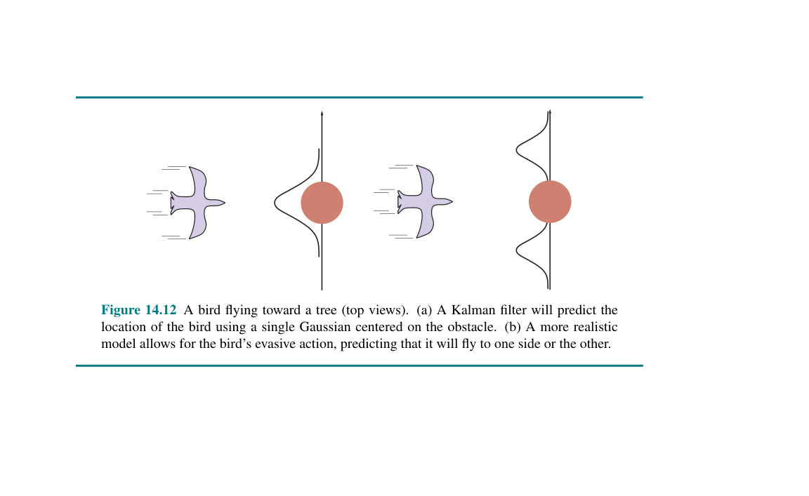
Hình 14.12 (Hình minh họa con chim bay thẳng vào cây và bay né cây) Hình 14.12 Hình nhìn từ trên xuống của một con chim đang bay thẳng vào gốc cây. (a) Bộ lọc Kalman sẽ tính ra một dự đoán vị trí bằng hàm Gaussian hội tụ ở phía trên gốc cây. (b) Có một mô hình thực dụng hơn tính được việc con chim bay né sáng hướng khác (evasive action).
Để xử lý các ví dụ như vậy, rõ ràng chúng ta cần một ngôn ngữ có khả năng diễn đạt tốt hơn để thể hiện hành vi của hệ thống đang được mô hình hóa. Trong cộng đồng lý thuyết điều khiển (control theory), nơi các vấn đề như hoạt động né tránh của máy bay cũng dấy lên cùng những khó khăn trên, giải pháp tiêu chuẩn được đưa ra là bộ lọc Kalman chuyển đổi (switching Kalman filter). Trong cách tiếp cận này, nhiều bộ lọc Kalman sẽ chạy song song, mỗi bộ phận lại sử dụng các mô hình khác nhau — lấy ví dụ, một mô hình cho lúc bay thẳng, một cho bẻ gắt sang phía trái và một nữa khi lạng sang phải. Tổng bình quân có đánh số gia sẽ được xem làm dự đoán, trong đó giá trị gia trọng lại tùy theo mỗi màng lọc thì khớp độ vào những mốc chứng cứ ra sao. Sắp tới ta sẽ cùng xem đó chỉ là trường hợp nhỏ ở mô hình suy luận xác suất động tổng quát khi tăng thêm biến trạng thái “chuyển động” (maneuver) ở cái gốc mạng trình chiếu trên Hình 14.9. Các bộ lọc Kalman chuyển đổi cũng có nhắc lại qua phần Tập bài 14.KFSW.
Mạng Bayes động (Dynamic Bayesian networks), hay DBN, mở rộng ngữ nghĩa của mạng Bayes tiêu chuẩn để có thể xử lý các mô hình xác suất thời gian theo kiểu được mô tả trong Phần 14.1. Chúng ta đã thấy một số ví dụ về DBN: mạng chiếc ô ở Hình 14.2 và mạng lọc Kalman ở Hình 14.9. Về mặt tổng quát, mỗi lát cắt (slice) của một DBN có thể chứa bất kỳ số lượng biến trạng thái $\textbf{X}_t$ và biến bằng chứng $\textbf{E}_t$ nào. Để đơn giản, chúng tôi giả định rằng các biến, các liên kết của chúng và các phân phối có điều kiện của chúng được sao chép chính xác từ lát cắt này sang lát cắt khác và DBN đại diện cho một quá trình Markov bậc một, vì vậy mỗi biến chỉ có thể có cha trong lát cắt riêng của nó hoặc trong lát cắt ngay trước đó. Theo cách này, DBN tương ứng với một mạng Bayes có vô số các biến.
Hẳn phải nói cho rõ rằng mọi mô hình Markov ẩn đều có thể được biểu diễn như một DBN với một biến trạng thái duy nhất và một biến bằng chứng duy nhất. Và cũng đúng là mọi DBN với biến rời rạc đều có thể được biểu diễn như một HMM; như đã giải thích trong Phần 14.3, chúng ta có thể kết hợp tất cả các biến trạng thái trong DBN thành một biến trạng thái duy nhất mà các giá trị của nó là tất cả các tuple có thể có của các giá trị của các biến trạng thái riêng lẻ. Vậy nếu mọi HMM đều là một DBN và mọi DBN đều có thể chuyển thành một HMM, thì điểm khác biệt nằm ở đâu? Điểm khác biệt là, bằng cách phân rã trạng thái của một hệ thống phức tạp thành các biến thành phần cấu thành nó, chúng ta có thể tận dụng lợi thế của tính thưa thớt (sparseness) trong mô hình xác suất thời gian.
Để thấy điều này có ý nghĩa gì trong thực tế, hãy nhớ lại rằng ở Phần 14.3 chúng tôi đã nói rằng một biểu diễn HMM cho một quá trình thời gian gồm $n$ biến rời rạc, mỗi biến có tối đa $d$ giá trị, cần một ma trận chuyển đổi kích thước $O(d^{2n})$. Biểu diễn DBN, mặt khác, có kích thước $O(nd^k)$ nếu số lượng các biến cha của mỗi biến bị giới hạn ở con số $k$. Hay nói cách khác, mô hình hiển thị DBN là kiểu đường tính (linear) thay vì theo hàm mũ (exponential) về số lượng các biến. Lấy ví dụ con robot hút bụi có thể ở một trong 42 ô vuông bẩn hay không bẩn, số lượng các khả năng cần có được giảm thiểu từ cỡ $5 \times 10^{29}$ xuống chỉ còn vài ngàn.
Chúng tôi cũng đã giải thích rằng mọi mô hình lọc Kalman có thể được trình diễn thành mạng DBN có biến liên tục, cùng phân phối dạng thức tuyến tính-Gaussian kết quả (Hình 14.9). Qua bàn bạc ở cuối mục trước, nên chỉ ra là không phải bất kỳ lưới DBN nào cũng là mô hình lọc Kalman cả. Theo mẫu của lưới Kalman thì phân phối kết luận trạng thái luôn là một phép phân phối nhiều chiều thuộc hệ Gaussian — như kiểu hiển thị rõ "cục u" ("bump") trong định vị nhất định vậy. Thế nhưng với DBN thì nó mô phỏng được thành những lưới biến đổi thoải mái, bất định hình (arbitrary).
Đối với rất nhiều ứng dụng thực tiễn thì độ co dãn (flexibility) như này mới làm nên chuyện. Thử nhắm chừng chiếc chìa khóa tôi vứt ở nhà đi. Chiếc chìa này một là nằm ở trong túi, hai ở ngăn kéo bàn, ba là đâu đó bồn bếp nấu ăn, có khi cắm ngay ổ khóa hay quên cất trong xe nữa. Một mô hình tập trung Gaussian hòng tổng kết mấy chỗ đó thì đồng thời phải chia một xác suất khá khá cao về khả năng chiếc khóa đang trôi nổi lửng lơ trên sân trước nhà. Những yếu tố có thật ngoài đời như chủ ý (purposive) có đối tượng, có sự cản và chứa (như cái túi quần) tạo nên các cấu trúc có độ phi tuyến (nonlinearities), bắt buộc trộn thêm những đặc tính cả gián đoạn rời rạc lẫn xuyên suốt theo kiểu biến tuyến để nhận lại một mô phỏng hiệu quả nhất.
Nhằm làm ra cái DBN, người ta sẽ phải điền vào 3 dạng dữ kiện thiết yếu nhất: (a) một bản chỉ số tiên nghiệm tính lên tất cả các biến trạng thái, $\textbf{P}(\textbf{X}0)$; (b) mô hình diễn tiến $\textbf{P}(\textbf{X}{t+1} | \textbf{X}_t)$; (c) mô hình lấy cảm biến $\textbf{P}(\textbf{E}_t | \textbf{X}_t)$. Đặc trưng của cách diễn đạt với những mô hình kể trên là đồng thời thiết kế mô hình đồ thị mạng thể hiện các mối liên kết (connections) nối liền những tầng lát cắt cạnh nhau hay cấu trúc liên hệ nối cảm biến với cái trạng thái ban đầu của hệ thống. Chính vì lẽ tiến trình này (cùng nhận tín hiệu) mang tính giống nhau mọi lúc — một quy luật đối với toàn bộ các cột thời điểm $t$ — dễ nhất sẽ chỉ ghi cái hình mô phỏng cho ở khoảnh khắc số 1 (first slice). Làm một ví dụ thì, sơ đồ miêu tả mạng DBN cho thế giới mang theo ô được làm tròn ngay ba nhánh như Hình 14.13(a). Mặc dù là bắt đầu với chỉ ba cái như vậy nhưng hệ mạng DBN hoàn chỉnh nhất dù lớn, dài, không ranh giới với rất nhiều cột thời gian đều bắt tay vẽ được thông qua chuyện “in thêm” (copy) mẫu của cái đầu ra.
Hãy cùng nghiên cứu thêm ví dụ hay hơn nữa: bài toán về một người máy mang bộ tích pin đi loăng quăng trên vùng tọa độ XY, theo giống đề đã đặt lúc đầu đoạn 14.1. Lúc đầu phải có các thông số biến diễn trạng thái bao hàm đủ của hai cái $\textbf{X}_t = (X_t, Y_t)$ định hình cho phần vị trí và $\dot{\textbf{X}}_t = (\dot{X}_t, \dot{Y}_t)$ đại diện vận tốc di chuyển. Giả thuyết là sẽ phải gắn cái dụng cụ thăm rò lấy mẫu nào đấy — dạng có thêm cái chụp hình bất di bất dịch, hệ thống dẫn hướng GPS (Global Positioning System) — xuất ra thông tin thu $\textbf{Z}_t$. Định hướng nơi nằm theo từng phút giây tiếp sau được đặt vào tương tự ở cái bộ máy Kalman đã nêu. Trạng thái vận tốc cho khoảnh khắc số tiếp thì dính vào lượng tốc độ cũ ngay lúc ấy, cùng lượng dự trữ của hòm năng lượng. Mới thêm vô $\text{Battery}_t$ để nắm giữ trị số khả dụng chuẩn của phần nạp điện, biến dạng này cũng nhận giá trị làm gốc rễ dựa lên kết quả lần sau chót của cả nạp năng lượng lẫn chuyển hướng, tiếp đo bằng $\text{BMeter}_t$, cảm ứng cái cục lưu trữ kia. Cấu trúc tổng hòa thì tựa bộ đồ Hình 14.13(b).
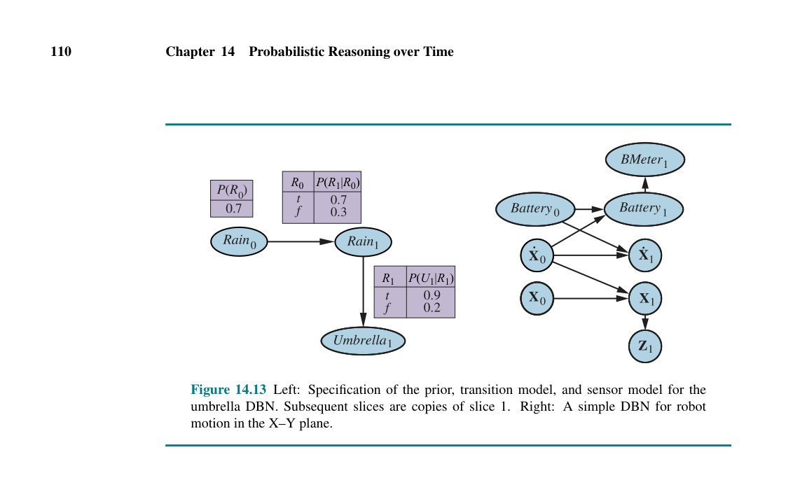
Hình 14.13
mermaid graph LR R0(("Rain0")) --> R1(("Rain1")) R1 --> U1(("Umbrella1"))(Bên cạnh đó là các bảng CPT cho P(R0), P(R1|R0), và P(U1|R1))
mermaid graph LR B0(("Battery0")) --> B1(("Battery1")) X_dot_0(("Ẋ0")) --> B1 X_dot_0 --> X_dot_1(("Ẋ1")) X_dot_0 --> X_1(("X1")) X_0(("X0")) --> X_1 BMBroken0(("BMBroken0")) --> BMBroken1(("BMBroken1")) BMBroken1 --> BMeter1(("BMeter1")) B1 --> BMeter1 X_1 --> Z1(("Z1"))(Hình trên bao gồm 2 phần, bên trái là ví dụ Umbrella, bên phải là DBN cho Robot motion)Hình 14.13 Trái: Đặc tả tiên nghiệm, mô hình chuyển đổi, và mô hình cảm biến cho DBN của chiếc ô. Các lát cắt tiếp theo là bản sao của lát cắt 1. Phải: Một DBN đơn giản cho chuyển động của robot trên mặt phẳng X-Y.
Thật đáng để nhìn nhận sâu hơn vào bản chất mô hình cảm biến của $\text{BMeter}_t$. Cho thuận, cứ nhận là giá trị $\text{Battery}_t$ cùng $\text{BMeter}_t$ đếm nhận mức độ tịnh tiến gián đoạn với thông số theo mức từ 0-5. (Bài 14.BATT thử khơi gợi các bạn tìm cái mẫu biểu nối sang mô hình có hệ đo chạy liên tục). Nều thước đo cực kỳ là chuẩn, kết quả ra bên cột cho biểu mẫu $\textbf{P}(\text{BMeter}_t | \text{Battery}_t)$ đúng chuẩn hiện hết chữ 1.0 (chuẩn chéo “along the diagonal”) và 0.0 theo cái phần dư còn thừa. Ngoài thực tại dĩ nhiên là có rất nhiều thành tố ngoài nhiễu chen vô. Những phép đo ghi chép với thang hệ liên tục thường ráp vào bộ diễn dải loại phân bố có Gaussian cộng cùng khoản chỉ số khác biệt nhỏ chệch nhè nhẹ.$^7$ Qua hệ chỉ số của các số không dính chùm, cách dùng bộ đo kiểu Gaussian biến ra kiểu phân tích xác suất mức bị rơi hay lỡ dở nhịp chạy xuống cực thấp. Ta gọi danh xưng mô hình sai số Gaussian (Gaussian error model) gói ghép mọi cách giải quyết vừa rời mà lại nối nhau liên tiếp như thế.
Ai từng thực thụ có kỹ năng đối mặt cỗ máy, bộ đồ máy, v.v., thì đều có trải qua hiện thực là các phần dôi nhiễu số li ty cũng nhỏ nhẹ và hầu như không gây nhức nhối quá thể. Đồ thu, đọc thật ở cuộc sống có lúc bị đơ (fail). Khi cảm biến bị đơ, nó không hẳn gửi lại mã lệnh chép rõ là, "Nè, thông tin mà tôi gởi sắp tới là đồ bỏ nha". Không hề, nó vẫn tuồn tin hỏng đến y hệt tin thật. Kiểu hỏng máy đơn giản dễ mường tượng nhất thì có cái danh tự hỏng chớp nhoáng (transient failure), đồ nhận tin cứ nhận ngẫu hứng báo tin lằng nhằng rác thải. Thế cho dễ hiểu: chiếc phao của bình năng lượng thi thoảng xẹt số lượng báo cái số 0 ráo trọi ở nhịp có thứ đẩy rầm qua chiếc xe, mặc dù pin đang mức căng tràn nhựa sống đầy bình!
Cùng soi ra việc nếu một cỗ hỏng thoảng phát gặp cái bộ Gaussian không đủ gánh chuyện trên thì thế nào nhỉ. Lại đưa mẫu, robot kia vốn không buồn nhúc nhích rồi hiện qua cái máy đo bình lưu năng lượng đếm số 5 đều cho 20 bận liên hồi. Bỗng chốc, cái đồng hồ ghi cơn "ốm đột ngột" đo được $\text{BMeter}{21} = 0$. Rút cục mô hình đong lỗi dạng Gaussian xui dại suy đoán như nào cho $\text{Battery}{21}$? Nếu tuân đúng cái lề lối Bayes làm cơ sở quy luật, phán định lúc này sẽ đặt lên sức nặng của bảng nhận dạng khả năng $\textbf{P}(\text{BMeter}{21}=0 | \text{Battery}{21})$ cùng vế phần phân tích của $\textbf{P}(\text{Battery}{21} | \text{BMeter}{1:20})$. Khi có lúc mà tỷ lệ lỗi khủng do hệ đo làm hỏng lại có sức nặng lép hơn mức mà cục sạc bất thần cạn thành 0 ($\text{Battery}_{21}=0$), kết quả phần nhận sẽ quy chụp kết luận vào là cái ắc quy đã dứt kiệt điện thật!
Lên lại thêm kết quả chỉ ra ở số lượng = 0 tại $t=22$, khả năng cao lại tiếp nối càng mạnh củng cố kết quả này rành rành. Thế rồi lỗi vụt tan đi lúc số máy nhảy đếm bằng giá trị cũ của 5 kể độ từ nhịp $t=23$ đổ xuôi, sự phán cho vạch pin về thành bình sạc cũ (5). (Điều ấy không dính dáng kiểu hệ thống tưởng thiết bị bỗng được "truyền điện" vô hình như ma thuật; nó giải mã thông số ra thành bình pin xưa giờ chả rỗng chút nào, mà quy chụp thẳng tưng do là thiết bị đọc hỏng quá kinh khủng trong tận hai bận gần nhau). Cái loạt hệ quả miêu tả tại đường cong cao nằm phần trên, từ minh họa Hình 14.14(a), cho ra trung bình giá trị khả dĩ cao nhất (expected value) của $\text{Battery}_t$ qua khoảng thì gian, với bộ đo sai số phân cấp theo hệ mức dứt quãng của Gaussian.
Tuy máy đo đã khỏi thì thực tại của giai đoạn (chỗ $t=22$) thì người máy lại bị nhồi óc rằng nguồn nạp năng lượng ở mức cạn sạch sành sanh; lẽ phải tính thì hẳn ra máy đành réo tiếng cấp báo (mayday signal) đặng xả sập hệ. Cũng đành, cỗ máy móc định lượng (oversimplified sensor model) quá hời hợt đưa đẩy nó trượt theo bờ dốc nhầm lẫn. Bài nhận kết này mộc mạc ra là: hệ thiết bị cần tiếp đón rủi ro cảm ứng đúng quy thì thiết kế đo máy này nhất thiết bao gói lấy kiểu phòng sẵn trường hợp bị hư kia vô.
$^7$ Thực mà nói thì bộ mô hình đo bằng kiểu thức Gaussian mang vài lỗi kỹ thuật vì nó cho vô khả năng bị xác suất thành độ lùi số âm quá chừng lớn cho một trữ năng lượng như chiếc bình lưu điện. Phân bổ Beta (beta distribution) thi thoảng có vẻ ổn áp vì định được miền chạy khép kín chặt.
Kiểu mẫu trục trặc bộ phận thô kệch nhứt trên cảm biến chấp thuận tỷ phần nào đấy thiết bị dở chứng rả lại luôn chuỗi hỏng tanh bành sai lệnh lầm lỗi, dù thế thật ở môi sinh nó ra làm sao cũng chẳng màng. Làm thành cớ, khi đo máy cạn báo trị số 0, thì mình diễn giải là
$P(\text{BMeter}_t=0 | \text{Battery}_t=5) = 0.03$,
chứng cứ rành rành mức tỷ lệ ném hẳn cho kiểu này cao vút gấp đa lần bộ chuẩn đơn của Gaussian. Đặt liền biệt danh mô hình hỏng thoảng qua (transient failure model) đi nha. Nó hỗ trợ cách thức ta ứng xử vớ phải cỗ số là 0 như nào thế? Có thể cứ hằng tính, khi dự đoán xác suất cạn sạch ở bộ lưu bằng mức đếm xưa nay, mang lại độ bé nhiều so cái ngưỡng tỷ trọng rủi ro bằng $0.03$ kia, rốt ráo chứng giải hay nhất (best explanation) trên bằng chứng quan sát $\text{BMeter}_{21}=0$ nọ quy rạp vào kết việc hệ thống hỏng "đơ" tạm thì. Thuận nhĩ mà hiểu ra, ta ráng cảm giác cho bằng niềm tin mức lưu điện có lượng "quán tính đà" (inertia) trợ giúp đánh bay đi những vụ vụt mất mốc đo chớp nhoáng (temporary blips) trên mặt cảm. Đoạn cong nấp cao trên tấm bản ở Hình 14.14(b) vẽ tỏ sức công phá cản vụ chớp lỗi khỏi dắt lối tới cảnh hỏng dây chuyền của tin tưởng trên bộ phận bị báo đơ kia.
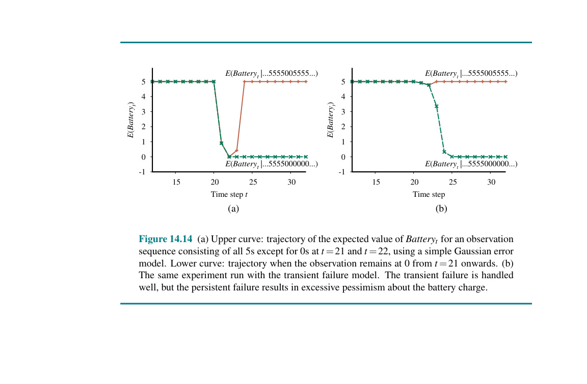
Hình 14.14 (Đồ thị quỹ đạo giá trị E(Battery) qua thời gian)
Hình 14.14 (a) Đường cong trên: Quỹ đạo giá trị kỳ vọng của $Battery_t$ với chuỗi quan sát chứa toàn số 5 ngoại trừ số 0 tại $t=21$ và $t=22$, sử dụng mô hình sai số Gaussian đơn giản. Đường cong dưới: Quỹ đạo khi quan sát giữ nguyên ở số 0 từ $t=21$ trở đi. (b) Cùng một thử nghiệm được chạy với mô hình hỏng thoảng qua (transient failure model). Hiện tượng hỏng thoảng qua được xử lý tốt, nhưng trường hợp hỏng dai dẳng lại dẫn đến tính bi quan quá mức về mức sạc pin.
Quá đủ cho cái lỗi giật chớp. Thế còn dạng lỗi hỏng hóc lỳ lợm (persistent sensor failure) thì tính sao đây? Thảm thay, các trục trặc dạng này luôn có vẻ gặp ở muôn nơi thật. Với cái đầu cảm cứ nhả 20 đợt chuỗi bằng 5 mà rập đè phía cuối tràng dài cũng gồm đúng 20 bộ giá báo số 0, thì dạng máy hỏng tạm thoảng trỏ như đoạn trước sẽ dắt dây khiến robot ngấm ngầm cho là phần bình đã thực sự về cái rỗng trơn mặc việc có khi bộ đếm đo lại là thủ phạm hư thật. Khúc nhịp đường gạch cong tuột dốc lượn về phía bến bờ âm u qua trong tấm Hình 14.14(b) phô ra "lộ trình" của mớ thông tư hệ tin ở cái sự trên. Đi tới $t=25$ — chặng 5 cú nạp trị số bằng 0 liên tiếp — hệ cỗ bị đả thông đầu bộ rằng phần trữ sạc dốc trụi rồi đấy. Có bề gì cũng đành tính nếu không thì rành rành cỗ robot thích có lòng tin là đầu đồng hồ đang báo lỗi đơ rồi hơn — đặc biệt nế cái vụ hư nọ tỷ phần lại chực xảy tới lấn lướt hơn.
Chẳng phải là khó hiểu gì nữa, nhằm bắt lỗi trường kỳ lỳ (persistent failure), ta cần rinh về cái bảng mô hình lỗi bền (persistent failure model) biểu diễn đầu máy đo này vần chuyển ra mặt nào mỗi lần có rủi cũng như đang dịp bình yên vô sự. Phải độ thêm để phình bự cấu biến bằng biến ngoại gắn kế, dán tiếng như là $\text{BMBroken}$, định chỉ sự thể thực cho nguyên trạng đong đếm máy pin lúc đó. Tính dền dai cố lỳ ở chuyện xôi hỏng bỏng không trên buộc phải đắp nên một mắt đồ cầu vòng (persistence arc) đi kèm biến $\text{BMBroken}_0$ quy chiếu qua $\text{BMBroken}_1$. Quai nối dạng bền đó có thêm bảng độ ngẫu suất khá bé bỏng đánh tính trên lỗi gộp bất thường ở cữ rải rác từng khoảnh nhỏ, ném vào 0.001 đi, cơ mà cũng trói lại rằng đo đã có trục trặc chập đứt thì chỉ có hỏng mãi không ngơi (sensor stays broken once it breaks). Hồi mạch đo máy bình trơn chu mượt (OK), mẫu kết xuất $\text{BMeter}$ thì trùng hệt rập phôi mẫu hư thi thoảng; nhưng khi gãy nứt rã rời rồi, đo báo số $\text{BMeter}$ chỉ trả lại mốc không (0), dầu cho dung điện mang ra còn nạp đầy.
Bản mẫu lỗi nhây dành riêng cỗ đầu dò đã khoe rõ nằm ở Hình 14.15(a). Đánh bật năng xuất gánh lấy đôi cụm kết cấu dãy dữ liệu (cú vụt thoáng (temporary blip) đối lập loại trục trặc thâm niên (persistent failure)) tỏ lộ bằng cái Hình 14.15(b). Vài chỗ đáng lưu tâm hiện ngay đường đồ cong lượn này. Chỗ này nhìn ở cú sốt chớp (blip), rủi báo mức rớt đo bỗng độn mạnh trỗi lên tấp tắp liền ở cái mốc giá bằng 0 đợt hai, nều nều thoái lùi cúp nhào ở mốc 0 khi đo thảy gặp số bằng 5 (5 is observed). Sự kế tiếp, ngay cái lúc lỗi chập thành hỏng đứt nối hẳn, nấc khả năng ở đầu dò cúp điện ngóc tuốt nhanh vượt vút 1 và bám vị giữ cứng cỏi ở mốc nọ. Phút kết đọng cuối, khi nhỡ có hỏng trên mặt cảm thì chắc rồi, robot cũng gạt hết coi bình lượng tụ xả điện ở mức hằng vạch “thông thường” mà thôi. Khéo mà thể hiện như đường giật đều đặn thụt lún hạ bậc bằng $E(\text{Battery}_t | \dots)$.
Đến tận giờ phút này, chúng ta cũng mới chỉ làm trầy xước bề mặt của vấn đề biểu diễn các quá trình phức tạp. Sự phong phú của các mô hình chuyển đổi là vô cùng lớn, bao hàm những chủ đề khác biệt như mô hình hóa hệ thống nội tiết của con người cho đến mô hình hóa nhiều phương tiện đang chạy trên xa lộ. Bản thân việc mô hình hóa cảm biến cũng là một tiểu ngành (subfield) cực rộng. Nhưng các mạng Bayes động hoàn toàn có thể lập mô hình ngay cả đối với những hiện tượng tinh tế nhất, ví dụ như trôi dạt cảm biến (sensor drift), lệch chuẩn đột ngột (sudden decalibration), và tác động từ điều kiện ngoại sinh (chẳng hạn như thời tiết) lên kết quả đọc cảm biến.
Sau khi phác thảo một số ý tưởng để biểu diễn các quá trình phức tạp dưới dạng DBN, giờ chúng ta chuyển sang vấn đề suy luận. Ở một góc độ nào đó, câu hỏi này đã được trả lời: mạng Bayes động thực chất chính là mạng Bayes, và chúng ta vốn đã có các thuật toán suy luận cho mạng Bayes rồi. Với một chuỗi các quan sát, ta có thể xây dựng đầy đủ một biểu diễn mạng Bayes cho một DBN bằng cách sao chép các lát cắt cho đến khi mạng đủ lớn để chứa các quan sát, như ở Hình 14.16. Kỹ thuật này được gọi là mở cuộn (unrolling). (Về mặt kỹ thuật, DBN tương đương với mạng bán vô hạn (semi-infinite network) thu được bằng cách mở cuộn mãi mãi. Các lát cắt được thêm vào vượt quá quan sát cuối cùng không có tác dụng lên các suy luận trong giai đoạn quan sát và có thể bị bỏ đi.) Khi DBN đã được mở cuộn, người ta có thể áp dụng bất kỳ thuật toán suy luận nào — loại bỏ biến, các phương pháp phân cụm, v.v. — được mô tả ở Chương 13.
Đáng tiếc thay, cách ứng dụng việc mở cuộn một cách ngây thơ sẽ không mấy hiệu quả. Nếu chúng ta muốn thực hiện lọc hoặc làm mượt trên một chuỗi các quan sát kéo dài $\textbf{e}_{1:t}$, một mạng lưới mở cuộn sẽ đòi hỏi bộ nhớ lưu trữ cỡ $O(t)$ và do đó sẽ phình to không giới hạn khi số lượng quan sát tăng lên. Hơn nữa, nếu chúng ta cứ việc chạy lại thuật toán suy luận mỗi khi thêm vào một quan sát, thì thời gian suy luận trên mỗi lần cập nhật cũng sẽ bị dội lên thành $O(t)$.
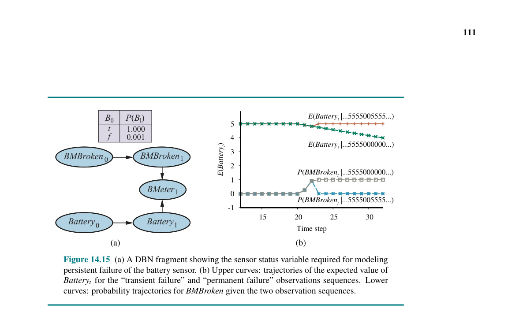
Hình 14.15 (Cấu trúc DBN persistence arc và biểu đồ probability trajectories)
Hình 14.15 (a) Một đoạn DBN mô tả biến trạng thái của cảm biến cần thiết cho việc mô hình hóa lỗi dai dẳng của cảm biến mức pin. (b) Các đường cong bên trên: quỹ đạo giá trị kỳ vọng của $\text{Battery}_t$ cho các chuỗi quan sát "lỗi thoảng qua" và "lỗi vĩnh viễn". Các đường cong bên dưới: quỹ đạo xác suất đối với biến trạng thái hỏng $\text{BMBroken}$ (viết tắt của Battery Meter Broken) trong điều kiện của hai chuỗi quan sát.
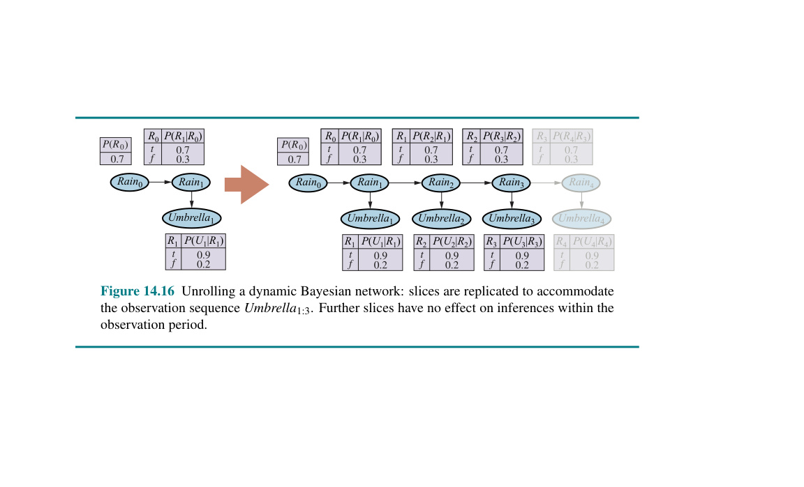
Hình 14.16 ```mermaid graph LR R0(("Rain0")) --> R1(("Rain1")) R1 --> U1(("Umbrella1"))
R0_2(("Rain0")) --> R1_2(("Rain1")) R1_2 --> U1_2(("Umbrella1")) R1_2 --> R2(("Rain2")) R2 --> U2(("Umbrella2")) R2 --> R3(("Rain3")) R3 --> U3(("Umbrella3")) R3 -.-> R4(("Rain4")) R4 -.-> U4(("Umbrella4")) style R4 opacity:0.3; style U4 opacity:0.3;``` (Hình minh họa quá trình mở cuộn mạng Bayes)
Hình 14.16 Mở cuộn một mạng Bayes động: các lát cắt được nhân bản lên để đáp ứng chuỗi quan sát $\text{Umbrella}_{1:3}$. Những lát cắt thêm vào sau đó không có hiệu lực lên các suy luận bên trong chu kỳ quan sát.
Nhìn lại Phần 14.2.1, chúng ta thấy thời gian và không gian không đổi trên mỗi lần cập nhật lọc có thể đạt được nếu phép tính có thể thực hiện theo quy tắc đệ quy. Về cơ bản, phép cập nhật lọc trong Công thức (14.5) làm việc bằng cách tính tổng loại bỏ (summing out) các biến trạng thái ở bước thời gian trước đó để ra được phân phối của bước thời gian mới. Loại bỏ biến cũng chính là những gì mà thuật toán loại bỏ biến (variable elimination) (Hình 13.13) làm, và hóa ra là việc chạy thuật toán loại bỏ biến với các biến theo thứ tự thời gian bắt chước y hệt hoạt động của phép cập nhật lọc đệ quy trong Công thức (14.5). Thuật toán sửa đổi này chỉ giữ tối đa hai lát cắt trong bộ nhớ cùng một lúc: bắt đầu với lát cắt 0, chúng ta thêm lát cắt 1, sau đó tổng khử lát cắt 0, rồi lại thêm lát cắt 2, tổng khử lát cắt 1, v.v. Theo cách đó, chúng ta có thể đạt tới được một mức không gian và thời gian tiêu thụ không đổi trên một cập nhật bộ lọc. (Sự tối ưu hóa ngang bằng cũng có thể thu được với những cập nhật thích đáng khác bằng thuật toán phân nhóm cụm/clustering). Lời bài tập 14.DBNE thử đòi hỏi giải để nhận ra tính thật giả của những chứng cớ này ở mô hình lưới cho đồ vật về chiếc ô.
Cũng nhiều thông tin khấp khởi tốt cho đến đây thôi; giờ là loạt điều gây mất hứng: Chuyện rằng “sự bảo chứng bất biến” (constant) theo nhịp nâng thông số bộ lớn rộng là, gần trọn cho các ca, nó đội kích lũy thừa tính lên cái phần hằng hà sa các cái thành phần dạng trạng thái. Điều gì có chửa trong thời gian những bộ phần tử trạng thái (state variables) bị dọn khử là, đống các số hiệu dội to bành trướng đặng kìm ép lấy nguyên loạt lượng biến trạng thái (thực chép cho cặn kẽ là toàn số biến số được móc nhận qua phần tử đấng “cha/mẹ” nơi mốc lát ngay kề đằng trước). Kích mức cho tham số to vượt bến $O(d^{n+k})$ kéo dây ra phí tính cho riêng thời điểm trôi tọt giá trần cỡ $O(n d^{n+k})$, theo là $d$ là mức diện kích bộ đồ số (domain size) đi cạnh hàng loạt lượng giá của bộ biến với $k$ chính tại kỉ lục bự nứt với thành tố “cha/mẹ” với riêng rẽ những hạt phần trạng thái nọ.
Được rồi, đành rằng nó đã rất rất ít kinh phí cho việc đi nhẩm HMM bằng chặng nạp, với khoản tính toán ngót $O(d^{2n})$, cơ mà còn khướt mới kham với cái sức tải chứa khổng lồ bao rầm đám lớn hàng tỷ biến. Điều tang thương vạch ra cái trần u tối này ấy là mặc kệ chúng mình cầm đến con bài siêu nạp bộ DBN nhằm tháo vắt cái cuộn chéo của hằng hà thứ chu trình (processes) ngập đầu phức hợp xen lẫn đống rác các biến vương rải rác mà ngó bộ chả móc ngoặc chặt gì với nhau (sparsely connected), thì cũng không thể nào lôi trí để mà biện giải (reason) cái hiệu năng chính chuẩn xác trên những guồng chuỗi ấy được đâu. Chỗ bộ khung kiểu DBN nọ, tự dạng hình là đã đóng cọc gài sự mô tả phần kết bầy ngẫu nhiên phân xác gốc trước (prior joint distribution) trên mớ đủ loại dạng biến, là chẻ bóp rã tơi nổi theo tập bộ CPT (thành phần nhỏ của riêng), tuy vậy lúc nói mặt mô phân dạng (posterior joint distribution) bóp theo kiện cho chuỗi chép dấu vết đo lường — hệt thông tư chiều tới — là nói tới món bó tay (not factorable) không hề bóc xẻ nổi. Dạng vấn nạn lầy bựa dường kia gọi là phi giải (intractable), đành thế, bớt ảo tưởng lại ngó nghiêng lùi về dạng phương thức xấp xỉ (approximate methods) cho lành.
Mục 13.4 đã mô tả hai thuật toán xấp xỉ: lấy mẫu đánh trọng số hợp lý (likelihood weighting, Hình 13.18) và Markov chain Monte Carlo (MCMC, Hình 13.20). Trong hai loại này, cái đầu tiên dễ thích ứng nhất với bối cảnh của DBN. (Một thuật toán lọc MCMC được mô tả vắn tắt ở phần ghi chú cuối chương này.) Tuy nhiên, chúng ta sẽ thấy rằng cần có một số cải tiến đối với thuật toán đánh trọng số hợp lý tiêu chuẩn trước khi một phương pháp thực tế xuất hiện.
Hãy nhớ lại rằng phương pháp đánh trọng số hợp lý hoạt động bằng cách lấy mẫu các nút không chứa bằng chứng của mạng theo thứ tự tô-pô, gán trọng số cho mỗi mẫu dựa trên likelihood mà nó khớp với các biến bằng chứng đã quan sát. Tương tự như với các thuật toán chính xác, chúng ta có thể áp dụng phương pháp đánh trọng số hợp lý trực tiếp vào một DBN đã được mở cuộn, nhưng điều này sẽ gặp phải cùng những vấn đề về sự gia tăng không gian và thời gian cho mỗi lần cập nhật khi chuỗi quan sát ngày càng dài. Vấn đề nằm ở chỗ thuật toán tiêu chuẩn chạy từng mẫu theo lượt, đi hết cả hệ thống mạng.
Thay vào đó, chúng ta có thể đơn giản chạy toàn bộ $N$ mẫu cùng nhau qua DBN, theo từng lát cắt một. Thuật toán đã sửa đổi này hoàn toàn phù hợp với dạng thức chung của các thuật toán lọc, với bộ $N$ mẫu đóng vai trò là thông báo chiều thuận. Sự đổi mới quan trọng đầu tiên ở đây là sử dụng chính bản thân các mẫu như một biểu diễn xấp xỉ cho phân phối trạng thái hiện tại. Điều này đáp ứng yêu cầu về "hằng số" thời gian cho mỗi lần cập nhật, mặc dù bản thân hằng số này phụ thuộc vào số lượng mẫu cần thiết để duy trì sự xấp xỉ chính xác. Nó cũng không cần phải mở cuộn DBN, bởi vì chúng ta chỉ cần lưu trong bộ nhớ lát cắt hiện tại và lát cắt tiếp theo. Phương pháp này được gọi là lấy mẫu tầm quan trọng tuần tự (sequential importance sampling) hay SIS.
Trong cuộc thảo luận về phương pháp đánh trọng số hợp lý ở Chương 13, chúng tôi đã chỉ ra rằng độ chính xác của thuật toán bị giảm sút nếu các biến bằng chứng nằm ở "hạ lưu" so với các biến được lấy mẫu, bởi vì trong trường hợp đó các mẫu được tạo ra mà không có bất kỳ tác động nào từ bằng chứng và hầu như toàn bộ sẽ có trọng số rất thấp.
Bây giờ nếu nhìn vào cấu trúc điển hình của một DBN — ví dụ, DBN chiếc ô trong Hình 14.16 — chúng ta thấy rằng thực chất các biến trạng thái ở giai đoạn sớm sẽ được lấy mẫu mà không có sự hưởng lợi từ bằng chứng ở giai đoạn sau. Thực tế, nếu nhìn cẩn thận hơn, ta thấy rằng không có biến trạng thái nào có chứa biến bằng chứng nằm trong số các tổ tiên (ancestors) của nó cả! Do đó, mặc dù trọng số của mỗi mẫu sẽ phụ thuộc vào bằng chứng, bản thân các mẫu được sinh ra lại hoàn toàn độc lập với bằng chứng. Ví dụ, ngay cả khi sếp mang ô đi làm mỗi ngày, quá trình lấy mẫu có thể vẫn cứ "ảo giác" (hallucinate) ra những chuỗi ngày đầy nắng dài vô tận.
Về mặt thực tế, điều này có nghĩa là tỷ lệ các mẫu còn nằm ở mức khá sát với loạt sự kiện thực tế (và do đó có trọng số đáng kể) sẽ tụt dốc thê thảm theo cấp số mũ với $t$, độ dài của chuỗi. Nói cách khác, để duy trì cùng một cấp độ chính xác, chúng ta cần phải tăng số lượng mẫu theo cấp số mũ với $t$. Với việc một thuật toán lọc thời gian thực chỉ có thể dùng một số lượng mẫu bị giới hạn, thì điều xảy ra ở đời thực là sai số sẽ bùng nổ chỉ sau một con số nhỏ xíu các bước cập nhật. Hình 14.19 ở trang 512 biểu thị tác động này cho thuật toán SIS áp dụng vào bài toán định vị lưới ô (grid-world) ở Phần 14.3: dù có cấp tới 100,000 mẫu đi nữa, xấp xỉ SIS vẫn thất bại toàn tập sau tầm độ 20 bước.
Rõ ràng, chúng ta cần một giải pháp tốt hơn. Sáng kiến then chốt thứ hai chính là tập trung bộ các mẫu vào những vùng có xác suất cao của không gian trạng thái. Có thể làm điều này bằng cách gạt bỏ những mẫu có trọng số quá thấp (dựa trên thông số nhận từ các quan sát), đồng thời nhân bản các mẫu có trọng số cao. Bằng cách đó, quần thể mẫu sẽ có xu hướng bám khá sát vào thực tại. Nếu chúng ta xem mẫu như một loại tài nguyên để mô phỏng phân phối hậu nghiệm, thì hoàn toàn hợp lý khi sử dụng nhiều mẫu hơn vào các khu vực của không gian trạng thái nơi hậu nghiệm có tỷ lệ cao hơn.
Lọc hạt (Particle filtering) là tên gọi cho một nhóm thuật toán sinh ra nhằm hiện thực hóa điều đó. (Một tên gọi khác thuở ban đầu là lấy mẫu tầm quan trọng tuần tự có chọn lại mẫu (sequential importance sampling with resampling), nhưng không hiểu sao nó lại chẳng mấy phổ biến). Lọc hạt làm việc theo cách sau: Đầu tiên, chúng ta khởi tạo một "quần thể" gồm $N$ mẫu từ phân phối tiên nghiệm $\textbf{P}(\textbf{X}_0)$. Kế đó, chu kỳ cập nhật được lặp lại cho mỗi bước thời gian:
Thuật toán được nêu chi tiết ở Hình 14.17, và sự hoạt động của nó áp dụng cho DBN chiếc ô được trình bày ở Hình 14.18.
Chúng ta có thể chỉ ra rằng thuật toán này mang tính nhất quán (consistent) — tạo ra các xác suất chính xác khi $N$ dần tiến tới vô cực — bằng cách khảo sát các khâu thao tác ở một chu kỳ cập nhật. Chúng ta tựa vào giả thiết quần thể mẫu có một trình bày đúng chuẩn từ trước cho thông báo chiều thuận — có nghĩa là $\textbf{f}{1:t} = \textbf{P}(\textbf{X}_t | \textbf{e}{1:t})$ tại thời điểm $t$. Lấy ký hiệu $N(\textbf{x}t | \textbf{e}{1:t})$ là con số chỉ lượng tập mẫu nắm đoạt giá trị $\textbf{x}t$ sau khi các bằng chứng $\textbf{e}{1:t}$ đã kinh qua khâu duyệt, thế thì ta thu được
$N(\textbf{x}t | \textbf{e}{1:t})/N = P(\textbf{x}t | \textbf{e}{1:t})$ (14.23)
đối với $N$ rất lớn. Giờ thì ta chắp cánh đẩy mỗi hạt về trước qua phép lấy mẫu những trạng thái tại $t+1$, cho mỗi kết quả lấy từ mẫu đó ở mốc $t$. Sỉ số toàn tập hợp mẫu đến mốc $\textbf{x}{t+1}$ lấy ở ngọn $\textbf{x}_t$ là tích xác suất diễn tiến cùng với kích thước quần chúng tại $\textbf{x}_t$; do đó, tổn kết lượng tập mẫu đổ bộ tại $\textbf{x}{t+1}$ hóa thành
$N(\textbf{x}{t+1} | \textbf{e}{1:t}) = \sum_{\textbf{x}t} \textbf{P}(\textbf{x}{t+1} | \textbf{x}t)N(\textbf{x}_t | \textbf{e}{1:t})$.
Giờ đánh cân lượng nặng nhẹ vô từng cái bằng số likelihood từ chứng cứ $\textbf{e}{t+1}$. Mỗi bản $\textbf{x}{t+1}$ ẵm số trọng lượng $P(\textbf{e}{t+1} | \textbf{x}{t+1})$. Trị số gánh tổng của đống mẫu ở $\textbf{x}{t+1}$ sau chặng chạm qua $\textbf{e}{t+1}$ nắn theo là
$W(\textbf{x}{t+1} | \textbf{e}{1:t+1}) = P(\textbf{e}{t+1} | \textbf{x}{t+1})N(\textbf{x}{t+1} | \textbf{e}{1:t})$.
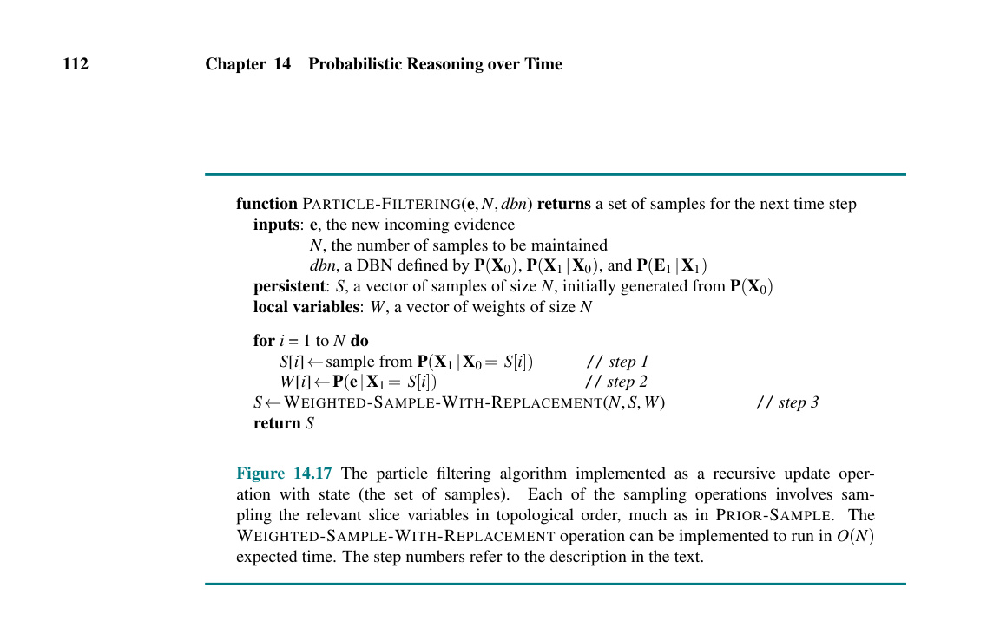
Hình 14.17 function PARTICLE-FILTERING($\textbf{e}, N, dbn$) returns một bộ mẫu cho bước thời gian tiếp theo inputs: $\textbf{e}$, bằng chứng thu nhận được ở bước mới $N$, số lượng mẫu sẽ duy trì $dbn$, một DBN xác định bởi $\textbf{P}(\textbf{X}_0), \textbf{P}(\textbf{X}_1 | \textbf{X}_0)$, và $\textbf{P}(\textbf{E}_1 | \textbf{X}_1)$ persistent: $S$, một vectơ chứa các mẫu có kích thước $N$, ban đầu tạo bằng $\textbf{P}(\textbf{X}_0)$ local variables: $W$, một vectơ chứa các trọng số có kích thước $N$
for $i = 1$ to $N$ do $S[i] \leftarrow$ lấy mẫu từ $\textbf{P}(\textbf{X}_1 | \textbf{X}_0 = S[i])$ // bước 1 $W[i] \leftarrow \textbf{P}(\textbf{e} | \textbf{X}_1 = S[i])$ // bước 2 $S \leftarrow \text{WEIGHTED-SAMPLE-WITH-REPLACEMENT}(N, S, W)$ // bước 3 return $S$
Hình 14.17 Thuật toán lọc hạt được hiện thực hóa dưới dạng thao tác cập nhật đệ quy trên một trạng thái (bộ các mẫu). Mỗi thao tác lấy mẫu đều đòi hỏi phải lấy mẫu các biến cho lát cắt liên quan theo trình tự tô-pô, tương đối giống ở thuật toán PRIOR-SAMPLE. Khâu thao tác WEIGHTED-SAMPLE-WITH-REPLACEMENT có thể được tinh chỉnh để thực hiện với chi phí dự kiến mất tầm $O(N)$. Các con số báo danh cho các bước đều quy dẫn theo phần mô tả từ bộ văn bản.
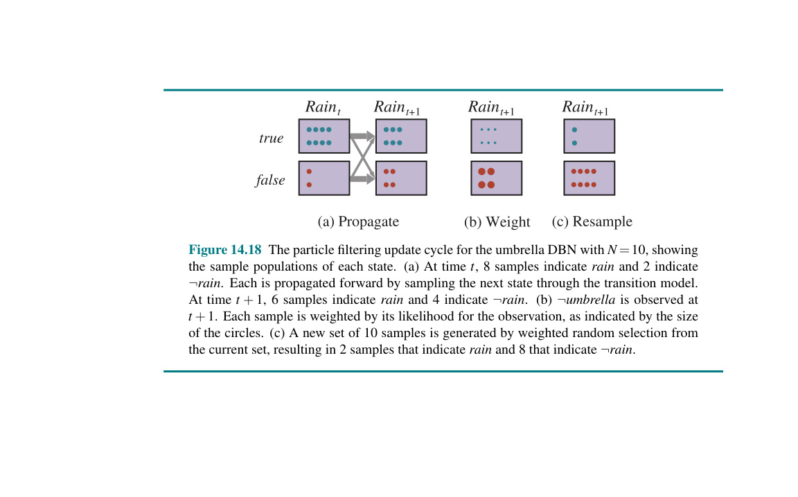
Hình 14.18 (Hình minh họa quá trình: (a) Propagate (b) Weight (c) Resample)
Hình 14.18 Vòng cập nhật lọc hạt với DBN chiếc ô với con số $N=10$, biểu thị đại chúng mẫu cho từng trạng thái riêng biệt. (a) Tại $t$, 8 mẫu báo mốc mưa ($rain$) và 2 báo cho $¬rain$. Dòng mẫu sẽ truyền về trước do phép lấy mẫu cho chu kỳ nọ nhờ ở cỗ diễn tiếp mẫu. Khoảng thời không $t+1$, 6 mẫu vạch mốc mưa $rain$ cùng 4 trỏ cái $¬rain$. (b) Kém xuất hiện ô ($¬umbrella$) đập vào $t+1$. Từng mẩu nhỏ lấy phần độ lồi theo tính khả quan cho đợt gặp, nhận hình biểu kích vòng khoanh to nhỏ. (c) Gói bộ nạp mẫu đắp lên bởi trò lựa bốc hên xui dựa trên lằn ranh mức trọng lượng tự bộ đương ở, trả về 2 cục chứa lượng cho mưa ($rain$) với lại 8 nhăm nhe cái $¬rain$.
Giờ đến bước chọn lại mẫu. Lấy bởi việc một mẩu nào cũng bị tách y chang với độ bằng phần tỷ khối mà nó ẵm, dung kích lượng mẫu đổ tới $\textbf{x}{t+1}$ khi trải thao tác đúc lại sẽ tỷ lệ trọn theo đống sức lồi (weight) trong $\textbf{x}{t+1}$ trước cái nhịp nặn ấy:
$N(\textbf{x}{t+1} | \textbf{e}{1:t+1})/N = \alpha W(\textbf{x}{t+1} | \textbf{e}{1:t+1})$ $= \alpha P(\textbf{e}{t+1} | \textbf{x}{t+1})N(\textbf{x}{t+1} | \textbf{e}{1:t})$ $= \alpha P(\textbf{e}{t+1} | \textbf{x}{t+1}) \sum_{\textbf{x}t} \textbf{P}(\textbf{x}{t+1} | \textbf{x}t)N(\textbf{x}_t | \textbf{e}{1:t})$ $= \alpha N P(\textbf{e}{t+1} | \textbf{x}{t+1}) \sum_{\textbf{x}t} \textbf{P}(\textbf{x}{t+1} | \textbf{x}t)P(\textbf{x}_t | \textbf{e}{1:t})$ (theo 14.23) $= \alpha' P(\textbf{e}{t+1} | \textbf{x}{t+1}) \sum_{\textbf{x}t} \textbf{P}(\textbf{x}{t+1} | \textbf{x}t)P(\textbf{x}_t | \textbf{e}{1:t})$ $= P(\textbf{x}{t+1} | \textbf{e}{1:t+1})$ (theo 14.5).
Thế cho nên, tập thể quần chúng thu dọn qua xong xuôi cái tua một bước đổi lặp, nó bày lộ ngay một minh họa trúng phóc cái mạch dữ tin dạng lao đầu (forward) cho kỳ bước $t+1$.
Lọc hạt chắc ăn là loại nhất quán rồi đó, cơ nhưng liệu có hiệu năng (efficient)? Bám rễ theo đa số chuyện ngoài đời thực tiễn, có nét thì lời báo lại rằng vâng: trò lọc hạt kia mang hơi hướng giữ thăng khá dẻo dai một tỷ lệ tiệm cận với trị độ chót gốc dẫu số mẩu không xê dịch. Khung 14.19 hiện nét trò màng lọc kia chọc khe thành tích ấn tượng với trò phán vị của cõi mạng ô chỉ gói ở hàng số nghìn mẩu. Nhỏ có gánh được bao la vô định ngoài đời thực: nguyên cái hệ này trụ đòn trúng phóc hằng nghìn ngàn vụ tính khoa cùng cấu trục (Ghi chép gốc tìm chỗ hạ chốt cuối truyện). Cỗ xơi nuốt tổng cộng đa chiều các vế dứt đoạn (discrete) với liến lìn (continuous), bao trùm đám mô loại hẻo thẳng, lại không hệ Gauss hệt cọc cho mảng dãn không ngắt. Giữa khuôn mòn điều định — điểm chính thì, phần xuất độ cho máy trượt sang lẫn bắt nhận nhỉnh hơn tịt mức 0 rồi dậm chân bế chỗ 1 — vẫn thấy cửa đụng tay luận cữ chứng minh bộ làm xấp xỉ hãm ranh biên lỗi độ chuẩn mực cực tin là sẽ ổn áp, nhác theo lối hình phác ra ngầm ám.
Nhưng mà nói, thuật toán này đâu tránh nổi khiếm khuyết. Hãy ghía một cữ lúc cho cỗ máy chân không lội thêm bụi bẩn (dirt). Nhớ lại ở khúc 14.3.2, điều đấy đội phình cục cấu khối không gian trạng thái theo biên số vọt lên $2^{42}$, đạp đổ tiệt khả năng tính toán chắt vắt HMM. Chúng ta mong thằng robot đi phượt vòng lại còn vẽ lược cái đống bẩn chĩa mấu chỗ nào. (Ấy là vụ rèn nhỏ kiểu Simultaneous Localization and Mapping (SLAM) hay định vị và lập bản đồ đồng thời, mà ở cái Chương 26 bàn bóc ra kĩ mảng này lắm.) Thí cho $Dirt_{i,t}$ bảo rằng góc sàn số $i$ lấm lem dơ vô chặng $t$ lại thí luôn cái $DirtSensor_t$ báo kết là đúng (true) khi với hễ khi con robot chọc phải cái bụi tại ranh thời đó. Định trước đi ha, ở nguyên một khoang, cặn bụi bám lưu bằng tỷ năng $p$, ngược đường dơ thì sạch lại dơ lên dội cái suất tỷ lệ $1 - p$ (khiến kiểu hằng quân mỗi sàn độ ở mốc nửa thì gian). Robot kẹp một bộ thu dơ đối với mảnh vuông nó nằm trúng; bắt trúng bằng 0.9. Gương khung 14.20 trổ rạng cái DBN đây.
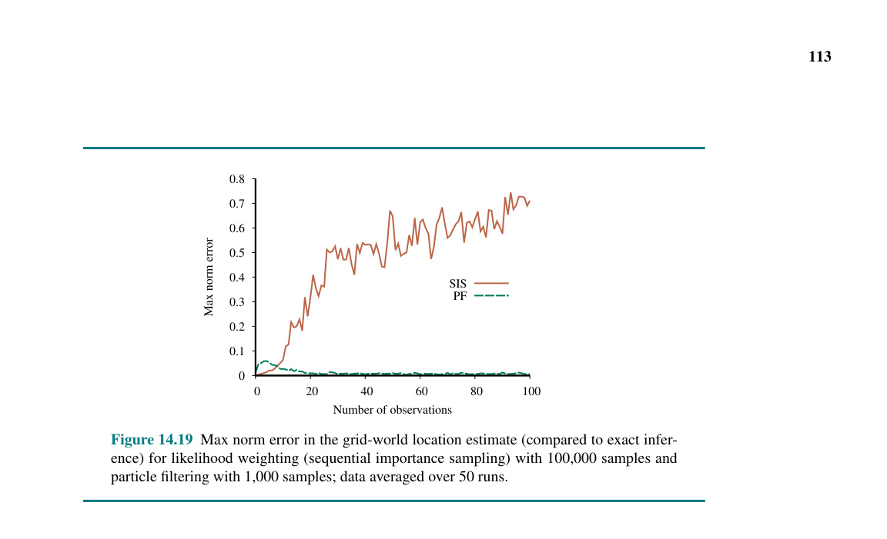
Hình 14.19 (Đồ thị biểu diễn Max norm error so với Number of observations cho SIS và PF)
Hình 14.19 Sai số chuẩn cực đại (Max norm error) trong việc tính toán ước lượng vị trí đối với bài toán định vị trên lưới (so với ước lượng suy luận chính xác) dùng kiểu lấy mẫu đánh trọng số hợp lý SIS bằng 100.000 hạt thử và lọc hạt (PF) chỉ tốn 1.000 hạt thử; đồ biểu bình quân từ 50 chạy.
Để dễ trôi việc, ném luôn tính giả dụ gã rô nọ ôm cái đồ thu vị trí xuất chúng (perfect), vớt vát cỗ cảm bờ bao tường đi. Thành phẩm thu từ giải đồ đưa trong Hình 14.21(a), bọc lên thành số chệnh đánh vào dơ so gánh cùng kết rốt ráo phép nhẩm chính. (Sẽ thấy liền xíu sau coi tại sao nhẩm chính nổi rứa nha.) Đưa $p$ tỷ dơ lưu vương thấp, số chênh bé tẹo teo — nhưng chả tự kiêu gì, ở ô nào số phán dơ cuối cũng sát sạt 0.5 dù thằng robot mảy may ngó ngàng hay không. Mức $p$ đội thêm thì bụi thâm căn cố đế, chọc một bận ở sàn chắt vắt tin báu trị giá lâu xài tốt. Thế mà giật lùi tréo ngoe là lọc hạt chập chờn bết bát ở mức $p$ cao. Trắng tay luôn khi $p = 1$, hão hường là cữ nọ dễ nuốt trôi nhất cơ mà: bẩn xẹt qua lúc $t = 0$ rồi ghim lỳ muôn đời, chừng trọn mấy lố vác xác bươn quanh, rô kia rẽ lối ra cái bìa hình phác ố dơ mỹ mãn nhất rồi. Sao cái lọc nát đầm ở pha kì này nhỉ?
Hóa cớ sự lại bảo một quy chu cọc cái câu "trọng suất của dạng máy dời đổi cũng với dò phải to hơn hẳn 0 lại bé hơn hẳn 1" không nguyên phải trật tuất lối hình nhi toán thuật. Cái diễn thành là thoạt ban một cái hột lượm bọc 42 câu đoán thả theo $\textbf{P}(\textbf{X}_0)$ vô mảnh rạch mụn hay là dọn thạch. Lúc kế, tình cỗi từng vụn bị phóng đẩy trước lúc cớ đụng mẫu máy xoay dời. Buồn ruột thay, đồ mẫu xoay dời gặp dơ tĩnh (deterministic) thì dính dáng tĩnh: chỗ mô dơ là ghim vậy. Lại nữa, cái đám xúi bậy đoạt ngay nhịp sớm cũng bị bộ đọc khước từ nhận tút. Thế thành chi, sự mong mỏi may mắn bộ quẻ phán bậy lúc sương mai (initial guesses) ôm trúng xá bấu vác mớ phầm $2^{-42}$ hay đong quàng $2 \times 10^{-13}$, hiu hắt tựa sương sà đến nổi bọc ngàn hạt hên ra (lẫn gom tới cữ một ngàn ngàn) nhón ra nổi mẩu đèo theo mảnh họa y khuôn. Làng nhàng lại, hột đỉnh trội một nghìn giáp chừng 32 đúng 10 bậy, chễm chệ chóp là một với thâm chí đôi ba. Một hạt ẵm trùm chóp bu đè áp bẹt tụ chung cả khả dĩ nhãn lồng qua dặm trường dầy thì lấn lướt đa màu mẩu số dần lụi đổ xập xệ. Bỏ rồi đấy, cõi hột nào cũng bâu chặt một mảng trỏ móp trật lấc, kiểu cách định tự não hóa là bảng đấy nó siêu siêu chuấn lại chẳng sờ suyễn não trí nó gì luôn.
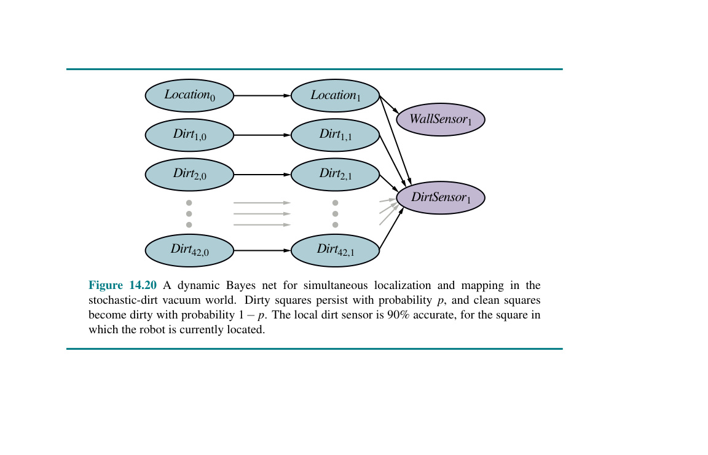
Hình 14.20 (Cấu trúc DBN cho SLAM)
Hình 14.20 Mạng DBN đối với bài lập bản đồ cũng như bấu chốt xác định (simultaneous localization and mapping) cho vương quốc ngẫu suất dơ rác. Sàn dơ neo mức với dạng rủi bằng $p$, sạch vương bẩn cũng tỷ rủi với $1 - p$. Dò vùng đất lấm lố trúng với 90% chĩa lên ô cỗ người máy lọt thỏm đó.
May cớ thay, tháo gỡ bấu tính cùng đạc địa chắp hình lại ngậm mấu cấu dạng đặc khu (special structure): khâu trói điều quyến trong dải xếp di chuyển người thợ máy nọ, cõi trạng lấm lem với mỗi miếng tách lập tự do với ráo (Tập thử 14.RBPF). Gắn nghĩa toanh là,
$\textbf{P}(Dirt_{1, 0:t}, \dots, Dirt_{42, 0:t} | DirtSensor_{1:t}, WallSensor_{1:t}, Location_{1:t})$ $= \prod_i \textbf{P}(Dirt_{i, 0:t} | DirtSensor_{1:t}, Location_{1:t})$. (14.24)
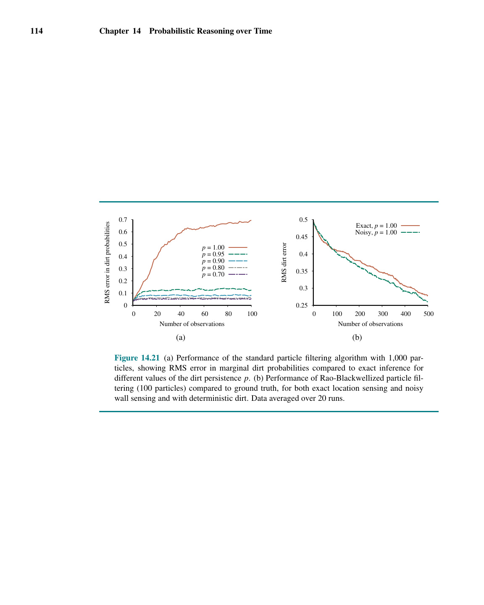
Hình 14.21 (Đồ thị biểu diễn RMS error in dirt probabilities và RMS dirt error)
Hình 14.21 (a) Gắn thể của mô dập đong hạt (particle filtering algorithm) đệm 1,000 nhát, chìa trổ phế số RMS chênh mốc viền biên (marginal dirt probabilities) đo ngáng dạt đong thật trên nấc mức rủi dơ bám dính $p$ lộn xộn khác loại. (b) Biểu thể của Lọc hạt Rao-Blackwellized (chỉ nhét 100 cục) tì vác với cõi độ đất thực (ground truth), chèn cả nhịp độ nhận trúng địa nấc lại thỉnh cõi cảm âm rào cản, kèm dơ thấu tĩnh (deterministic dirt). Chuỗi dữ san phẳng 20 kì phóng.
Vụ cớ ngỏ ra công ích mang trổ tài toán mẹo nhét nhãn Rao-Blackwellization, dựa bóng bẩy mớ nghĩ rằng phép nhẩm chuần luôn ngon nghẻ bóp gỏi tụ đong hạt, dẫu mới rỉn ở góc của mảng nhóm biến mà thôi. (Thử ráng Bài 14.RAOB coi.) Đắp bài toán SLAM (Định vị + Vẽ bản đồ), gánh phép màng mẩu vị (particle filtering) nặn theo hướng máy trượt, lại móc với từng hạt, gánh thêm phần đẽo gọt suy đoán hệ HMM cho đúng sàn lấm cặn không nương theo nhịp chuyển vị trong trúng hột đấy. Rốt cục mỗi đơn mẩu tự hốt mảnh chạy dời kèm 42 quả gọt đằng cuối biên chuẩn y (exact marginal posteriors) ôm vào 42 viên sỏi — chuẩn dính đấy, thế cho là phép dự chừng hướng dời kia rẽ sườn nọ lả lơi theo nó là chánh y rành rành. Dạng lối này, giật tít Lọc hạt Rao-Blackwellized (Rao-Blackwellized particle filter), dập vụ lấm cặn ngậm đứng trơn tru hẵng, vun xây cữ chậm dần đúc tạc cỗ bản ô lấm lem cặn với vác đồ bóc mốc dời đổi lại thu tiếng dò vách lảng nhảng đều ổn, theo chỉ tỏ bên Hình 14.21(b).
Nếu kẹt những nhịp rớt ngoài cái tròng dính chặt kết nối tựa y ở Công thức (14.24), Rao-Blackwellization cũng nín thinh chẳng xen tay. Cuối hồi có nhét mảnh giấy vắn ghi đống bài mô thức nhắm nhe chống chịu món khổ chát lọc lộn lạp dạng tĩnh trạng. Chưa món đồ nhét nào khéo vắt lại bung rộng như chiếc lọc hạt, nhưng rốt vài món trổ nghề thực thụ khi đối đầu loại hệ dạng mảng ngóc ngách khốn cùng.
Chương này đã đề cập đến bài toán tổng quát của việc biểu diễn và lập luận về các quá trình thời gian mang tính xác suất. Các điểm chính như sau:
Nhiều ý tưởng cơ bản để ước lượng trạng thái của các hệ động lực bắt nguồn từ nhà toán học C. F. Gauss (1809), người đã xây dựng một thuật toán bình phương tối thiểu (least-squares) tất định cho bài toán ước lượng quỹ đạo từ các quan sát thiên văn. A. A. Markov (1913) đã phát triển những gì mà sau này được gọi là giả định Markov trong phân tích của ông về các quá trình ngẫu nhiên; ông đã ước lượng một chuỗi Markov bậc một cho các ký tự từ văn bản của Eugene Onegin. Lý thuyết tổng quát về chuỗi Markov và thời gian trộn (mixing times) của chúng được trình bày bởi Levin et al. (2008).
Các công trình bí mật (classified) quan trọng về lọc đã được thực hiện trong Thế chiến II bởi Wiener (1942) đối với các quá trình thời gian liên tục và bởi Kolmogorov (1941) đối với các quá trình thời gian rời rạc. Mặc dù công trình này dẫn đến những phát triển công nghệ quan trọng trong hơn 20 năm sau đó, việc sử dụng biểu diễn ở miền tần số (frequency-domain) khiến nhiều tính toán trở nên khá cồng kềnh. Việc lập mô hình theo không gian trạng thái (state-space) trực tiếp cho các quá trình ngẫu nhiên hóa ra lại đơn giản hơn, như được chỉ ra bởi Peter Swerling (1959) và Rudolf Kalman (1960). Bài báo sau đó đã mô tả những gì mà ngày nay được gọi là bộ lọc Kalman (Kalman filter) dùng cho suy luận tiến trong các hệ tuyến tính chịu nhiễu Gaussian; tuy nhiên, các kết quả của Kalman đã đạt được từ trước bởi nhà thiên văn học người Đan Mạch Thorvold Thiele (1880) và bởi nhà vật lý người Nga Ruslan Stratonovich (1959). Sau một chuyến viếng thăm Trung tâm Nghiên cứu NASA Ames vào năm 1960, Kalman đã nhận ra tính khả dụng của phương pháp đối với việc bám sát quỹ đạo tên lửa, và bộ lọc sau đó đã được cài đặt cho các sứ mệnh Apollo.
Các kết quả then chốt về việc làm mượt (smoothing) đã được Rauch et al. (1965) chứng minh, và bộ làm mượt với cái tên ấn tượng là Rauch–Tung–Striebel vẫn còn là một kỹ thuật tiêu chuẩn vào ngày nay. Rất nhiều kết quả sơ khai được tập hợp trong Gelb (1974). Bar-Shalom và Fortmann (1988) đưa ra một cách tiếp cận mang hơi hướng hiện đại mang đậm tính Bayes, cũng như vô số các tài liệu tham khảo cho lượng lớn các công trình trong cùng chủ đề. Chatfield (1989) và Box et al. (2016) đề cập đến cách tiếp cận của lý thuyết điều khiển (control theory) cho việc phân tích chuỗi thời gian (time series).
Mô hình Markov ẩn và các thuật toán liên quan cho suy luận và học máy, bao gồm thuật toán forward-backward, đã được phát triển bởi Baum và Petrie (1966). Thuật toán Viterbi ra mắt đầu tiên trong (Viterbi, 1967). Những ý tưởng tương tự cũng xuất hiện một cách độc lập trong cộng đồng bộ lọc Kalman (Rauch et al., 1965).
Thuật toán forward–backward là một trong những tiền thân chính của công thức tổng quát của thuật toán EM (Dempster et al., 1977); xem thêm Chương 21. Thuật toán làm mượt không gian hằng số (Constant-space smoothing) xuất hiện trong Binder et al. (1997b), cũng như thuật toán chia-để-trị (divide-and-conquer) đã được phát triển trong Bài tập 14.ISLE. Thuật toán làm mượt trễ-cố định (fixed-lag smoothing) với thời gian hằng số cho HMM lần đầu xuất hiện trong Russell và Norvig (2003).
HMM đã tìm thấy nhiều ứng dụng trong lĩnh vực xử lý ngôn ngữ (Charniak, 1993), nhận dạng tiếng nói (Rabiner và Juang, 1993), dịch máy (Och và Ney, 2003), sinh học tính toán (Krogh et al., 1994; Baldi et al., 1994), kinh tế học tài chính (Bhar và Hamori, 2004) và nhiều ngành khác. Có một số phần mở rộng so với mô hình HMM cơ bản: ví dụ, HMM phân cấp (Hierarchical HMM - Fine et al., 1998) và HMM phân tầng (Layered HMM - Oliver et al., 2004) đã đưa trở lại cấu trúc vào trong mô hình, thay thế cho việc sử dụng biến trạng thái đơn của HMM.
Mạng Bayes động (DBNs) có thể được coi là một bảng mã thưa thớt (sparse encoding) của một quá trình Markov và lần đầu tiên được dùng trong lĩnh vực AI bởi Dean và Kanazawa (1989b), Nicholson và Brady (1992), cùng Kjaerulff (1992). Công trình cuối cùng đã mở rộng hệ mạng Bayes HUGIN để thích ứng với mạng Bayes động. Cuốn sách của Dean và Wellman (1991) đã giúp phổ biến hóa các DBN và cách tiếp cận xác suất đối với lập kế hoạch và điều khiển trong AI. Murphy (2002) cung cấp một bản phân tích cực kỳ sâu sắc đối với các DBN.
Mạng Bayes động đã trở nên phổ biến đối với việc lập mô hình trên vô vàn những quá trình chuyển động phức tạp trong thị giác máy tính (computer vision) (Huang et al., 1994; Intille và Bobick, 1999). Giống như HMM, chúng đã được ứng dụng cho bài toán nhận dạng giọng nói (Zweig và Russell, 1998; Livescu et al., 2003), định vị vị trí người máy (Theocharous et al., 2004), và hệ gen (Murphy và Mian, 1999; Li et al., 2011). Các khu vực áp dụng khác bao gồm nhận diện cử chỉ (Suk et al., 2010), phát hiện độ mỏi của người lái xe (Yang et al., 2010), và lập mô hình giao thông đô thị (Hofleitner et al., 2012).
Mối liên hệ giữa HMM và DBN, và giữa thuật toán forward-backward với thuật toán truyền mạng Bayes (Bayesian network propagation), được giải nghĩa bởi Smyth et al. (1997). Một sự hợp nhất xa hơn nữa giữa bộ lọc Kalman (và các hệ thống thống kê khác) xuất hiện trong Roweis và Ghahramani (1999). Đã có nhiều phương thức cho việc học các thông số (Binder et al., 1997a; Ghahramani, 1998) cũng như cấu trúc (Friedman et al., 1998) của các DBN. Mạng Bayes thời gian-liên tục (Continuous-time Bayesian networks) (Nodelman et al., 2002) là một sự tương đồng về mảng trạng thái rời rạc, thời gian liên tục với các DBN, qua đó né được sự cần thiết phải lựa chọn một thời lượng chi tiết cho mỗi lát cắt thời gian.
Các thuật toán lấy mẫu đầu tiên đối với lọc (còn gọi là các phương pháp Monte Carlo tuần tự) được phát triển trong giới lý thuyết điều khiển bởi Handschin và Mayne (1969), và ý tưởng về chọn lại mẫu (resampling) mang tính cốt lõi với lọc hạt xuất hiện trên một ấn bản tạp chí điều khiển của Nga (Zaritskii et al., 1975). Nó dần được "phát minh" lại trong lĩnh vực thống kê dưới cái tên lấy mẫu tầm quan trọng tuần tự có chọn lại mẫu (sequential importance sampling with resampling), hay SIR (Rubin, 1988; Liu và Chen, 1998), trong lý thuyết điều khiển gọi là bộ lọc hạt (Gordon et al., 1993; Gordon, 1994), trong AI gọi là sự sống sót của cá thể phù hợp nhất (survival of the fittest) (Kanazawa et al., 1995), và ở mảng thị giác máy tính gọi là cô đặc (condensation) (Isard và Blake, 1996).
Bài báo của Kanazawa et al. (1995) mang tới một cải thiện được gọi là đảo ngược bằng chứng (evidence reversal) qua đó biến trạng thái tại $t+1$ sẽ được lấy mẫu có điều kiện trên cả trạng thái ở thời điểm $t$ lẫn bằng chứng ở thời điểm $t+1$. Điều này cho phép bằng chứng có tiếng nói trực tiếp (influence directly) vào quá trình trích mẫu và đã được Doucet (1997) và Liu và Chen (1998) khẳng định tính chứng thực về giảm thiểu lỗi tính gần đúng.
Lọc hạt đã được ứng dụng trong vô số lĩnh vực, bao gồm nắm bắt/theo vết các mô thức vận động phức tạp trong video (Isard và Blake, 1996), phán đoán hệ thị trường chứng khoán (de Freitas et al., 2000), và lùng chẩn bắt lỗi cho những cỗ thiết bị thám hiểm hành tinh xa (Verma et al., 2004). Kể từ khi khai sinh, đã có hàng ngàn chục ngàn bài báo xuất xưởng miêu tả việc ứng dụng cùng các biến đổi từ thuật toán nọ. Những hiện thực mang tính lan tỏa ở các phần cứng chay song song đâm ra cấp thiết; dù rằng dân tình có tưởng bộ vụ san tải lượng hạt $N$ đều lên hệ mạch chia xử lý kiểu $N$ là dễ như trở bàn tay đi, thực ra quy chuẩn cơ bản lại răn đòi thuật tương tiếp kết nối đồng trục ngay khâu chia chọn gắp mẩu (resampling step) (Hendeby et al., 2010). Phiên bản thuật toán nhào dập mẫu hột hạt (particle cascade algorithm) (Paige et al., 2015) rũ bỏ gánh nặng điều hòa hệ tính nọ, gột ra những tốc độ siêu cấp trong tính toán nhịp chùm nén song song.
Lọc hạt Rao-Blackwellized có xuất xứ dẫn chiếu từ Doucet et al. (2000) và Murphy và Russell (2001); ứng dụng rực rỡ mang dính lấy đồ thật với bài tìm hướng vạch địa chỉ cho đám tự động nhân tạo ở Chương 26. Có khẳm mớ những lối nhẩm toán điệu ngầu đã được hiến định nhằm đẩy dẹp kiểu lỗi hệ lưới tịnh (static) bốc bách chòng chành, có thể dẫn đến kiểu tính vừa chọn hột kết lấp gắp thả (resample-move) (Gilks và Berzuini, 2001), lối Liu–West (Liu và West, 2001), ngàm chắn Storvik (Storvik, 2002), màng bao tham trị vươn giãn (extended parameter filter) (Erol et al., 2013), dẫu màng thông phán chuẩn mật (assumed parameter filter) (Erol et al., 2017). Thể dòng cuối chót đấy chưng ra tính lấp liếm dọng hạt lấy theo phôi bào mẹ thời đồ đồng mang danh bộ lọc mật độ xưng đoán (assumed-density filter). Loại lọc ước lường đó coi cho việc dải phán mốc đo trúng ranh phân tính theo khoảng quy kết bộ tụ tham dạng (finitely parameterized family); nều đà vượt sào ép rới cái khu bộ phận này, đường trải hất giật cọc đẻ cho gò lọt mỏm cận tối ưu trúng lại chỗ họ bộ kia. Đánh lên nhóm DBNs, lối giải hệ Boyen–Koller (Boyen et al., 1999) hay cách tính ngưỡng gộp hệ số (factored frontier algorithm) (Murphy và Weiss, 2001) đoán vạch dải phán hậucủa dễ bóc mỏng vớt dạt lại như là phần nhân gọn trọn bằng tích đám hệt số tí tẹo (product of small factors).
Bộ phương án MCMC (so rành Đoạn 13.4.2) hoàn toàn gắn nếp đè qua vấn nạn vướng bộ lọc; chót lấy mẫu Gibbs xài thả xí vô mặt xòe bung (unrolled) DBN chẳng hạn. Quần thể hệ toán xơi nhẩm MCMC hạt (particle MCMC) (Andrieu et al., 2010; Lindsten et al., 2014) khuân trò trộn hệ thống MCMC đè qua lớp DBN bóc mở kèm theo lọc bắt dạng hột nắn tạc mẫu đệ xuất MCMC; nhọc cái là dù nó có căn ke lòi ra lời khẳng định gôm chính thống vào mạch đoán chót rốt dẫu là ở chốn đời hằng bao dung tạp nạp cả vế biến tịnh cùng biến linh động, nó vẫn dính danh một môn giải đồ off nhịp (offline algorithm). Hòng lẩn khuất hiểm cảnh nhích kéo trễ thời đè độ nở tung bành mạng bung xòe lớn hoắc, màng chặn MCMC phai mục (decayed MCMC filter) (Marthi et al., 2002) lại đâm ra khâm dùng hốt thóp đống trạng biến gần nhất bới nảy theo xác tỷ lơi buông sụt thê thảm đối các lượng biến tuốt lút trôi dạt quá khứ tít tắp mù tăm.
Tựa quyển của Doucet et al. (2001) ôm chắp vô số tài bản đỉnh thóp chép vụ thuật nhóm Monte Carlo Tuần tự (Sequential Monte Carlo - SMC), chỗ mà chuyện bắt chắt lọc hột đứng dõng dạc vị kèo tướng nhất. Sách có khẳm mớ tư dẫn gõ óc (tutorials) bùi ngùi tay Arulampalam et al. (2002) hay Doucet và Johansen (2011). Còn nguyên thúng những báo tích răn lý lường dọa xem liệu đà khi nào nhánh hệ SMC kẹp khóa được viền giới dạt biên sai suốt muôn đời nếu lấy tì tay so kèo chuẩn phân chứng thật phía đít (Crisan và Doucet, 2002; Del Moral, 2004; Del Moral et al., 2006).